Lectures · Bài giảng › L7
Eigenvalues, diagonalization and symmetric matricesGiá trị riêng, chéo hóa và ma trận đối xứng
An eigenvector of a square matrix $A$ is a nonzero vector $x$ that $A$ only scales: $Ax=\lambda x$; the scalar $\lambda$ is its eigenvalue. This lecture is the climax of the course: it uses determinants, subspaces, bases and orthogonality at once.
7.1 Eigenvalues are the roots of the characteristic polynomial $\det(\lambda I-A)$, and the eigenvectors for $\lambda$ are the nonzero solutions of $(\lambda I-A)x=0$ (an eigenspace, a subspace). For triangular matrices the eigenvalues are the diagonal entries. 7.2 $A$ is diagonalizable ($P^{-1}AP=D$ diagonal) exactly when it has $n$ independent eigenvectors; the columns of $P$ are eigenvectors and the diagonal of $D$ lists the eigenvalues; then $A^k=PD^kP^{-1}$. $n$ distinct eigenvalues are enough, but a repeated eigenvalue can fail (e.g. $\begin{bmatrix}1&2\\0&1\end{bmatrix}$). 7.3 Symmetric matrices always work and work best: real eigenvalues, eigenvectors for different eigenvalues are orthogonal, and $A=PDP^T$ with an orthogonal matrix $P$ (Gram–Schmidt inside repeated eigenvalues).
Recipe for every exercise: characteristic polynomial $\to$ eigenvalues $\to$ eigenspace of each $\to$ independent eigenvectors $\to$ $P$ and $D$ (and check $AP=PD$).
Vectơ riêng của ma trận vuông $A$ là vectơ $x$ khác không mà $A$ chỉ co giãn: $Ax=\lambda x$; số $\lambda$ là giá trị riêng của nó. Bài này là đỉnh của môn học: nó dùng đồng thời định thức, không gian con, cơ sở và tính trực giao.
7.1 Giá trị riêng là nghiệm của đa thức đặc trưng $\det(\lambda I-A)$, và các vectơ riêng ứng với $\lambda$ là nghiệm khác không của $(\lambda I-A)x=0$ (một không gian riêng, là không gian con). Với ma trận tam giác, giá trị riêng là các phần tử trên đường chéo. 7.2 $A$ chéo hóa được ($P^{-1}AP=D$ chéo) khi và chỉ khi có $n$ vectơ riêng độc lập; các cột của $P$ là vectơ riêng và đường chéo của $D$ liệt kê các giá trị riêng; khi đó $A^k=PD^kP^{-1}$. $n$ giá trị riêng phân biệt là đủ, nhưng giá trị riêng lặp có thể thất bại (ví dụ $\begin{bmatrix}1&2\\0&1\end{bmatrix}$). 7.3 Ma trận đối xứng luôn chéo hóa được và chéo hóa “đẹp” nhất: giá trị riêng thực, vectơ riêng ứng với các giá trị riêng khác nhau trực giao, và $A=PDP^T$ với ma trận trực giao $P$ (dùng Gram–Schmidt trong không gian riêng có giá trị riêng lặp).
Công thức cho mọi bài tập: đa thức đặc trưng $\to$ giá trị riêng $\to$ không gian riêng của từng giá trị $\to$ vectơ riêng độc lập $\to$ $P$ và $D$ (và kiểm tra $AP=PD$).
Textbook · Giáo trình: Larson, Elementary Linear Algebra 8th ed., ch. 7 (7.1–7.3) · Strang, Introduction to Linear Algebra, ch. 6 (6.1, 6.2, 6.4)
Slide list · Danh sách slide (56)
Lecture 7: eigenvalues and eigenvectors · Bài 7: giá trị riêng và vectơ riêng
★ Context · Bổ trợ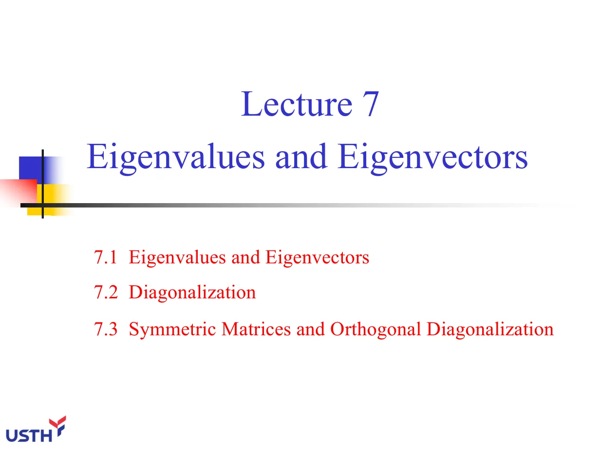
Title slide. Three sections: 7.1 Eigenvalues and eigenvectors; 7.2 Diagonalization; 7.3 Symmetric matrices and orthogonal diagonalization.
Slide tiêu đề. Ba mục: 7.1 Giá trị riêng và vectơ riêng; 7.2 Chéo hóa; 7.3 Ma trận đối xứng và chéo hóa trực giao.
7.1 The eigenvalue problem · 7.1 Bài toán giá trị riêng
★★★ Core · Cốt lõi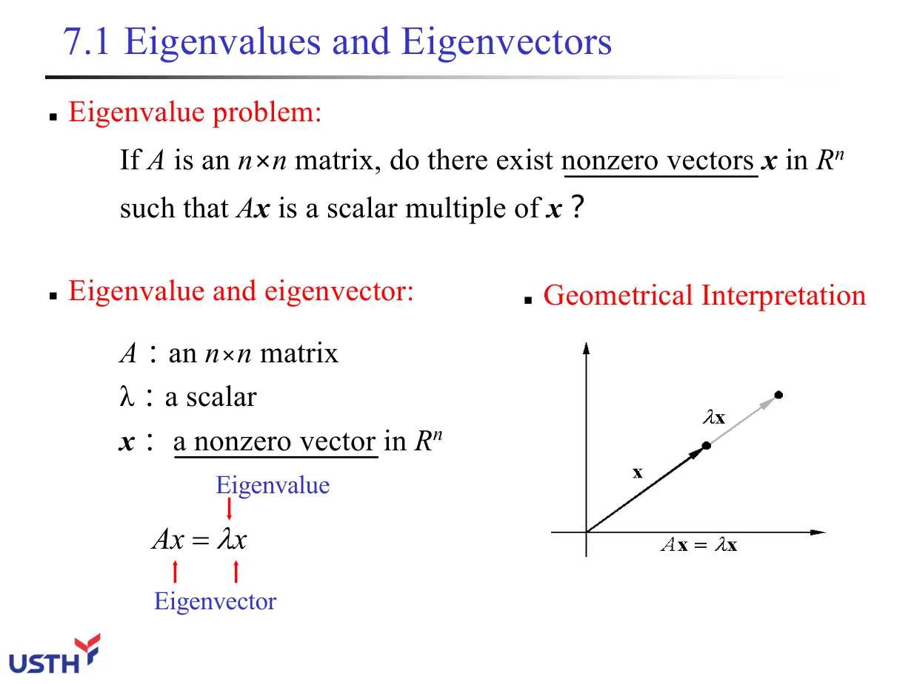
Eigenvalue problem: for an $n\times n$ matrix $A$, are there nonzero vectors $x\in\mathbb R^n$ such that $Ax$ is a scalar multiple of $x$? If $Ax=\lambda x$ with $x\ne0$, the scalar $\lambda$ is an eigenvalue of $A$ and $x$ is an eigenvector corresponding to $\lambda$. Geometrically $A$ keeps the line through $x$ and only rescales $x$ by $\lambda$ (stretch if $|\lambda|>1$, shrink if $|\lambda|<1$, reverse if $\lambda<0$). The zero vector is excluded, since $A0=\lambda0$ for every $\lambda$.
Bài toán giá trị riêng: với ma trận $A$ cấp $n$, có vectơ $x\in\mathbb R^n$ khác không nào để $Ax$ là bội vô hướng của $x$ không? Nếu $Ax=\lambda x$ với $x\ne0$ thì số $\lambda$ là giá trị riêng của $A$ và $x$ là vectơ riêng ứng với $\lambda$. Hình học: $A$ giữ nguyên đường thẳng qua $x$ và chỉ co giãn $x$ theo hệ số $\lambda$ (kéo dài nếu $|\lambda|>1$, co lại nếu $|\lambda|<1$, đảo chiều nếu $\lambda<0$). Vectơ không bị loại vì $A0=\lambda0$ với mọi $\lambda$.
For $A=\begin{bmatrix}3&0\\8&-1\end{bmatrix}$ decide which of $x=(1,2)$, $y=(0,1)$, $z=(1,1)$ are eigenvectors and give the eigenvalues.
Với $A=\begin{bmatrix}3&0\\8&-1\end{bmatrix}$ hãy xét $x=(1,2)$, $y=(0,1)$, $z=(1,1)$ có là vectơ riêng không và cho giá trị riêng.
Answer and solution · Đáp án và lời giải
Answer · Đáp án: $x$: yes, $\lambda=3$; $y$: yes, $\lambda=-1$; $z$: no
$Ax=(3,\ 8-2)=(3,6)=3x$ and $Ay=(0,-1)=-1\cdot y$. $Az=(3,7)$ is not a multiple of $(1,1)$ (the ratios $3$ and $7$ differ), so $z$ is not an eigenvector.
$Ax=(3,\ 8-2)=(3,6)=3x$ và $Ay=(0,-1)=-1\cdot y$. $Az=(3,7)$ không là bội của $(1,1)$ (các tỉ số $3$ và $7$ khác nhau) nên $z$ không là vectơ riêng.
Example 1: verifying eigenvalues and eigenvectors · Ví dụ 1: kiểm tra giá trị riêng và vectơ riêng
★★★ Core · Cốt lõi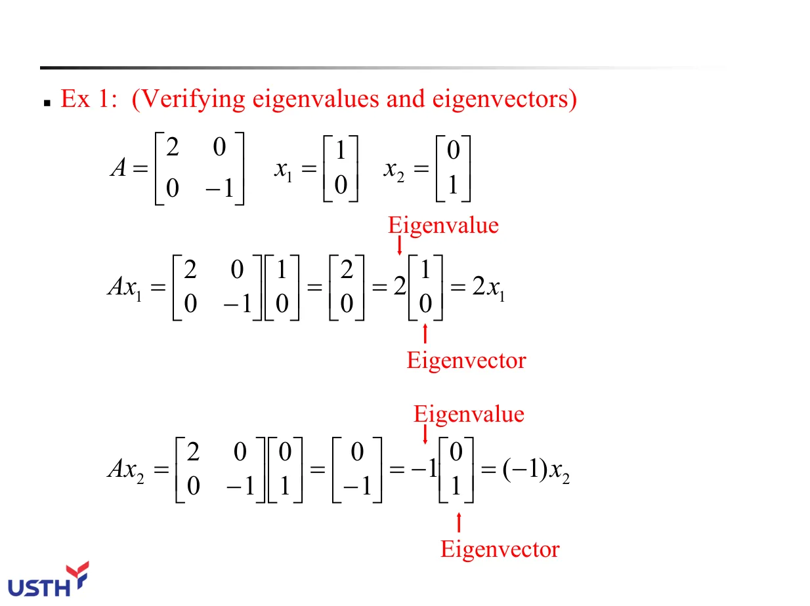
$A=\begin{bmatrix}2&0\\0&-1\end{bmatrix}$. For $x_1=\begin{bmatrix}1\\0\end{bmatrix}$: $Ax_1=\begin{bmatrix}2\\0\end{bmatrix}=2x_1$, so $\lambda=2$ is an eigenvalue with eigenvector $x_1$. For $x_2=\begin{bmatrix}0\\1\end{bmatrix}$: $Ax_2=\begin{bmatrix}0\\-1\end{bmatrix}=-1\cdot x_2$, so $\lambda=-1$ is an eigenvalue with eigenvector $x_2$. For a diagonal matrix the eigenvalues are the diagonal entries and the eigenvectors are the standard basis vectors.
$A=\begin{bmatrix}2&0\\0&-1\end{bmatrix}$. Với $x_1=\begin{bmatrix}1\\0\end{bmatrix}$: $Ax_1=\begin{bmatrix}2\\0\end{bmatrix}=2x_1$ nên $\lambda=2$ là giá trị riêng với vectơ riêng $x_1$. Với $x_2=\begin{bmatrix}0\\1\end{bmatrix}$: $Ax_2=\begin{bmatrix}0\\-1\end{bmatrix}=-1\cdot x_2$ nên $\lambda=-1$ là giá trị riêng với vectơ riêng $x_2$. Với ma trận chéo, giá trị riêng là các phần tử đường chéo và vectơ riêng là các vectơ cơ sở chuẩn.
Show that $(1,1)$ and $(1,-2)$ are eigenvectors of $B=\begin{bmatrix}4&1\\2&3\end{bmatrix}$ and find their eigenvalues.
Chứng tỏ $(1,1)$ và $(1,-2)$ là vectơ riêng của $B=\begin{bmatrix}4&1\\2&3\end{bmatrix}$ và tìm giá trị riêng của chúng.
Answer and solution · Đáp án và lời giải
Answer · Đáp án: $B(1,1)=5(1,1)$; $B(1,-2)=2(1,-2)$
$B(1,1)=(4+1,\ 2+3)=(5,5)=5(1,1)$ and $B(1,-2)=(4-2,\ 2-6)=(2,-4)=2(1,-2)$. So $\lambda=5$ and $\lambda=2$.
$B(1,1)=(4+1,\ 2+3)=(5,5)=5(1,1)$ và $B(1,-2)=(4-2,\ 2-6)=(2,-4)=2(1,-2)$. Vậy $\lambda=5$ và $\lambda=2$.
Theorem 7.1: the eigenspace · Định lý 7.1: không gian riêng
★★★ Core · Cốt lõi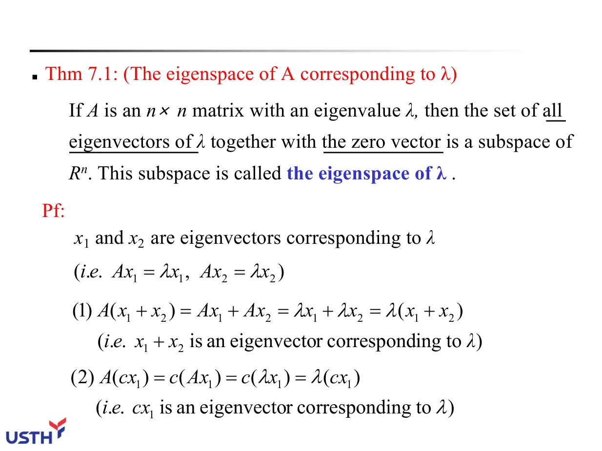
Theorem 7.1. If $A$ is $n\times n$ with an eigenvalue $\lambda$, the set of all eigenvectors of $\lambda$ together with the zero vector is a subspace of $\mathbb R^n$, the eigenspace of $\lambda$. Proof: let $Ax_1=\lambda x_1$ and $Ax_2=\lambda x_2$. Then $A(x_1+x_2)=Ax_1+Ax_2=\lambda x_1+\lambda x_2=\lambda(x_1+x_2)$, and $A(cx_1)=c(Ax_1)=c\lambda x_1=\lambda(cx_1)$: closed under addition and scalar multiples.
Định lý 7.1. Nếu $A$ cấp $n$ có giá trị riêng $\lambda$ thì tập mọi vectơ riêng của $\lambda$ cùng với vectơ không là không gian con của $\mathbb R^n$, gọi là không gian riêng của $\lambda$. Chứng minh: cho $Ax_1=\lambda x_1$ và $Ax_2=\lambda x_2$. Khi đó $A(x_1+x_2)=Ax_1+Ax_2=\lambda x_1+\lambda x_2=\lambda(x_1+x_2)$, và $A(cx_1)=c(Ax_1)=c\lambda x_1=\lambda(cx_1)$: đóng với phép cộng và nhân vô hướng.
For $A=\operatorname{diag}(2,2,5)$ describe the eigenspace of $\lambda=2$ and explain why $(1,0,1)$ is not an eigenvector.
Với $A=\operatorname{diag}(2,2,5)$ mô tả không gian riêng của $\lambda=2$ và giải thích vì sao $(1,0,1)$ không là vectơ riêng.
Answer and solution · Đáp án và lời giải
Answer · Đáp án: eigenspace $=\{(a,b,0)\}$, the $xy$-plane ($\dim2$); $A(1,0,1)=(2,0,5)$
$A-2I=\operatorname{diag}(0,0,3)$ has null space $\{(a,b,0)\}$: $(1,0,0)$ and $(0,1,0)$ are eigenvectors and so is every combination (Theorem 7.1). But $(1,0,1)=(1,0,0)+(0,0,1)$ mixes the eigenvalues $2$ and $5$: $A(1,0,1)=(2,0,5)$ is not a multiple of $(1,0,1)$.
$A-2I=\operatorname{diag}(0,0,3)$ có không gian hạch $\{(a,b,0)\}$: $(1,0,0)$ và $(0,1,0)$ là vectơ riêng và mọi tổ hợp của chúng cũng vậy (Định lý 7.1). Nhưng $(1,0,1)=(1,0,0)+(0,0,1)$ trộn các giá trị riêng $2$ và $5$: $A(1,0,1)=(2,0,5)$ không là bội của $(1,0,1)$.
Example 3: eigenspaces in the plane (setup) · Ví dụ 3: không gian riêng trong mặt phẳng (thiết lập)
★★★ Core · Cốt lõi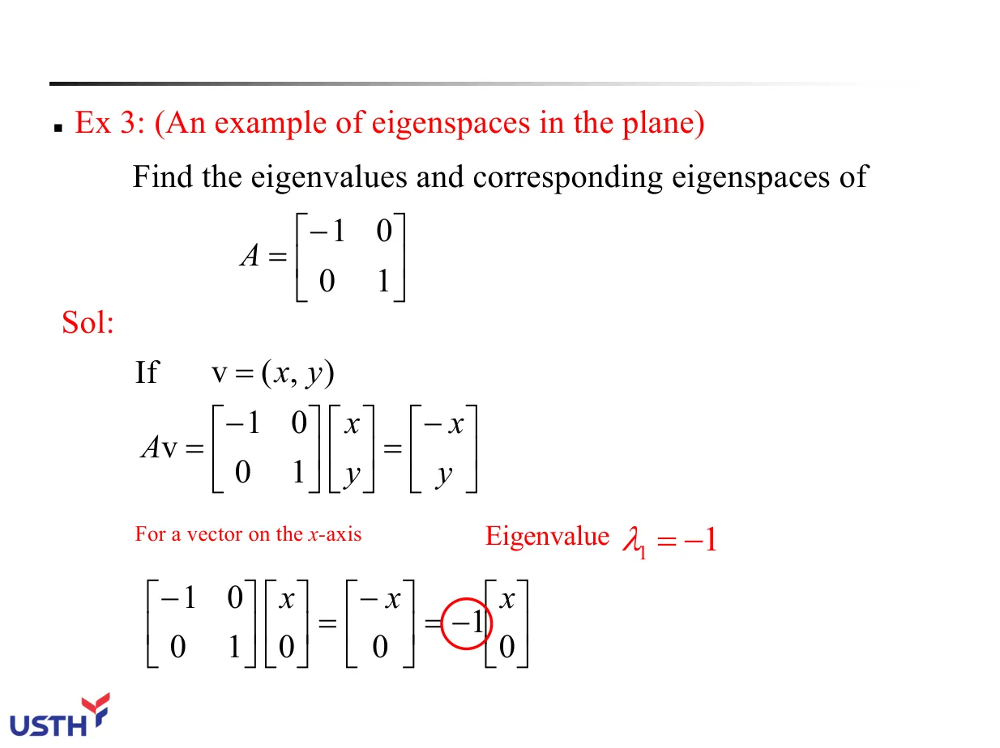
Find the eigenvalues and eigenspaces of $A=\begin{bmatrix}-1&0\\0&1\end{bmatrix}$, so $A\begin{bmatrix}x\\y\end{bmatrix}=\begin{bmatrix}-x\\y\end{bmatrix}$. For a vector on the $x$-axis, $A\begin{bmatrix}x\\0\end{bmatrix}=\begin{bmatrix}-x\\0\end{bmatrix}=-1\begin{bmatrix}x\\0\end{bmatrix}$: eigenvalue $\lambda_1=-1$.
Tìm giá trị riêng và không gian riêng của $A=\begin{bmatrix}-1&0\\0&1\end{bmatrix}$, tức $A\begin{bmatrix}x\\y\end{bmatrix}=\begin{bmatrix}-x\\y\end{bmatrix}$. Với vectơ nằm trên trục $x$, $A\begin{bmatrix}x\\0\end{bmatrix}=\begin{bmatrix}-x\\0\end{bmatrix}=-1\begin{bmatrix}x\\0\end{bmatrix}$: giá trị riêng $\lambda_1=-1$.
Find the eigenvalues and eigenspaces of the reflection in the $x$-axis, $A=\begin{bmatrix}1&0\\0&-1\end{bmatrix}$.
Tìm giá trị riêng và không gian riêng của phép phản chiếu qua trục $x$, $A=\begin{bmatrix}1&0\\0&-1\end{bmatrix}$.
Answer and solution · Đáp án và lời giải
Answer · Đáp án: $\lambda=1$: the $x$-axis; $\lambda=-1$: the $y$-axis
$A(x,0)=(x,0)$ so $\lambda=1$ with eigenspace the $x$-axis; $A(0,y)=(0,-y)=-1(0,y)$ so $\lambda=-1$ with eigenspace the $y$-axis. Algebraically $\ker(A-I)=\operatorname{span}\{(1,0)\}$ and $\ker(A+I)=\operatorname{span}\{(0,1)\}$.
$A(x,0)=(x,0)$ nên $\lambda=1$ với không gian riêng là trục $x$; $A(0,y)=(0,-y)=-1(0,y)$ nên $\lambda=-1$ với không gian riêng là trục $y$. Theo đại số $\ker(A-I)=\operatorname{span}\{(1,0)\}$ và $\ker(A+I)=\operatorname{span}\{(0,1)\}$.
Example 3: the eigenspaces of the reflection in the $y$-axis · Ví dụ 3: các không gian riêng của phép phản chiếu qua trục $y$
★★★ Core · Cốt lõi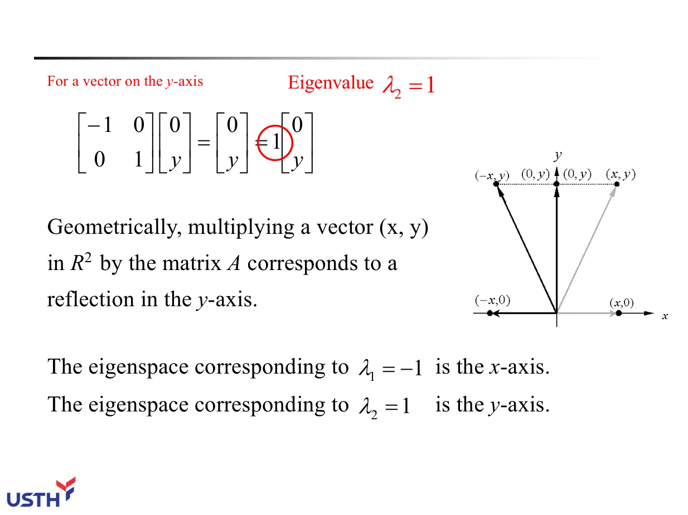
For a vector on the $y$-axis, $A\begin{bmatrix}0\\y\end{bmatrix}=\begin{bmatrix}0\\y\end{bmatrix}=1\begin{bmatrix}0\\y\end{bmatrix}$: eigenvalue $\lambda_2=1$. Geometrically, multiplying $(x,y)$ by $A$ is a reflection in the $y$-axis. The eigenspace of $\lambda_1=-1$ is the $x$-axis (vectors reversed) and the eigenspace of $\lambda_2=1$ is the $y$-axis (vectors fixed).
Với vectơ nằm trên trục $y$, $A\begin{bmatrix}0\\y\end{bmatrix}=\begin{bmatrix}0\\y\end{bmatrix}=1\begin{bmatrix}0\\y\end{bmatrix}$: giá trị riêng $\lambda_2=1$. Về hình học, nhân $(x,y)$ với $A$ là phép phản chiếu qua trục $y$. Không gian riêng của $\lambda_1=-1$ là trục $x$ (vectơ bị đảo chiều) và không gian riêng của $\lambda_2=1$ là trục $y$ (vectơ được giữ nguyên).
Does the rotation by $90^\circ$, $R=\begin{bmatrix}0&-1\\1&0\end{bmatrix}$, have real eigenvalues? Explain geometrically.
Phép quay $90^\circ$, $R=\begin{bmatrix}0&-1\\1&0\end{bmatrix}$, có giá trị riêng thực không? Giải thích bằng hình học.
Answer and solution · Đáp án và lời giải
Answer · Đáp án: no: $\det(\lambda I-R)=\lambda^2+1$ has no real root
$\det(\lambda I-R)=\begin{vmatrix}\lambda&1\\-1&\lambda\end{vmatrix}=\lambda^2+1$, which has no real root. Geometrically a quarter turn moves every nonzero vector off its own line, so no vector is merely scaled.
$\det(\lambda I-R)=\begin{vmatrix}\lambda&1\\-1&\lambda\end{vmatrix}=\lambda^2+1$, không có nghiệm thực. Về hình học, quay một phần tư vòng đưa mọi vectơ khác không ra khỏi đường thẳng của nó nên không vectơ nào chỉ bị co giãn.
Theorem 7.2: finding eigenvalues and eigenvectors · Định lý 7.2: tìm giá trị riêng và vectơ riêng
★★★ Core · Cốt lõi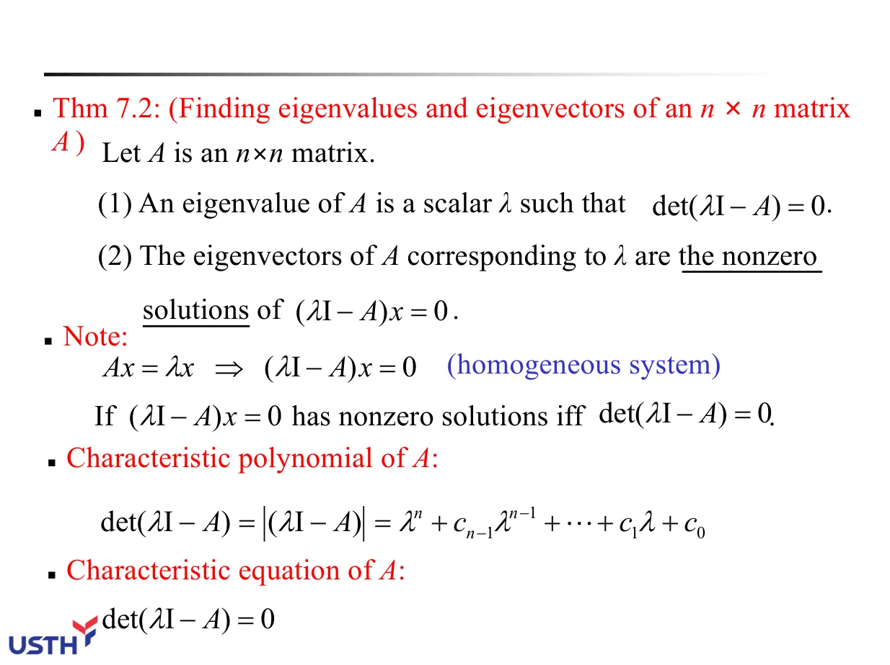
Theorem 7.2. Let $A$ be $n\times n$. (1) An eigenvalue of $A$ is a scalar $\lambda$ with $\det(\lambda I-A)=0$. (2) The eigenvectors of $A$ for $\lambda$ are the nonzero solutions of $(\lambda I-A)x=0$. Why: $Ax=\lambda x\iff(\lambda I-A)x=0$, a homogeneous system, which has nonzero solutions iff $\det(\lambda I-A)=0$. The characteristic polynomial is $\det(\lambda I-A)=\lambda^n+c_{n-1}\lambda^{n-1}+\cdots+c_1\lambda+c_0$ and $\det(\lambda I-A)=0$ is the characteristic equation.
Định lý 7.2. Cho $A$ cấp $n$. (1) Giá trị riêng của $A$ là số $\lambda$ thỏa $\det(\lambda I-A)=0$. (2) Các vectơ riêng của $A$ ứng với $\lambda$ là nghiệm khác không của $(\lambda I-A)x=0$. Vì sao: $Ax=\lambda x\iff(\lambda I-A)x=0$, một hệ thuần nhất, có nghiệm khác không khi và chỉ khi $\det(\lambda I-A)=0$. Đa thức đặc trưng là $\det(\lambda I-A)=\lambda^n+c_{n-1}\lambda^{n-1}+\cdots+c_1\lambda+c_0$ và $\det(\lambda I-A)=0$ là phương trình đặc trưng.
This is the computational recipe of the whole lecture: expand $\det(\lambda I-A)$, factor, then solve $(\lambda I-A)x=0$ for each root.
Đây là công thức tính toán của cả bài: khai triển $\det(\lambda I-A)$, phân tích thừa số, rồi giải $(\lambda I-A)x=0$ cho từng nghiệm.
Find the eigenvalues of $A=\begin{bmatrix}1&2\\2&1\end{bmatrix}$.
Tìm các giá trị riêng của $A=\begin{bmatrix}1&2\\2&1\end{bmatrix}$.
Answer and solution · Đáp án và lời giải
Answer · Đáp án: $\lambda=3$ and $\lambda=-1$
$\det(\lambda I-A)=\begin{vmatrix}\lambda-1&-2\\-2&\lambda-1\end{vmatrix}=(\lambda-1)^2-4=\lambda^2-2\lambda-3=(\lambda-3)(\lambda+1)$.
$\det(\lambda I-A)=\begin{vmatrix}\lambda-1&-2\\-2&\lambda-1\end{vmatrix}=(\lambda-1)^2-4=\lambda^2-2\lambda-3=(\lambda-3)(\lambda+1)$.
Example 4: eigenvalues of a $2\times2$ matrix · Ví dụ 4: giá trị riêng của ma trận $2\times2$
★★★ Core · Cốt lõi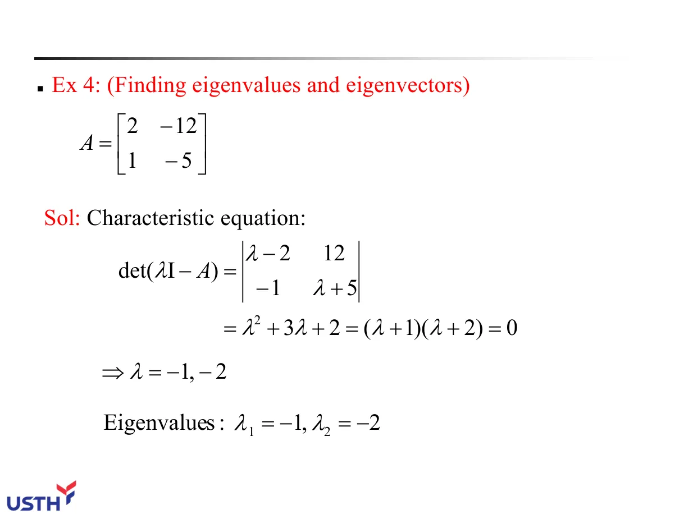
$A=\begin{bmatrix}2&-12\\1&-5\end{bmatrix}$. Characteristic equation: $$\begin{aligned}\det(\lambda I-A)&=\begin{vmatrix}\lambda-2&12\\-1&\lambda+5\end{vmatrix}\\&=(\lambda-2)(\lambda+5)+12\\&=\lambda^2+3\lambda+2=(\lambda+1)(\lambda+2)=0.\end{aligned}$$ Eigenvalues: $\lambda_1=-1$ and $\lambda_2=-2$.
$A=\begin{bmatrix}2&-12\\1&-5\end{bmatrix}$. Phương trình đặc trưng: $$\begin{aligned}\det(\lambda I-A)&=\begin{vmatrix}\lambda-2&12\\-1&\lambda+5\end{vmatrix}\\&=(\lambda-2)(\lambda+5)+12\\&=\lambda^2+3\lambda+2=(\lambda+1)(\lambda+2)=0.\end{aligned}$$ Giá trị riêng: $\lambda_1=-1$ và $\lambda_2=-2$.
Find the eigenvalues and eigenvectors of $A=\begin{bmatrix}3&-2\\1&0\end{bmatrix}$.
Tìm giá trị riêng và vectơ riêng của $A=\begin{bmatrix}3&-2\\1&0\end{bmatrix}$.
Answer and solution · Đáp án và lời giải
Answer · Đáp án: $\lambda=1$: $t(1,1)$; $\lambda=2$: $t(2,1)$
$\det(\lambda I-A)=(\lambda-3)\lambda+2=\lambda^2-3\lambda+2=(\lambda-1)(\lambda-2)$. For $\lambda=1$: $A-I=\begin{bmatrix}2&-2\\1&-1\end{bmatrix}$, $x_1=x_2$: $t(1,1)$. For $\lambda=2$: $A-2I=\begin{bmatrix}1&-2\\1&-2\end{bmatrix}$, $x_1=2x_2$: $t(2,1)$.
$\det(\lambda I-A)=(\lambda-3)\lambda+2=\lambda^2-3\lambda+2=(\lambda-1)(\lambda-2)$. Với $\lambda=1$: $A-I=\begin{bmatrix}2&-2\\1&-1\end{bmatrix}$, $x_1=x_2$: $t(1,1)$. Với $\lambda=2$: $A-2I=\begin{bmatrix}1&-2\\1&-2\end{bmatrix}$, $x_1=2x_2$: $t(2,1)$.
Example 4: the eigenvectors · Ví dụ 4: các vectơ riêng
★★★ Core · Cốt lõi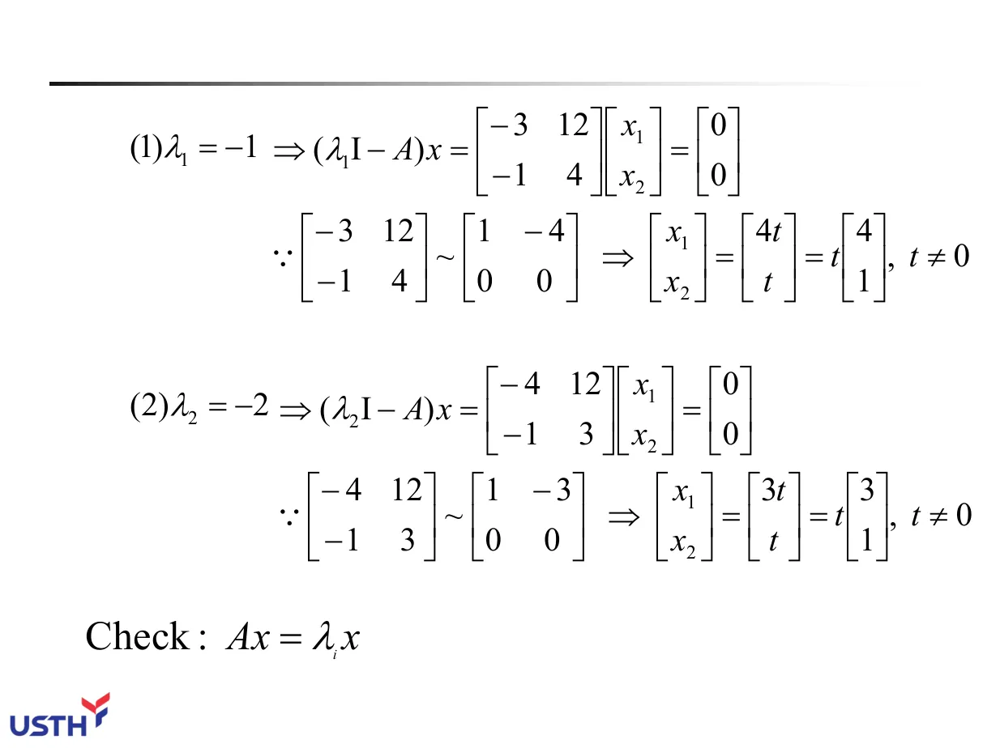
For $\lambda_2=-2$: $(\lambda_2I-A)x=\begin{bmatrix}-4&12\\-1&3\end{bmatrix}\begin{bmatrix}x_1\\x_2\end{bmatrix}=0$, row reduce to $\begin{bmatrix}1&-3\\0&0\end{bmatrix}$: $x=t\begin{bmatrix}3\\1\end{bmatrix}$, $t\ne0$. For $\lambda_1=-1$: $\begin{bmatrix}-3&12\\-1&4\end{bmatrix}\to\begin{bmatrix}1&-4\\0&0\end{bmatrix}$: $x=t\begin{bmatrix}4\\1\end{bmatrix}$, $t\ne0$. Check $Ax=\lambda x$: $A(3,1)=(-6,-2)=-2(3,1)$ and $A(4,1)=(-4,-1)=-1(4,1)$.
Với $\lambda_2=-2$: $(\lambda_2I-A)x=\begin{bmatrix}-4&12\\-1&3\end{bmatrix}\begin{bmatrix}x_1\\x_2\end{bmatrix}=0$, rút gọn thành $\begin{bmatrix}1&-3\\0&0\end{bmatrix}$: $x=t\begin{bmatrix}3\\1\end{bmatrix}$, $t\ne0$. Với $\lambda_1=-1$: $\begin{bmatrix}-3&12\\-1&4\end{bmatrix}\to\begin{bmatrix}1&-4\\0&0\end{bmatrix}$: $x=t\begin{bmatrix}4\\1\end{bmatrix}$, $t\ne0$. Kiểm tra $Ax=\lambda x$: $A(3,1)=(-6,-2)=-2(3,1)$ và $A(4,1)=(-4,-1)=-1(4,1)$.
Check the slide's eigenvalues with two quick tests: the sum of the eigenvalues equals the trace and the product equals the determinant.
Kiểm tra các giá trị riêng của slide bằng hai phép thử nhanh: tổng giá trị riêng bằng vết và tích bằng định thức.
Answer and solution · Đáp án và lời giải
Answer · Đáp án: $-1+(-2)=-3=\operatorname{tr}A$ and $(-1)(-2)=2=\det A$
$\operatorname{tr}A=2+(-5)=-3$ and $\det A=2\cdot(-5)-(-12)(1)=-10+12=2$. These match $\lambda_1+\lambda_2=-3$ and $\lambda_1\lambda_2=2$, which are the coefficients of $\lambda^2+3\lambda+2$.
$\operatorname{tr}A=2+(-5)=-3$ và $\det A=2\cdot(-5)-(-12)(1)=-10+12=2$. Khớp với $\lambda_1+\lambda_2=-3$ và $\lambda_1\lambda_2=2$, đó là các hệ số của $\lambda^2+3\lambda+2$.
Example 5: a repeated eigenvalue (setup) · Ví dụ 5: giá trị riêng lặp (thiết lập)
★★★ Core · Cốt lõi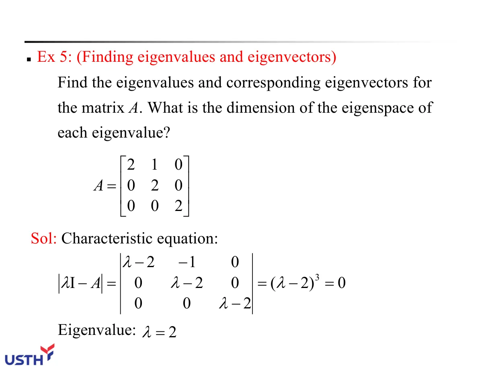
Find the eigenvalues and eigenvectors of $A=\begin{bmatrix}2&1&0\\0&2&0\\0&0&2\end{bmatrix}$ and the dimension of the eigenspace of each eigenvalue. $\det(\lambda I-A)=\begin{vmatrix}\lambda-2&-1&0\\0&\lambda-2&0\\0&0&\lambda-2\end{vmatrix}=(\lambda-2)^3=0$: the only eigenvalue is $\lambda=2$, repeated three times.
Tìm giá trị riêng và vectơ riêng của $A=\begin{bmatrix}2&1&0\\0&2&0\\0&0&2\end{bmatrix}$ và số chiều của không gian riêng ứng với mỗi giá trị riêng. $\det(\lambda I-A)=\begin{vmatrix}\lambda-2&-1&0\\0&\lambda-2&0\\0&0&\lambda-2\end{vmatrix}=(\lambda-2)^3=0$: giá trị riêng duy nhất là $\lambda=2$, lặp ba lần.
Find the eigenvalues of $A=\begin{bmatrix}3&1\\0&3\end{bmatrix}$ and the dimension of the eigenspace.
Tìm giá trị riêng của $A=\begin{bmatrix}3&1\\0&3\end{bmatrix}$ và số chiều của không gian riêng.
Answer and solution · Đáp án và lời giải
Answer · Đáp án: $\lambda=3$ (twice); eigenspace $=\operatorname{span}\{(1,0)\}$, $\dim1$
$\det(\lambda I-A)=(\lambda-3)^2$. $A-3I=\begin{bmatrix}0&1\\0&0\end{bmatrix}$ forces $x_2=0$, so the eigenvectors are $t(1,0)$: the eigenspace is a line even though the eigenvalue is repeated.
$\det(\lambda I-A)=(\lambda-3)^2$. $A-3I=\begin{bmatrix}0&1\\0&0\end{bmatrix}$ buộc $x_2=0$ nên các vectơ riêng là $t(1,0)$: không gian riêng chỉ là một đường thẳng dù giá trị riêng lặp.
Example 5: the eigenspace has dimension 2 · Ví dụ 5: không gian riêng có số chiều 2
★★★ Core · Cốt lõi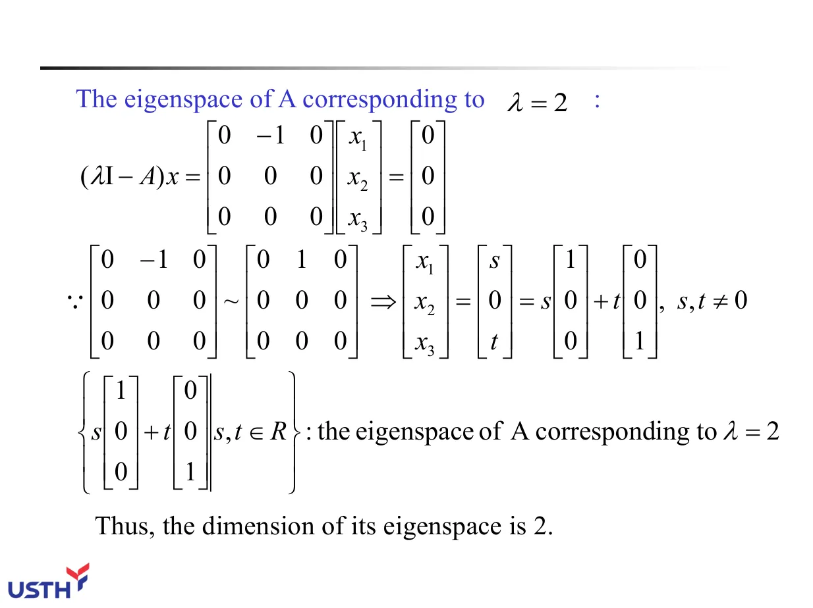
$(2I-A)x=\begin{bmatrix}0&-1&0\\0&0&0\\0&0&0\end{bmatrix}x=0$ means $x_2=0$ with $x_1=s$, $x_3=t$ free: $x=s\begin{bmatrix}1\\0\\0\end{bmatrix}+t\begin{bmatrix}0\\0\\1\end{bmatrix}$, $s,t$ not both $0$. The eigenspace of $\lambda=2$ is $\operatorname{span}\{(1,0,0),(0,0,1)\}$, so its dimension is 2, smaller than the multiplicity $3$.
$(2I-A)x=\begin{bmatrix}0&-1&0\\0&0&0\\0&0&0\end{bmatrix}x=0$ nghĩa là $x_2=0$ với $x_1=s$, $x_3=t$ tự do: $x=s\begin{bmatrix}1\\0\\0\end{bmatrix}+t\begin{bmatrix}0\\0\\1\end{bmatrix}$, $s,t$ không đồng thời bằng $0$. Không gian riêng của $\lambda=2$ là $\operatorname{span}\{(1,0,0),(0,0,1)\}$ nên số chiều của nó là 2, nhỏ hơn bội $3$.
Verify $A(1,0,0)=2(1,0,0)$ and $A(0,0,1)=2(0,0,1)$, and show that $(0,1,0)$ is not an eigenvector.
Kiểm tra $A(1,0,0)=2(1,0,0)$ và $A(0,0,1)=2(0,0,1)$, và chứng tỏ $(0,1,0)$ không là vectơ riêng.
Answer and solution · Đáp án và lời giải
Answer · Đáp án: the first two hold; $A(0,1,0)=(1,2,0)$ is not a multiple of $(0,1,0)$
The first and third columns of $A$ are $(2,0,0)$ and $(0,0,2)$, which gives the first two equalities. The second column is $A(0,1,0)=(1,2,0)$: it has a nonzero first entry, so it is not a multiple of $(0,1,0)$.
Cột thứ nhất và thứ ba của $A$ là $(2,0,0)$ và $(0,0,2)$, cho hai đẳng thức đầu. Cột thứ hai là $A(0,1,0)=(1,2,0)$: có thành phần đầu khác không nên không là bội của $(0,1,0)$.
Notes: multiplicity and dimension of the eigenspace · Lưu ý: bội và số chiều của không gian riêng
★★★ Core · Cốt lõi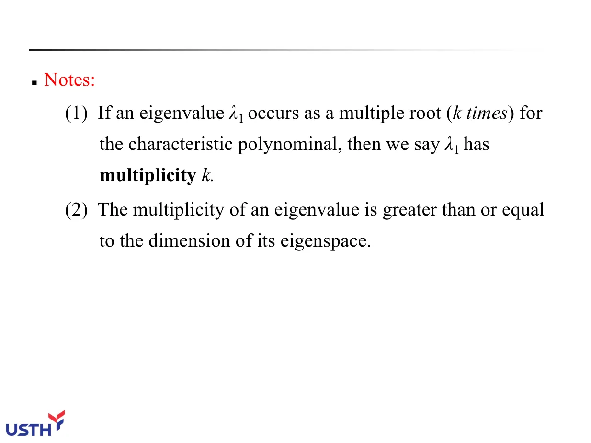
Notes: (1) If an eigenvalue $\lambda_1$ is a root of multiplicity $k$ of the characteristic polynomial, then $\lambda_1$ has multiplicity $k$. (2) The multiplicity of an eigenvalue is greater than or equal to the dimension of its eigenspace. When they are equal for every eigenvalue we will get $n$ independent eigenvectors, which is exactly diagonalizability (Section 7.2).
Lưu ý: (1) Nếu giá trị riêng $\lambda_1$ là nghiệm bội $k$ của đa thức đặc trưng thì $\lambda_1$ có bội $k$. (2) Bội của một giá trị riêng lớn hơn hoặc bằng số chiều của không gian riêng của nó. Khi chúng bằng nhau với mọi giá trị riêng ta có $n$ vectơ riêng độc lập, đúng là điều kiện chéo hóa được (Mục 7.2).
Compare multiplicity and eigenspace dimension for $\begin{bmatrix}2&1\\0&2\end{bmatrix}$ and for $I_2$.
So sánh bội và số chiều không gian riêng của $\begin{bmatrix}2&1\\0&2\end{bmatrix}$ và của $I_2$.
Answer and solution · Đáp án và lời giải
Answer · Đáp án: $\begin{bmatrix}2&1\\0&2\end{bmatrix}$: multiplicity $2$, $\dim1$; $I_2$: multiplicity $2$, $\dim2$
$N=\begin{bmatrix}2&1\\0&2\end{bmatrix}$: $\lambda=2$ twice, $N-2I=\begin{bmatrix}0&1\\0&0\end{bmatrix}$ has nullity $1$. $I_2$: $\lambda=1$ twice, $I-1\cdot I=0$ has nullity $2$. So $\dim\le$ multiplicity, with equality only in the second case.
$N=\begin{bmatrix}2&1\\0&2\end{bmatrix}$: $\lambda=2$ hai lần, $N-2I=\begin{bmatrix}0&1\\0&0\end{bmatrix}$ có nullity $1$. $I_2$: $\lambda=1$ hai lần, $I-1\cdot I=0$ có nullity $2$. Vậy $\dim\le$ bội, dấu bằng chỉ ở trường hợp thứ hai.
Example 6: a $4\times4$ matrix (characteristic polynomial) · Ví dụ 6: ma trận $4\times4$ (đa thức đặc trưng)
★★ Important · Quan trọng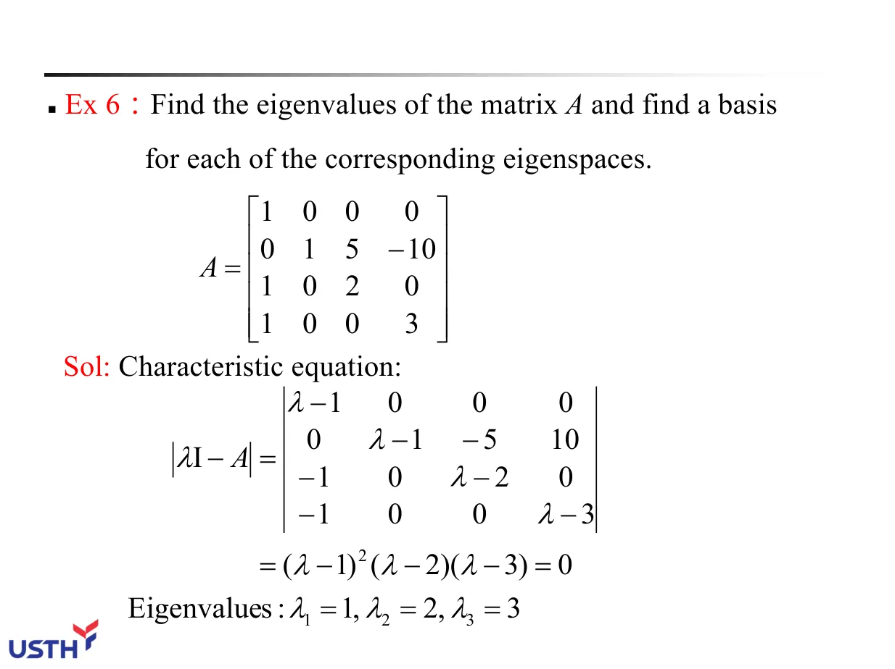
Find the eigenvalues of $A=\begin{bmatrix}1&0&0&0\\0&1&5&-10\\1&0&2&0\\1&0&0&3\end{bmatrix}$ and a basis for each eigenspace. $\det(\lambda I-A)=(\lambda-1)^2(\lambda-2)(\lambda-3)=0$ (expanding along the first row leaves a triangular $3\times3$ block), so the eigenvalues are $\lambda_1=1$ (multiplicity $2$), $\lambda_2=2$ and $\lambda_3=3$.
Tìm giá trị riêng của $A=\begin{bmatrix}1&0&0&0\\0&1&5&-10\\1&0&2&0\\1&0&0&3\end{bmatrix}$ và cơ sở của mỗi không gian riêng. $\det(\lambda I-A)=(\lambda-1)^2(\lambda-2)(\lambda-3)=0$ (khai triển theo hàng đầu còn lại một khối $3\times3$ tam giác) nên các giá trị riêng là $\lambda_1=1$ (bội $2$), $\lambda_2=2$ và $\lambda_3=3$.
Confirm the characteristic polynomial and the multiplicities of the slide's $A$.
Xác nhận đa thức đặc trưng và các bội của $A$ trong slide.
Answer and solution · Đáp án và lời giải
Answer · Đáp án: $(\lambda-1)^2(\lambda-2)(\lambda-3)$; multiplicities $2,1,1$
Expanding $\det(\lambda I-A)$ along the first row gives $(\lambda-1)$ times the $3\times3$ determinant of rows $2$–$4$, columns $2$–$4$, which is upper triangular with diagonal $\lambda-1,\ \lambda-2,\ \lambda-3$. Multiplying: $(\lambda-1)^2(\lambda-2)(\lambda-3)$.
Khai triển $\det(\lambda I-A)$ theo hàng đầu cho $(\lambda-1)$ nhân định thức $3\times3$ của các hàng $2$–$4$, cột $2$–$4$, là ma trận tam giác trên với đường chéo $\lambda-1,\ \lambda-2,\ \lambda-3$. Nhân lại: $(\lambda-1)^2(\lambda-2)(\lambda-3)$.
Example 6: the eigenspace of $\lambda_1=1$ · Ví dụ 6: không gian riêng của $\lambda_1=1$
★★ Important · Quan trọng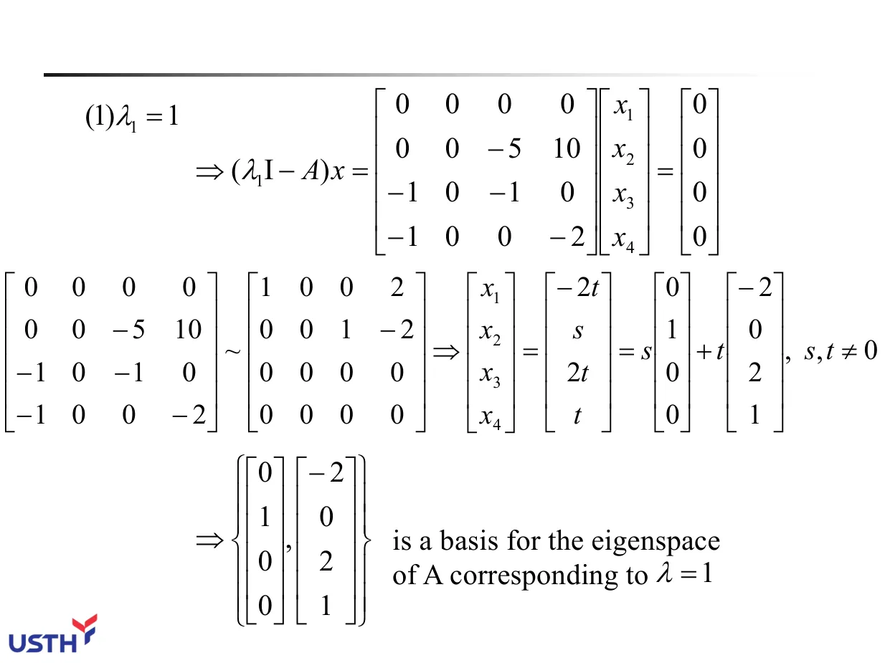
$(1\cdot I-A)x=\begin{bmatrix}0&0&0&0\\0&0&-5&10\\-1&0&-1&0\\-1&0&0&-2\end{bmatrix}x=0$ reduces to $\begin{bmatrix}1&0&0&2\\0&0&1&-2\\0&0&0&0\\0&0&0&0\end{bmatrix}$: $x_1=-2t$, $x_3=2t$, $x_4=t$ and $x_2=s$ free. So $x=s\begin{bmatrix}0\\1\\0\\0\end{bmatrix}+t\begin{bmatrix}-2\\0\\2\\1\end{bmatrix}$ and $\{(0,1,0,0),\ (-2,0,2,1)\}$ is a basis of the eigenspace of $\lambda=1$ (dimension $2$ = multiplicity).
$(1\cdot I-A)x=\begin{bmatrix}0&0&0&0\\0&0&-5&10\\-1&0&-1&0\\-1&0&0&-2\end{bmatrix}x=0$ rút gọn thành $\begin{bmatrix}1&0&0&2\\0&0&1&-2\\0&0&0&0\\0&0&0&0\end{bmatrix}$: $x_1=-2t$, $x_3=2t$, $x_4=t$ và $x_2=s$ tự do. Vậy $x=s\begin{bmatrix}0\\1\\0\\0\end{bmatrix}+t\begin{bmatrix}-2\\0\\2\\1\end{bmatrix}$ và $\{(0,1,0,0),\ (-2,0,2,1)\}$ là cơ sở của không gian riêng của $\lambda=1$ (số chiều $2$ = bội).
Verify that $(0,1,0,0)$ and $(-2,0,2,1)$ satisfy $Ax=x$ for the slide's $A$ and that $\dim\ker(A-I)=2$.
Kiểm tra $(0,1,0,0)$ và $(-2,0,2,1)$ thỏa $Ax=x$ với $A$ của slide và $\dim\ker(A-I)=2$.
Answer and solution · Đáp án và lời giải
Answer · Đáp án: both satisfy $Ax=x$; $\dim=2$
$A(0,1,0,0)$ is the second column $(0,1,0,0)$ ✓. $A(-2,0,2,1)=(-2,\ 0+10-10,\ -2+4,\ -2+3)=(-2,0,2,1)$ ✓. The matrix $A-I$ has rank $2$, so its null space has dimension $4-2=2$.
$A(0,1,0,0)$ là cột thứ hai $(0,1,0,0)$ ✓. $A(-2,0,2,1)=(-2,\ 0+10-10,\ -2+4,\ -2+3)=(-2,0,2,1)$ ✓. Ma trận $A-I$ có hạng $2$ nên không gian hạch có số chiều $4-2=2$.
Example 6: the eigenspace of $\lambda_2=2$ · Ví dụ 6: không gian riêng của $\lambda_2=2$
★★ Important · Quan trọng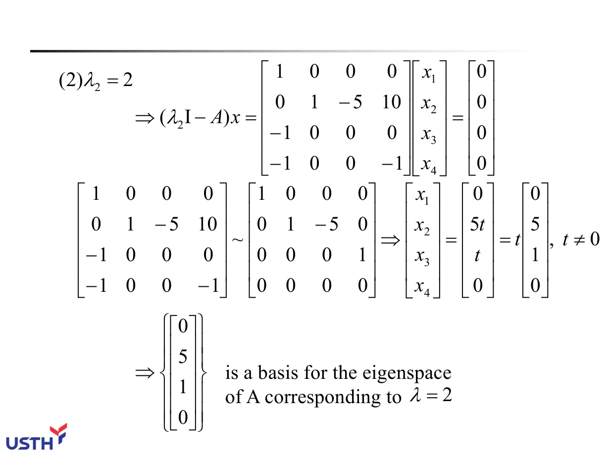
$(2I-A)x=\begin{bmatrix}1&0&0&0\\0&1&-5&10\\-1&0&0&0\\-1&0&0&-1\end{bmatrix}x=0$ reduces to $\begin{bmatrix}1&0&0&0\\0&1&-5&0\\0&0&0&1\\0&0&0&0\end{bmatrix}$: $x_1=x_4=0$, $x_2=5t$, $x_3=t$. So $x=t(0,5,1,0)$ and $\{(0,5,1,0)\}$ is a basis of the eigenspace of $\lambda=2$.
$(2I-A)x=\begin{bmatrix}1&0&0&0\\0&1&-5&10\\-1&0&0&0\\-1&0&0&-1\end{bmatrix}x=0$ rút gọn thành $\begin{bmatrix}1&0&0&0\\0&1&-5&0\\0&0&0&1\\0&0&0&0\end{bmatrix}$: $x_1=x_4=0$, $x_2=5t$, $x_3=t$. Vậy $x=t(0,5,1,0)$ và $\{(0,5,1,0)\}$ là cơ sở của không gian riêng của $\lambda=2$.
Check $A(0,5,1,0)=2(0,5,1,0)$ row by row.
Kiểm tra $A(0,5,1,0)=2(0,5,1,0)$ từng hàng.
Answer and solution · Đáp án và lời giải
Answer · Đáp án: $A(0,5,1,0)=(0,10,2,0)$
Row $1$: $0$. Row $2$: $(0,1,5,-10)\cdot(0,5,1,0)=5+5=10$. Row $3$: $(1,0,2,0)\cdot(0,5,1,0)=2$. Row $4$: $(1,0,0,3)\cdot(0,5,1,0)=0$. So $A(0,5,1,0)=(0,10,2,0)=2(0,5,1,0)$ ✓.
Hàng $1$: $0$. Hàng $2$: $(0,1,5,-10)\cdot(0,5,1,0)=5+5=10$. Hàng $3$: $(1,0,2,0)\cdot(0,5,1,0)=2$. Hàng $4$: $(1,0,0,3)\cdot(0,5,1,0)=0$. Vậy $A(0,5,1,0)=(0,10,2,0)=2(0,5,1,0)$ ✓.
Example 6: the eigenspace of $\lambda_3=3$ · Ví dụ 6: không gian riêng của $\lambda_3=3$
★★ Important · Quan trọng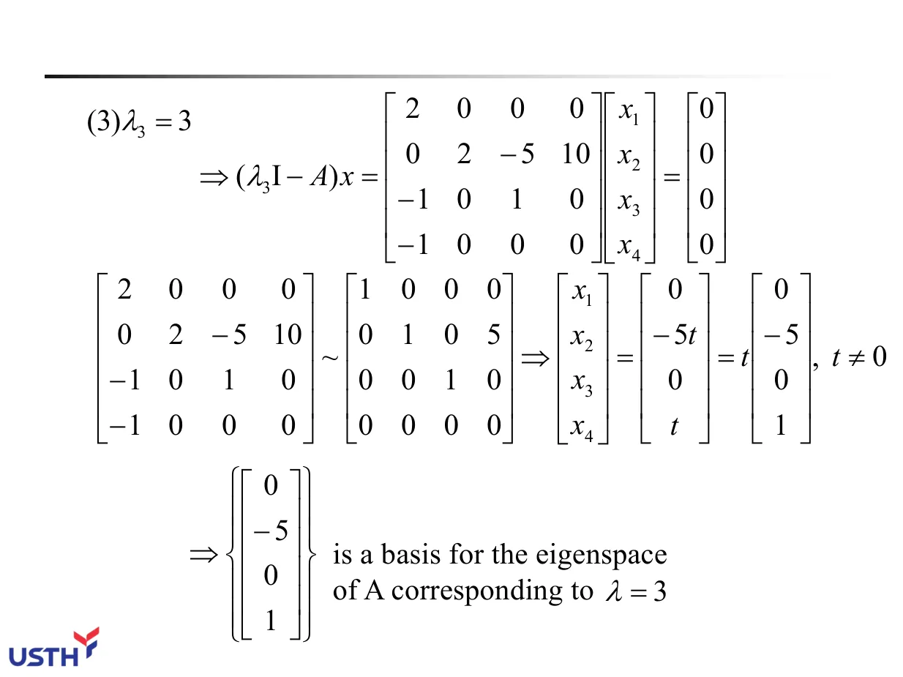
$(3I-A)x=\begin{bmatrix}2&0&0&0\\0&2&-5&10\\-1&0&1&0\\-1&0&0&0\end{bmatrix}x=0$ reduces to $\begin{bmatrix}1&0&0&0\\0&1&0&5\\0&0&1&0\\0&0&0&0\end{bmatrix}$: $x_1=x_3=0$, $x_2=-5t$, $x_4=t$. So $\{(0,-5,0,1)\}$ is a basis of the eigenspace of $\lambda=3$. In total $2+1+1=4$ independent eigenvectors: this $A$ is diagonalizable (Section 7.2).
$(3I-A)x=\begin{bmatrix}2&0&0&0\\0&2&-5&10\\-1&0&1&0\\-1&0&0&0\end{bmatrix}x=0$ rút gọn thành $\begin{bmatrix}1&0&0&0\\0&1&0&5\\0&0&1&0\\0&0&0&0\end{bmatrix}$: $x_1=x_3=0$, $x_2=-5t$, $x_4=t$. Vậy $\{(0,-5,0,1)\}$ là cơ sở của không gian riêng của $\lambda=3$. Tổng cộng có $2+1+1=4$ vectơ riêng độc lập: $A$ này chéo hóa được (Mục 7.2).
Put the four eigenvectors of Example 6 into $P$ and compute $P^{-1}AP$.
Đặt bốn vectơ riêng của Ví dụ 6 vào $P$ và tính $P^{-1}AP$.
Answer and solution · Đáp án và lời giải
Answer · Đáp án: $\det P=2\ne0$ and $P^{-1}AP=\operatorname{diag}(1,1,2,3)$
With $P=\big[(0,1,0,0)\ (-2,0,2,1)\ (0,5,1,0)\ (0,-5,0,1)\big]$ (columns), $\det P=2\ne0$, so the eigenvectors are independent, and $P^{-1}AP=\operatorname{diag}(1,1,2,3)$ lists the eigenvalues in the order of the columns.
Với $P=\big[(0,1,0,0)\ (-2,0,2,1)\ (0,5,1,0)\ (0,-5,0,1)\big]$ (theo cột), $\det P=2\ne0$ nên các vectơ riêng độc lập, và $P^{-1}AP=\operatorname{diag}(1,1,2,3)$ liệt kê các giá trị riêng theo thứ tự các cột.
Theorem 7.3: eigenvalues of triangular matrices · Định lý 7.3: giá trị riêng của ma trận tam giác
★★★ Core · Cốt lõi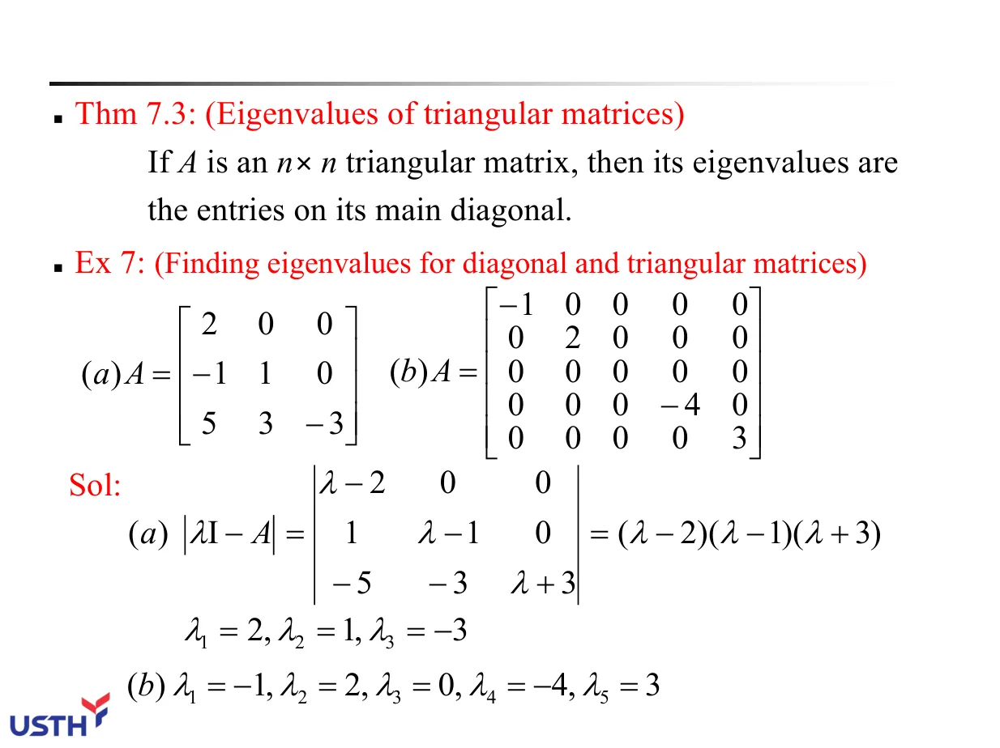
Theorem 7.3. If $A$ is an $n\times n$ triangular matrix, its eigenvalues are the entries on its main diagonal (because $\lambda I-A$ is triangular and its determinant is the product of the diagonal entries $\lambda-a_{ii}$). Example 7: (a) $A=\begin{bmatrix}2&0&0\\-1&1&0\\5&3&-3\end{bmatrix}$: $\det(\lambda I-A)=(\lambda-2)(\lambda-1)(\lambda+3)$, so $\lambda=2,1,-3$. (b) The diagonal matrix with diagonal $(-1,2,0,-4,3)$ has $\lambda_1=-1$, $\lambda_2=2$, $\lambda_3=0$, $\lambda_4=-4$, $\lambda_5=3$.
Định lý 7.3. Nếu $A$ là ma trận tam giác cấp $n$ thì giá trị riêng của nó là các phần tử trên đường chéo chính (vì $\lambda I-A$ là ma trận tam giác và định thức của nó là tích các phần tử chéo $\lambda-a_{ii}$). Ví dụ 7: (a) $A=\begin{bmatrix}2&0&0\\-1&1&0\\5&3&-3\end{bmatrix}$: $\det(\lambda I-A)=(\lambda-2)(\lambda-1)(\lambda+3)$ nên $\lambda=2,1,-3$. (b) Ma trận chéo với đường chéo $(-1,2,0,-4,3)$ có $\lambda_1=-1$, $\lambda_2=2$, $\lambda_3=0$, $\lambda_4=-4$, $\lambda_5=3$.
Write the eigenvalues of $\begin{bmatrix}4&1&7\\0&-2&3\\0&0&5\end{bmatrix}$ and of $\operatorname{diag}(7,7,-1)$ with their multiplicities.
Viết các giá trị riêng của $\begin{bmatrix}4&1&7\\0&-2&3\\0&0&5\end{bmatrix}$ và của $\operatorname{diag}(7,7,-1)$ cùng bội.
Answer and solution · Đáp án và lời giải
Answer · Đáp án: $4,-2,5$ (each once); $7$ (twice) and $-1$
Both matrices are triangular, so the eigenvalues are read off the diagonals: $4,-2,5$ for the first and $7,7,-1$ for the second (so $7$ has multiplicity $2$).
Cả hai ma trận đều tam giác nên giá trị riêng đọc từ đường chéo: $4,-2,5$ với ma trận thứ nhất và $7,7,-1$ với ma trận thứ hai (nên $7$ có bội $2$).
Eigenvalues and eigenvectors of a linear transformation · Giá trị riêng và vectơ riêng của phép biến đổi tuyến tính
★★★ Core · Cốt lõi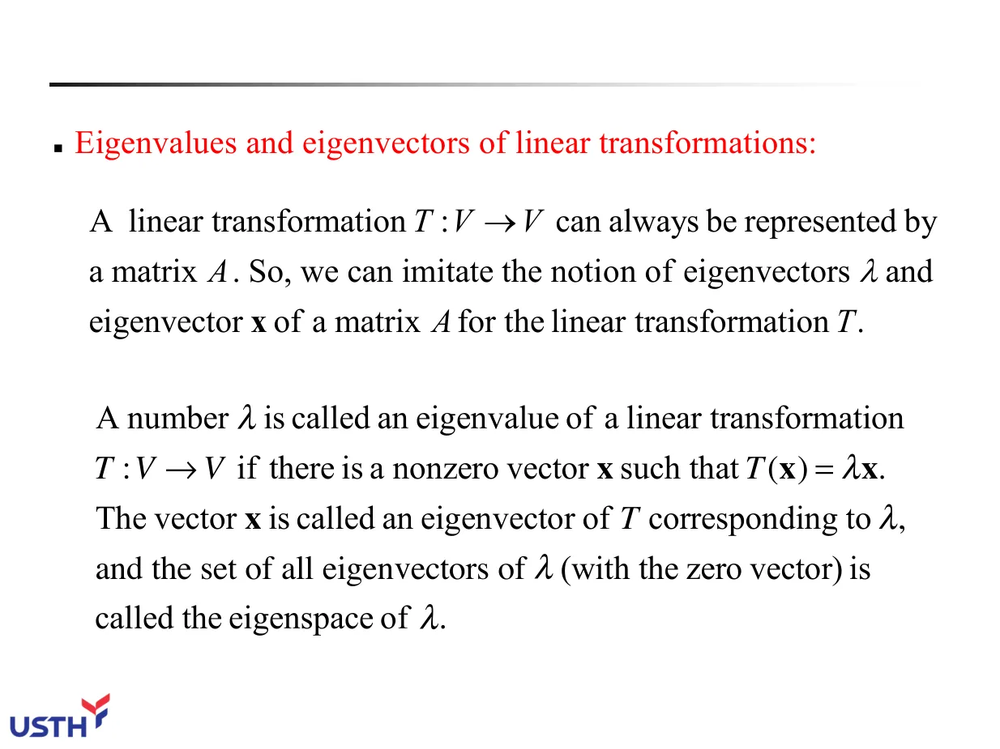
A linear transformation $T:V\to V$ can always be represented by a matrix $A$, so the notions carry over. A number $\lambda$ is an eigenvalue of $T$ if there is a nonzero $x$ with $T(x)=\lambda x$; $x$ is an eigenvector of $T$ for $\lambda$, and the set of all such $x$ together with $0$ is the eigenspace of $\lambda$. For $V=\mathbb R^n$ use the standard matrix; for other spaces use the matrix relative to a basis (Lecture 6).
Phép biến đổi tuyến tính $T:V\to V$ luôn biểu diễn được bằng một ma trận $A$ nên các khái niệm được chuyển sang. Số $\lambda$ là giá trị riêng của $T$ nếu có $x$ khác không với $T(x)=\lambda x$; $x$ là vectơ riêng của $T$ ứng với $\lambda$, và tập mọi $x$ như vậy cùng với $0$ là không gian riêng của $\lambda$. Với $V=\mathbb R^n$ dùng ma trận chuẩn; với không gian khác dùng ma trận theo một cơ sở (Bài 6).
Find the eigenvalues and eigenvectors of the derivative $D:P_2\to P_2$, $D(p)=p'$.
Tìm giá trị riêng và vectơ riêng của phép lấy đạo hàm $D:P_2\to P_2$, $D(p)=p'$.
Answer and solution · Đáp án và lời giải
Answer · Đáp án: only $\lambda=0$, eigenvectors: the nonzero constants
Relative to $\{1,x,x^2\}$ the matrix of $D$ is $\begin{bmatrix}0&1&0\\0&0&2\\0&0&0\end{bmatrix}$ (triangular), so $\det(\lambda I-D)=\lambda^3$ and $\lambda=0$ is the only eigenvalue. Its eigenspace is the kernel of $D$: the constant polynomials $\{c\cdot1\}$. (Indeed $p'=\lambda p$ has only $p=ce^{\lambda x}$ as solutions, which is not a polynomial unless $\lambda=0$.)
Theo $\{1,x,x^2\}$ ma trận của $D$ là $\begin{bmatrix}0&1&0\\0&0&2\\0&0&0\end{bmatrix}$ (tam giác) nên $\det(\lambda I-D)=\lambda^3$ và $\lambda=0$ là giá trị riêng duy nhất. Không gian riêng của nó là hạt nhân của $D$: các đa thức hằng $\{c\cdot1\}$. (Thật vậy $p'=\lambda p$ chỉ có nghiệm $p=ce^{\lambda x}$, không là đa thức trừ khi $\lambda=0$.)
Example 8: eigenvalues of a transformation (setup) · Ví dụ 8: giá trị riêng của một phép biến đổi (thiết lập)
★★★ Core · Cốt lõi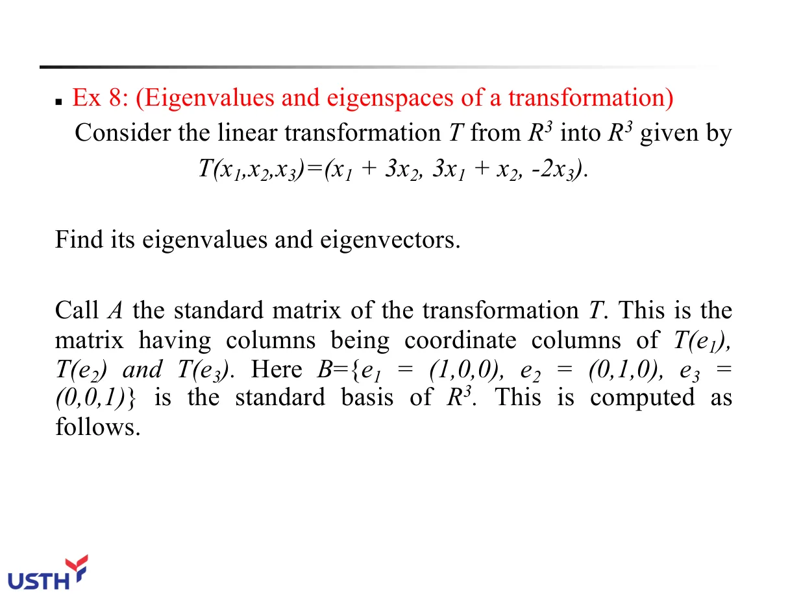
$T:\mathbb R^3\to\mathbb R^3$, $T(x_1,x_2,x_3)=(x_1+3x_2,\ 3x_1+x_2,\ -2x_3)$. Find its eigenvalues and eigenvectors. Let $A$ be the standard matrix of $T$, whose columns are $T(e_1),T(e_2),T(e_3)$ for the standard basis $B=\{e_1,e_2,e_3\}$: $A=\begin{bmatrix}1&3&0\\3&1&0\\0&0&-2\end{bmatrix}$. The eigenvalues of $T$ are those of $A$.
$T:\mathbb R^3\to\mathbb R^3$, $T(x_1,x_2,x_3)=(x_1+3x_2,\ 3x_1+x_2,\ -2x_3)$. Tìm giá trị riêng và vectơ riêng của nó. Gọi $A$ là ma trận chuẩn của $T$, các cột là $T(e_1),T(e_2),T(e_3)$ với cơ sở chuẩn $B=\{e_1,e_2,e_3\}$: $A=\begin{bmatrix}1&3&0\\3&1&0\\0&0&-2\end{bmatrix}$. Giá trị riêng của $T$ là của $A$.
Find the standard matrix of $T(x,y)=(4x+y,\ 2x+3y)$ and its eigenvalues.
Tìm ma trận chuẩn của $T(x,y)=(4x+y,\ 2x+3y)$ và các giá trị riêng của nó.
Answer and solution · Đáp án và lời giải
Answer · Đáp án: $A=\begin{bmatrix}4&1\\2&3\end{bmatrix}$; $\lambda=5,\ 2$
$T(e_1)=(4,2)$ and $T(e_2)=(1,3)$ are the columns. $\det(\lambda I-A)=(\lambda-4)(\lambda-3)-2=\lambda^2-7\lambda+10=(\lambda-5)(\lambda-2)$.
$T(e_1)=(4,2)$ và $T(e_2)=(1,3)$ là các cột. $\det(\lambda I-A)=(\lambda-4)(\lambda-3)-2=\lambda^2-7\lambda+10=(\lambda-5)(\lambda-2)$.
Example 8: eigenvalues and eigenspaces of $T$ · Ví dụ 8: giá trị riêng và không gian riêng của $T$
★★★ Core · Cốt lõi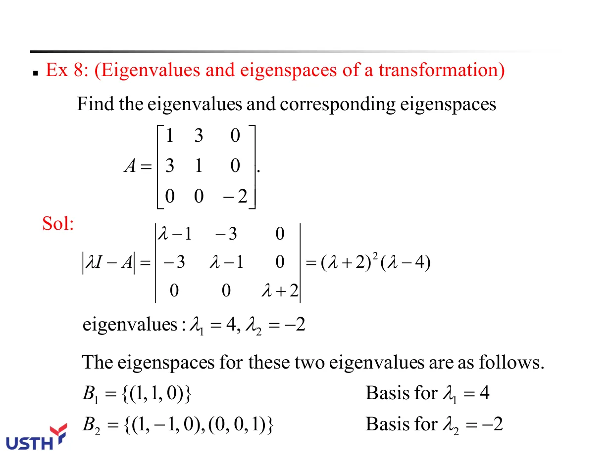
For $A=\begin{bmatrix}1&3&0\\3&1&0\\0&0&-2\end{bmatrix}$: $\det(\lambda I-A)=(\lambda+2)^2(\lambda-4)$, so the eigenvalues are $\lambda_1=4$ and $\lambda_2=-2$ (multiplicity $2$). The eigenspaces: for $\lambda_1=4$ a basis is $B_1=\{(1,1,0)\}$; for $\lambda_2=-2$ a basis is $B_2=\{(1,-1,0),\ (0,0,1)\}$. Together $B_1\cup B_2$ gives three independent eigenvectors.
Với $A=\begin{bmatrix}1&3&0\\3&1&0\\0&0&-2\end{bmatrix}$: $\det(\lambda I-A)=(\lambda+2)^2(\lambda-4)$ nên các giá trị riêng là $\lambda_1=4$ và $\lambda_2=-2$ (bội $2$). Các không gian riêng: với $\lambda_1=4$ cơ sở là $B_1=\{(1,1,0)\}$; với $\lambda_2=-2$ cơ sở là $B_2=\{(1,-1,0),\ (0,0,1)\}$. Hợp $B_1\cup B_2$ cho ba vectơ riêng độc lập.
Verify the eigenpairs of the slide: $A(1,1,0)=4(1,1,0)$, $A(1,-1,0)=-2(1,-1,0)$ and $A(0,0,1)=-2(0,0,1)$.
Kiểm tra các cặp riêng của slide: $A(1,1,0)=4(1,1,0)$, $A(1,-1,0)=-2(1,-1,0)$ và $A(0,0,1)=-2(0,0,1)$.
Answer and solution · Đáp án và lời giải
Answer · Đáp án: $A(1,1,0)=(4,4,0)$, $A(1,-1,0)=(-2,2,0)$, $A(0,0,1)=(0,0,-2)$
Row by row: $A(1,1,0)=(1+3,\ 3+1,\ 0)=(4,4,0)=4(1,1,0)$; $A(1,-1,0)=(1-3,\ 3-1,\ 0)=(-2,2,0)=-2(1,-1,0)$; $A(0,0,1)=(0,0,-2)=-2(0,0,1)$ ✓.
Từng hàng: $A(1,1,0)=(1+3,\ 3+1,\ 0)=(4,4,0)=4(1,1,0)$; $A(1,-1,0)=(1-3,\ 3-1,\ 0)=(-2,2,0)=-2(1,-1,0)$; $A(0,0,1)=(0,0,-2)=-2(0,0,1)$ ✓.
Notes: in an eigenvector basis the matrix is diagonal · Lưu ý: trong cơ sở vectơ riêng ma trận là chéo
★★★ Core · Cốt lõi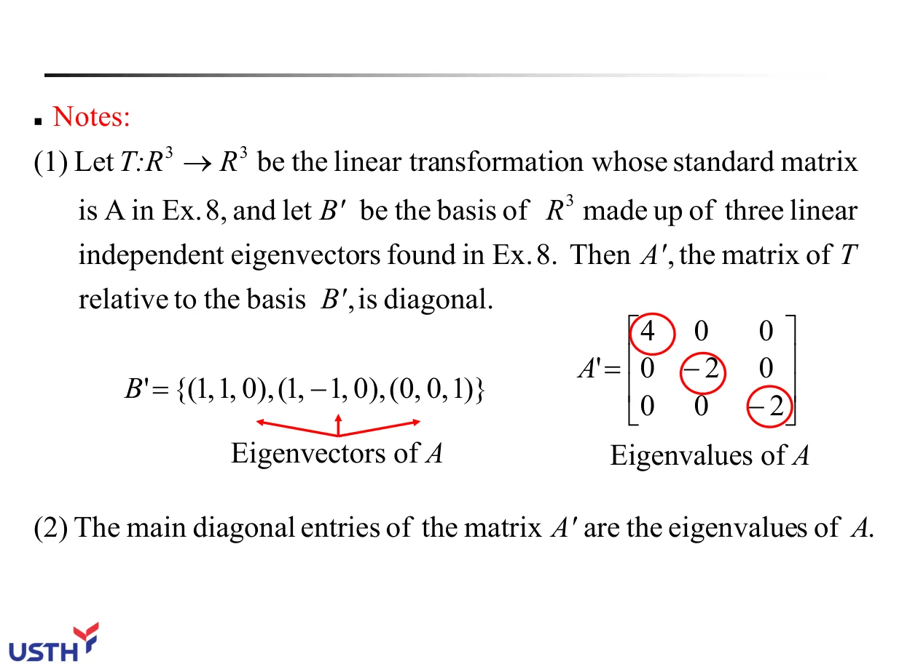
Notes: (1) Let $T:\mathbb R^3\to\mathbb R^3$ have standard matrix $A$ (Example 8) and let $B'=\{(1,1,0),(1,-1,0),(0,0,1)\}$ be the basis of three independent eigenvectors. Then the matrix of $T$ relative to $B'$ is diagonal: $A'=\begin{bmatrix}4&0&0\\0&-2&0\\0&0&-2\end{bmatrix}$. (2) The main diagonal entries of $A'$ are the eigenvalues of $A$. (This is the same $A'$ as in Example 5 of Lecture 6.)
Lưu ý: (1) Cho $T:\mathbb R^3\to\mathbb R^3$ có ma trận chuẩn $A$ (Ví dụ 8) và $B'=\{(1,1,0),(1,-1,0),(0,0,1)\}$ là cơ sở gồm ba vectơ riêng độc lập. Khi đó ma trận của $T$ theo $B'$ là chéo: $A'=\begin{bmatrix}4&0&0\\0&-2&0\\0&0&-2\end{bmatrix}$. (2) Các phần tử trên đường chéo chính của $A'$ là các giá trị riêng của $A$. (Đây chính là $A'$ của Ví dụ 5 trong Bài 6.)
Find the matrix of $T(x,y)=(4x+y,\ 2x+3y)$ relative to the eigenvector basis $B'=\{(1,1),(1,-2)\}$.
Tìm ma trận của $T(x,y)=(4x+y,\ 2x+3y)$ theo cơ sở vectơ riêng $B'=\{(1,1),(1,-2)\}$.
Answer and solution · Đáp án và lời giải
Answer · Đáp án: $A'=\begin{bmatrix}5&0\\0&2\end{bmatrix}$
$T(1,1)=(5,5)=5(1,1)+0(1,-2)$ and $T(1,-2)=(2,-4)=0(1,1)+2(1,-2)$. The coordinate columns $(5,0)$ and $(0,2)$ give $\operatorname{diag}(5,2)$: the eigenvalues, in the order of the basis.
$T(1,1)=(5,5)=5(1,1)+0(1,-2)$ và $T(1,-2)=(2,-4)=0(1,1)+2(1,-2)$. Các cột tọa độ $(5,0)$ và $(0,2)$ cho $\operatorname{diag}(5,2)$: các giá trị riêng theo thứ tự của cơ sở.
7.2 The diagonalization problem · 7.2 Bài toán chéo hóa
★★★ Core · Cốt lõi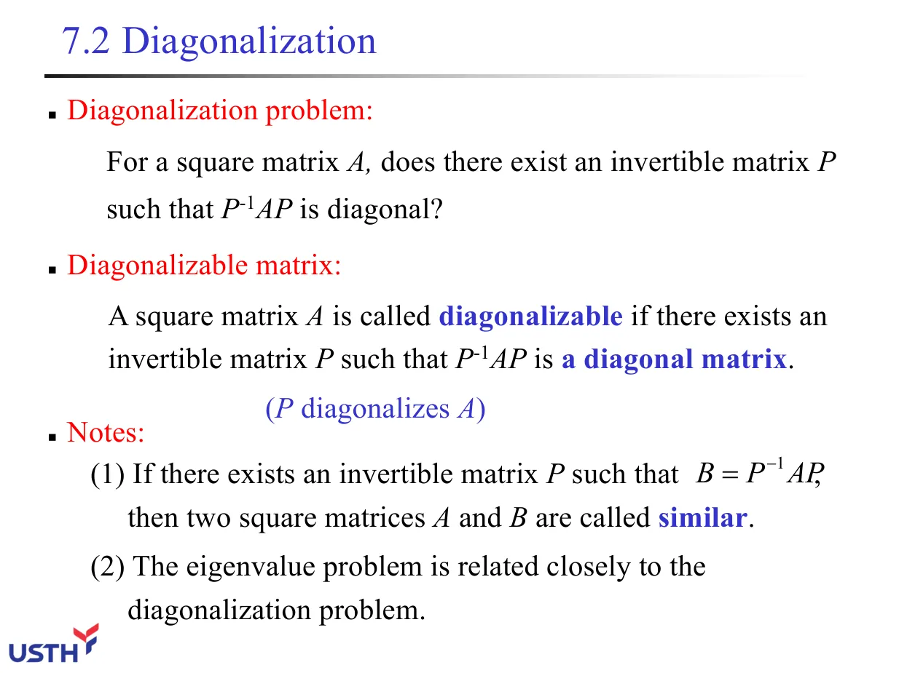
Diagonalization problem: for a square matrix $A$, is there an invertible matrix $P$ such that $P^{-1}AP$ is diagonal? $A$ is diagonalizable if such a $P$ exists ($P$ diagonalizes $A$). Notes: (1) if $B=P^{-1}AP$ for an invertible $P$, then $A$ and $B$ are similar (Lecture 6); (2) the eigenvalue problem is closely tied to the diagonalization problem.
Bài toán chéo hóa: với ma trận vuông $A$, có ma trận khả nghịch $P$ nào để $P^{-1}AP$ chéo không? $A$ chéo hóa được nếu tồn tại $P$ như vậy ($P$ chéo hóa $A$). Lưu ý: (1) nếu $B=P^{-1}AP$ với $P$ khả nghịch thì $A$ và $B$ đồng dạng (Bài 6); (2) bài toán giá trị riêng gắn chặt với bài toán chéo hóa.
Check that $P=\begin{bmatrix}1&1\\1&-1\end{bmatrix}$ diagonalizes $A=\begin{bmatrix}1&2\\2&1\end{bmatrix}$ and find $D=P^{-1}AP$.
Kiểm tra $P=\begin{bmatrix}1&1\\1&-1\end{bmatrix}$ chéo hóa $A=\begin{bmatrix}1&2\\2&1\end{bmatrix}$ và tìm $D=P^{-1}AP$.
Answer and solution · Đáp án và lời giải
Answer · Đáp án: $D=\begin{bmatrix}3&0\\0&-1\end{bmatrix}$
$A(1,1)=(3,3)=3(1,1)$ and $A(1,-1)=(-1,1)=-1(1,-1)$: the columns of $P$ are eigenvectors, so $AP=PD$ with $D=\operatorname{diag}(3,-1)$ and $P^{-1}AP=D$.
$A(1,1)=(3,3)=3(1,1)$ và $A(1,-1)=(-1,1)=-1(1,-1)$: các cột của $P$ là vectơ riêng nên $AP=PD$ với $D=\operatorname{diag}(3,-1)$ và $P^{-1}AP=D$.
Theorem 7.4: similar matrices have the same eigenvalues · Định lý 7.4: các ma trận đồng dạng có cùng giá trị riêng
★★★ Core · Cốt lõi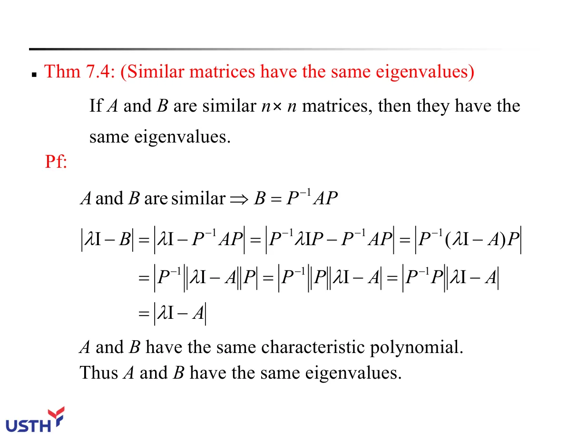
Theorem 7.4. If $A$ and $B$ are similar $n\times n$ matrices, they have the same eigenvalues. Proof: with $B=P^{-1}AP$, $\det(\lambda I-B)=\det(\lambda I-P^{-1}AP)=\det(P^{-1}(\lambda I-A)P)=\det(P^{-1})\det(\lambda I-A)\det(P)=\det(\lambda I-A)$ (since $\det P^{-1}\det P=1$). So $A$ and $B$ have the same characteristic polynomial, hence the same eigenvalues (and the same trace and determinant).
Định lý 7.4. Nếu $A$ và $B$ là các ma trận đồng dạng cấp $n$ thì chúng có cùng giá trị riêng. Chứng minh: với $B=P^{-1}AP$, $\det(\lambda I-B)=\det(\lambda I-P^{-1}AP)=\det(P^{-1}(\lambda I-A)P)=\det(P^{-1})\det(\lambda I-A)\det(P)=\det(\lambda I-A)$ (vì $\det P^{-1}\det P=1$). Vậy $A$ và $B$ có cùng đa thức đặc trưng, do đó cùng giá trị riêng (và cùng vết, định thức).
The similar pair of Lecture 6, $A=\begin{bmatrix}2&-2\\-1&3\end{bmatrix}$ and $A'=\begin{bmatrix}3&-2\\-1&2\end{bmatrix}$, should share their characteristic polynomial. Check.
Cặp đồng dạng của Bài 6, $A=\begin{bmatrix}2&-2\\-1&3\end{bmatrix}$ và $A'=\begin{bmatrix}3&-2\\-1&2\end{bmatrix}$, phải có cùng đa thức đặc trưng. Hãy kiểm tra.
Answer and solution · Đáp án và lời giải
Answer · Đáp án: both have $\lambda^2-5\lambda+4=(\lambda-1)(\lambda-4)$
For $A$: $(\lambda-2)(\lambda-3)-2=\lambda^2-5\lambda+4$. For $A'$: $(\lambda-3)(\lambda-2)-2=\lambda^2-5\lambda+4$. Both factor as $(\lambda-1)(\lambda-4)$, so the eigenvalues are $1$ and $4$.
Với $A$: $(\lambda-2)(\lambda-3)-2=\lambda^2-5\lambda+4$. Với $A'$: $(\lambda-3)(\lambda-2)-2=\lambda^2-5\lambda+4$. Cả hai phân tích thành $(\lambda-1)(\lambda-4)$ nên giá trị riêng là $1$ và $4$.
Example 1: a diagonalizable matrix (eigenvalues) · Ví dụ 1: ma trận chéo hóa được (giá trị riêng)
★★★ Core · Cốt lõi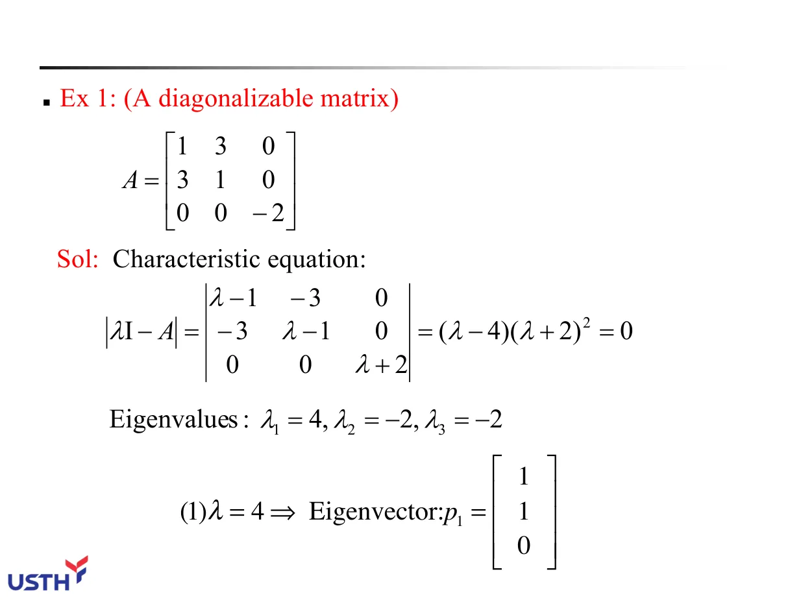
$A=\begin{bmatrix}1&3&0\\3&1&0\\0&0&-2\end{bmatrix}$. Characteristic equation: $\det(\lambda I-A)=(\lambda-4)(\lambda+2)^2=0$, so the eigenvalues are $\lambda_1=4$, $\lambda_2=\lambda_3=-2$. (1) For $\lambda=4$ the eigenvector is $p_1=\begin{bmatrix}1\\1\\0\end{bmatrix}$.
$A=\begin{bmatrix}1&3&0\\3&1&0\\0&0&-2\end{bmatrix}$. Phương trình đặc trưng: $\det(\lambda I-A)=(\lambda-4)(\lambda+2)^2=0$ nên các giá trị riêng là $\lambda_1=4$, $\lambda_2=\lambda_3=-2$. (1) Với $\lambda=4$ vectơ riêng là $p_1=\begin{bmatrix}1\\1\\0\end{bmatrix}$.
Verify the slide's characteristic polynomial and the eigenvector $p_1=(1,1,0)$ for $\lambda=4$ by solving $(4I-A)x=0$.
Kiểm tra đa thức đặc trưng của slide và vectơ riêng $p_1=(1,1,0)$ ứng với $\lambda=4$ bằng cách giải $(4I-A)x=0$.
Answer and solution · Đáp án và lời giải
Answer · Đáp án: $(\lambda-4)(\lambda+2)^2$; $\ker(4I-A)=\operatorname{span}\{(1,1,0)\}$
$4I-A=\begin{bmatrix}3&-3&0\\-3&3&0\\0&0&6\end{bmatrix}$: the third row gives $x_3=0$ and the first gives $x_1=x_2$, so $x=t(1,1,0)$.
$4I-A=\begin{bmatrix}3&-3&0\\-3&3&0\\0&0&6\end{bmatrix}$: hàng thứ ba cho $x_3=0$ và hàng thứ nhất cho $x_1=x_2$ nên $x=t(1,1,0)$.
Example 1: the diagonalizing matrix and the order of the eigenvalues · Ví dụ 1: ma trận chéo hóa và thứ tự các giá trị riêng
★★★ Core · Cốt lõi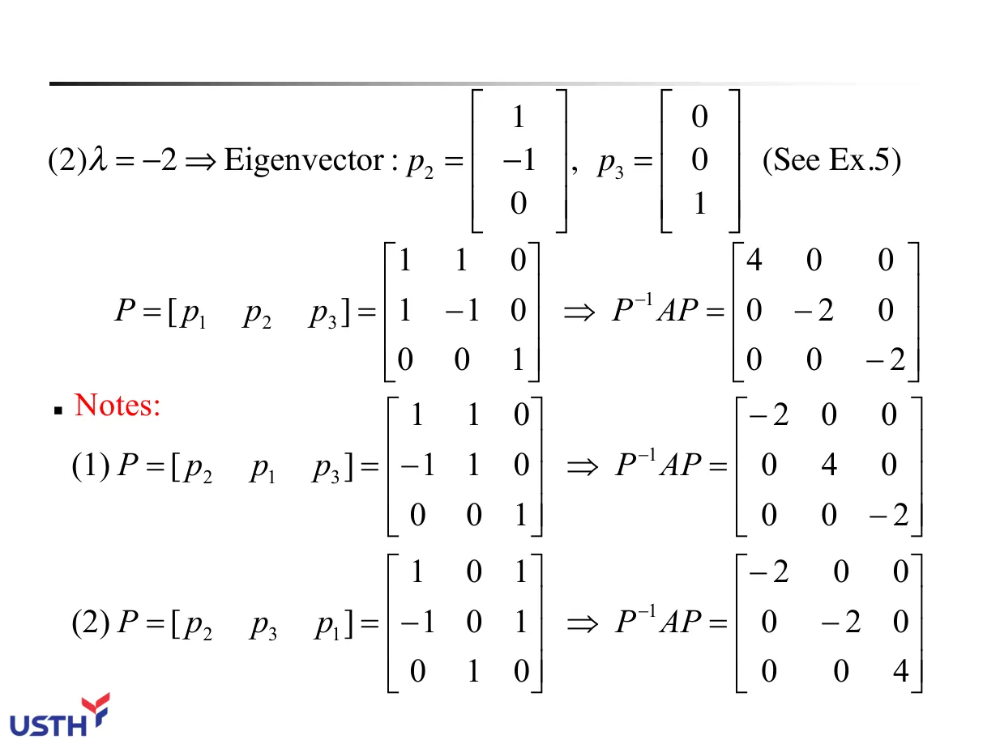
(2) For $\lambda=-2$: $p_2=(1,-1,0)$ and $p_3=(0,0,1)$ (see Example 5 of 7.1). With $P=[p_1\ p_2\ p_3]=\begin{bmatrix}1&1&0\\1&-1&0\\0&0&1\end{bmatrix}$: $P^{-1}AP=\operatorname{diag}(4,-2,-2)$. Notes: the order of the columns of $P$ decides the order on the diagonal. (1) $P=[p_2\ p_1\ p_3]\Rightarrow P^{-1}AP=\operatorname{diag}(-2,4,-2)$; (2) $P=[p_2\ p_3\ p_1]\Rightarrow P^{-1}AP=\operatorname{diag}(-2,-2,4)$.
(2) Với $\lambda=-2$: $p_2=(1,-1,0)$ và $p_3=(0,0,1)$ (xem Ví dụ 5 của 7.1). Với $P=[p_1\ p_2\ p_3]=\begin{bmatrix}1&1&0\\1&-1&0\\0&0&1\end{bmatrix}$: $P^{-1}AP=\operatorname{diag}(4,-2,-2)$. Lưu ý: thứ tự các cột của $P$ quyết định thứ tự trên đường chéo. (1) $P=[p_2\ p_1\ p_3]\Rightarrow P^{-1}AP=\operatorname{diag}(-2,4,-2)$; (2) $P=[p_2\ p_3\ p_1]\Rightarrow P^{-1}AP=\operatorname{diag}(-2,-2,4)$.
Verify the three diagonalizations of the slide: $[p_1\ p_2\ p_3]$, $[p_2\ p_1\ p_3]$ and $[p_2\ p_3\ p_1]$.
Kiểm tra ba phép chéo hóa của slide: $[p_1\ p_2\ p_3]$, $[p_2\ p_1\ p_3]$ và $[p_2\ p_3\ p_1]$.
Answer and solution · Đáp án và lời giải
Answer · Đáp án: $\operatorname{diag}(4,-2,-2)$, $\operatorname{diag}(-2,4,-2)$, $\operatorname{diag}(-2,-2,4)$
Each $P$ has the same three independent eigenvectors as columns; $AP=PD$ puts $\lambda_i$ in the position of the column $p_i$. So reordering the columns just reorders the diagonal entries.
Mỗi $P$ có cùng ba vectơ riêng độc lập làm cột; $AP=PD$ đặt $\lambda_i$ vào vị trí của cột $p_i$. Vậy đổi thứ tự cột chỉ đổi thứ tự các phần tử đường chéo.
Theorem 7.5: condition for diagonalization (first half) · Định lý 7.5: điều kiện chéo hóa (nửa đầu)
★★★ Core · Cốt lõi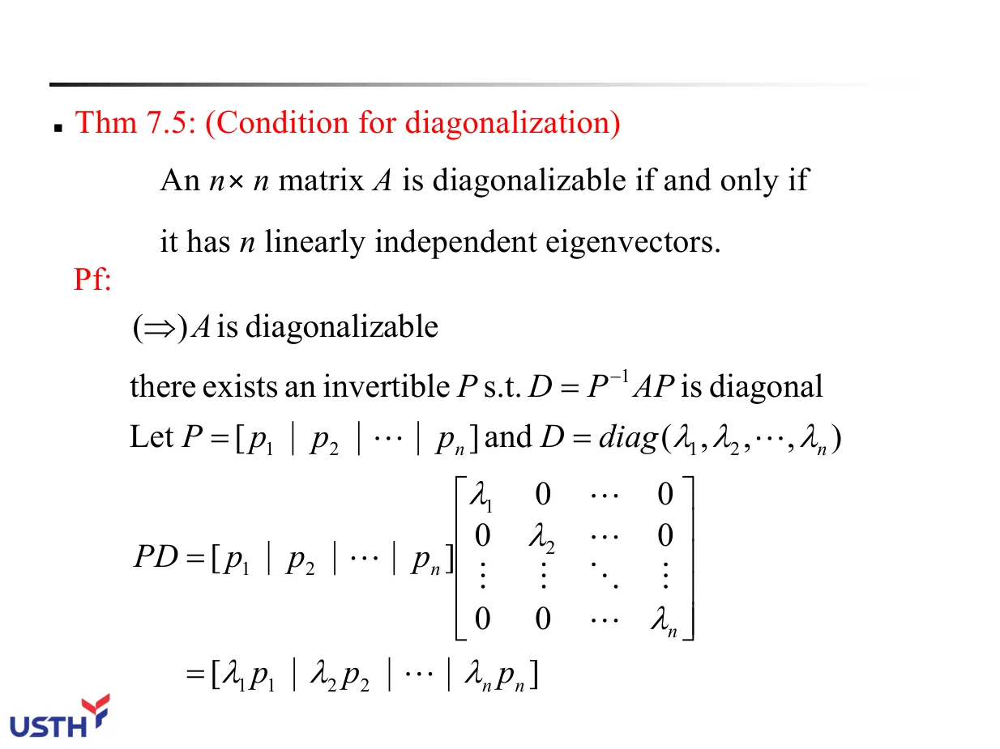
Theorem 7.5. An $n\times n$ matrix $A$ is diagonalizable if and only if it has $n$ linearly independent eigenvectors. Proof ($\Rightarrow$): let $A$ be diagonalizable: there is an invertible $P=[p_1\mid p_2\mid\cdots\mid p_n]$ with $D=P^{-1}AP=\operatorname{diag}(\lambda_1,\dots,\lambda_n)$. Then $PD=[p_1\mid\cdots\mid p_n]\operatorname{diag}(\lambda_1,\dots,\lambda_n)=[\lambda_1p_1\mid\lambda_2p_2\mid\cdots\mid\lambda_np_n]$: multiplying by a diagonal matrix on the right scales the columns.
Định lý 7.5. Ma trận $A$ cấp $n$ chéo hóa được khi và chỉ khi có $n$ vectơ riêng độc lập tuyến tính. Chứng minh ($\Rightarrow$): giả sử $A$ chéo hóa được: có $P=[p_1\mid p_2\mid\cdots\mid p_n]$ khả nghịch với $D=P^{-1}AP=\operatorname{diag}(\lambda_1,\dots,\lambda_n)$. Khi đó $PD=[p_1\mid\cdots\mid p_n]\operatorname{diag}(\lambda_1,\dots,\lambda_n)=[\lambda_1p_1\mid\lambda_2p_2\mid\cdots\mid\lambda_np_n]$: nhân bên phải với ma trận chéo là co giãn các cột.
Check $PD=[\lambda_1p_1\mid\lambda_2p_2]$ for $P=\begin{bmatrix}1&1\\1&-1\end{bmatrix}$, $D=\operatorname{diag}(3,-1)$.
Kiểm tra $PD=[\lambda_1p_1\mid\lambda_2p_2]$ với $P=\begin{bmatrix}1&1\\1&-1\end{bmatrix}$, $D=\operatorname{diag}(3,-1)$.
Answer and solution · Đáp án và lời giải
Answer · Đáp án: $PD=\begin{bmatrix}3&-1\\3&1\end{bmatrix}$ with columns $3p_1$ and $-p_2$
$PD=\begin{bmatrix}1\cdot3&1\cdot(-1)\\1\cdot3&(-1)(-1)\end{bmatrix}=\begin{bmatrix}3&-1\\3&1\end{bmatrix}$: the first column is $3(1,1)=3p_1$ and the second is $-1(1,-1)=-p_2$.
$PD=\begin{bmatrix}1\cdot3&1\cdot(-1)\\1\cdot3&(-1)(-1)\end{bmatrix}=\begin{bmatrix}3&-1\\3&1\end{bmatrix}$: cột thứ nhất là $3(1,1)=3p_1$ và cột thứ hai là $-1(1,-1)=-p_2$.
Theorem 7.5: first half completed · Định lý 7.5: hoàn tất nửa đầu
★★★ Core · Cốt lõi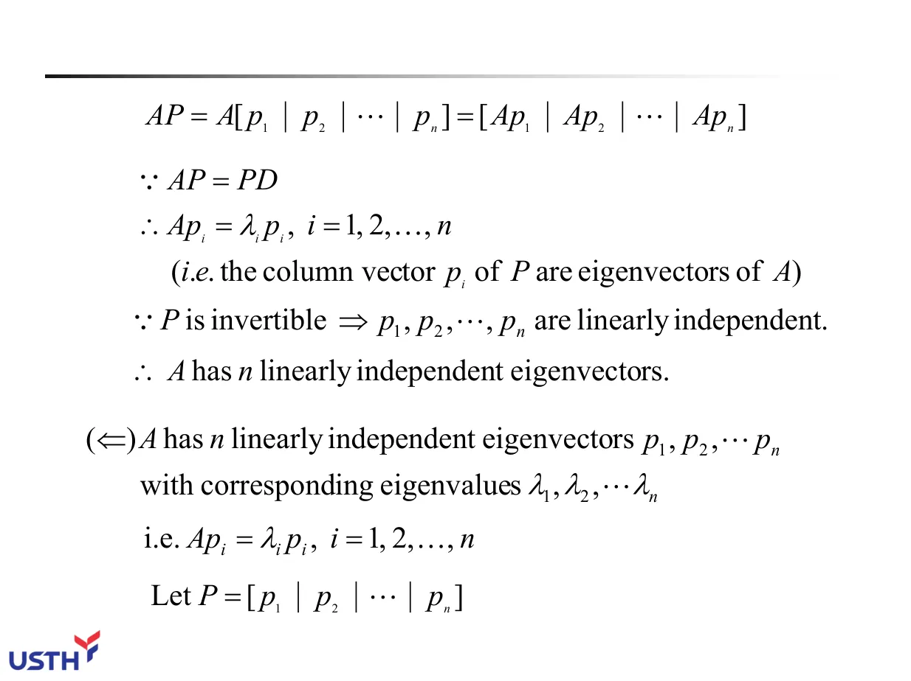
Also $AP=A[p_1\mid\cdots\mid p_n]=[Ap_1\mid\cdots\mid Ap_n]$. From $D=P^{-1}AP$ we get $AP=PD$, so comparing columns $Ap_i=\lambda_ip_i$ for $i=1,\dots,n$: the column vectors $p_i$ of $P$ are eigenvectors of $A$. Since $P$ is invertible, $p_1,\dots,p_n$ are linearly independent. So $A$ has $n$ independent eigenvectors. ($\Leftarrow$) Conversely suppose $A$ has $n$ independent eigenvectors $p_1,\dots,p_n$ with eigenvalues $\lambda_1,\dots,\lambda_n$, i.e. $Ap_i=\lambda_ip_i$.
Cũng có $AP=A[p_1\mid\cdots\mid p_n]=[Ap_1\mid\cdots\mid Ap_n]$. Từ $D=P^{-1}AP$ suy ra $AP=PD$, so sánh các cột được $Ap_i=\lambda_ip_i$ với $i=1,\dots,n$: các cột $p_i$ của $P$ là vectơ riêng của $A$. Vì $P$ khả nghịch nên $p_1,\dots,p_n$ độc lập tuyến tính. Vậy $A$ có $n$ vectơ riêng độc lập. ($\Leftarrow$) Ngược lại giả sử $A$ có $n$ vectơ riêng độc lập $p_1,\dots,p_n$ với giá trị riêng $\lambda_1,\dots,\lambda_n$, tức $Ap_i=\lambda_ip_i$.
For $A=\begin{bmatrix}1&2\\2&1\end{bmatrix}$ and $P=\begin{bmatrix}1&1\\1&-1\end{bmatrix}$ check $AP=[Ap_1\mid Ap_2]=PD$.
Với $A=\begin{bmatrix}1&2\\2&1\end{bmatrix}$ và $P=\begin{bmatrix}1&1\\1&-1\end{bmatrix}$ hãy kiểm tra $AP=[Ap_1\mid Ap_2]=PD$.
Answer and solution · Đáp án và lời giải
Answer · Đáp án: $AP=\begin{bmatrix}3&-1\\3&1\end{bmatrix}=PD$
$Ap_1=(3,3)$ and $Ap_2=(-1,1)$, so $AP=\begin{bmatrix}3&-1\\3&1\end{bmatrix}$, which equals $PD$ for $D=\operatorname{diag}(3,-1)$ (previous slide). Column by column, $Ap_i=\lambda_ip_i$.
$Ap_1=(3,3)$ và $Ap_2=(-1,1)$ nên $AP=\begin{bmatrix}3&-1\\3&1\end{bmatrix}$, bằng $PD$ với $D=\operatorname{diag}(3,-1)$ (slide trước). Theo từng cột, $Ap_i=\lambda_ip_i$.
Theorem 7.5: the converse and a warning · Định lý 7.5: chiều ngược lại và một cảnh báo
★★★ Core · Cốt lõi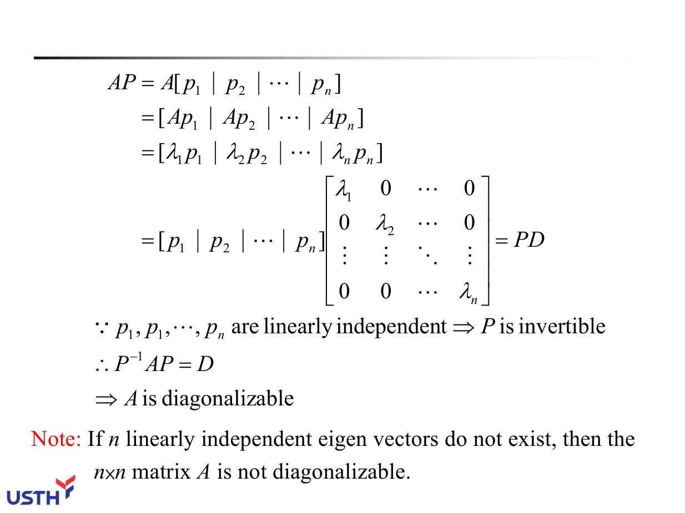
Let $P=[p_1\mid\cdots\mid p_n]$. Then $AP=[Ap_1\mid\cdots\mid Ap_n]=[\lambda_1p_1\mid\cdots\mid\lambda_np_n]=PD$ with $D=\operatorname{diag}(\lambda_1,\dots,\lambda_n)$. The columns of $P$ are linearly independent, so $P$ is invertible and $P^{-1}AP=D$: $A$ is diagonalizable. Note: if $n$ linearly independent eigenvectors do not exist, then the $n\times n$ matrix $A$ is not diagonalizable.
Cho $P=[p_1\mid\cdots\mid p_n]$. Khi đó $AP=[Ap_1\mid\cdots\mid Ap_n]=[\lambda_1p_1\mid\cdots\mid\lambda_np_n]=PD$ với $D=\operatorname{diag}(\lambda_1,\dots,\lambda_n)$. Các cột của $P$ độc lập tuyến tính nên $P$ khả nghịch và $P^{-1}AP=D$: $A$ chéo hóa được. Lưu ý: nếu không tồn tại $n$ vectơ riêng độc lập tuyến tính thì ma trận $A$ cấp $n$ không chéo hóa được.
Is $A=\begin{bmatrix}2&1\\0&2\end{bmatrix}$ diagonalizable?
$A=\begin{bmatrix}2&1\\0&2\end{bmatrix}$ có chéo hóa được không?
Answer and solution · Đáp án và lời giải
Answer · Đáp án: no: only one independent eigenvector
The only eigenvalue is $2$ and $A-2I=\begin{bmatrix}0&1\\0&0\end{bmatrix}$ has nullity $1$: the eigenvectors are $t(1,0)$. With $1<2$ independent eigenvectors, $A$ is not diagonalizable (Theorem 7.5).
Giá trị riêng duy nhất là $2$ và $A-2I=\begin{bmatrix}0&1\\0&0\end{bmatrix}$ có nullity $1$: các vectơ riêng là $t(1,0)$. Chỉ có $1<2$ vectơ riêng độc lập nên $A$ không chéo hóa được (Định lý 7.5).
Example 4: a matrix that is not diagonalizable · Ví dụ 4: ma trận không chéo hóa được
★★★ Core · Cốt lõi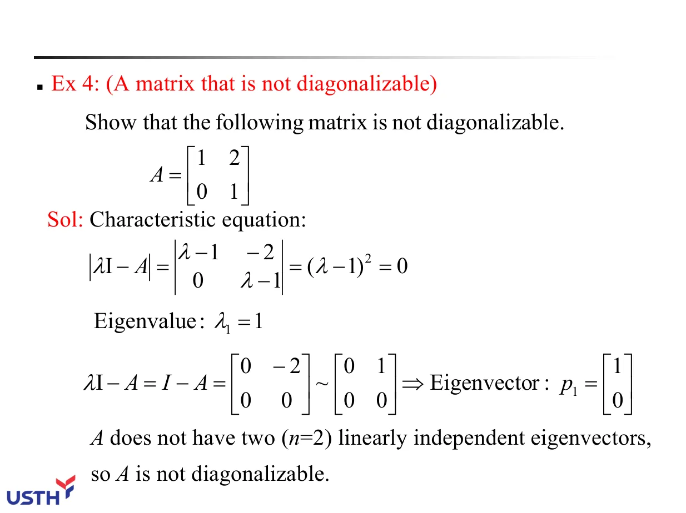
Show that $A=\begin{bmatrix}1&2\\0&1\end{bmatrix}$ is not diagonalizable. $\det(\lambda I-A)=\begin{vmatrix}\lambda-1&-2\\0&\lambda-1\end{vmatrix}=(\lambda-1)^2=0$: the only eigenvalue is $\lambda=1$. Then $I-A=\begin{bmatrix}0&-2\\0&0\end{bmatrix}\sim\begin{bmatrix}0&1\\0&0\end{bmatrix}$ gives $x_2=0$: eigenvector $p_1=\begin{bmatrix}1\\0\end{bmatrix}$. $A$ does not have two ($n=2$) linearly independent eigenvectors, so $A$ is not diagonalizable.
Chứng minh $A=\begin{bmatrix}1&2\\0&1\end{bmatrix}$ không chéo hóa được. $\det(\lambda I-A)=\begin{vmatrix}\lambda-1&-2\\0&\lambda-1\end{vmatrix}=(\lambda-1)^2=0$: giá trị riêng duy nhất là $\lambda=1$. Khi đó $I-A=\begin{bmatrix}0&-2\\0&0\end{bmatrix}\sim\begin{bmatrix}0&1\\0&0\end{bmatrix}$ cho $x_2=0$: vectơ riêng $p_1=\begin{bmatrix}1\\0\end{bmatrix}$. $A$ không có hai ($n=2$) vectơ riêng độc lập tuyến tính nên $A$ không chéo hóa được.
Show that $N=\begin{bmatrix}0&1\\0&0\end{bmatrix}$ is not diagonalizable, and explain why a matrix whose only eigenvalue is $\lambda$ is diagonalizable only if it equals $\lambda I$.
Chứng tỏ $N=\begin{bmatrix}0&1\\0&0\end{bmatrix}$ không chéo hóa được, và giải thích vì sao ma trận chỉ có một giá trị riêng $\lambda$ chỉ chéo hóa được khi nó bằng $\lambda I$.
Answer and solution · Đáp án và lời giải
Answer · Đáp án: $N$ has $\lambda=0$ twice but nullity $1$; if $P^{-1}AP=\lambda I$ then $A=\lambda I$
$\det(\lambda I-N)=\lambda^2$, $\lambda=0$, and $\ker N=\operatorname{span}\{(1,0)\}$ has dimension $1<2$: not diagonalizable. In general, if $P^{-1}AP=D=\lambda I$ then $A=PDP^{-1}=\lambda PP^{-1}=\lambda I$; since $N\ne0\cdot I$, it cannot be diagonalizable.
$\det(\lambda I-N)=\lambda^2$, $\lambda=0$, và $\ker N=\operatorname{span}\{(1,0)\}$ có số chiều $1<2$: không chéo hóa được. Tổng quát, nếu $P^{-1}AP=D=\lambda I$ thì $A=PDP^{-1}=\lambda PP^{-1}=\lambda I$; vì $N\ne0\cdot I$ nên nó không thể chéo hóa được.
Steps for diagonalizing a matrix · Các bước chéo hóa một ma trận
★★★ Core · Cốt lõi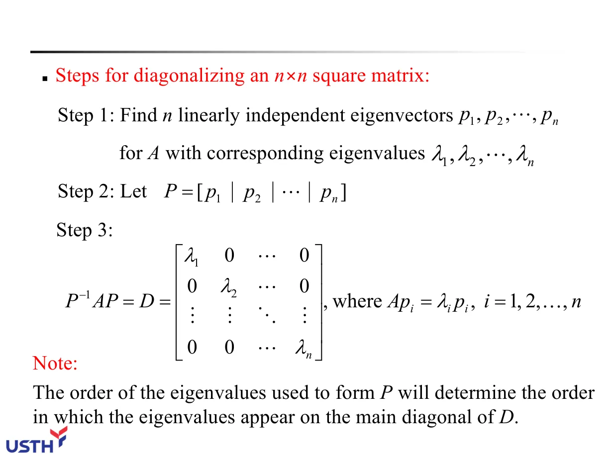
To diagonalize an $n\times n$ matrix $A$: Step 1 find $n$ linearly independent eigenvectors $p_1,\dots,p_n$ with eigenvalues $\lambda_1,\dots,\lambda_n$. Step 2 let $P=[p_1\mid p_2\mid\cdots\mid p_n]$. Step 3 then $P^{-1}AP=D=\operatorname{diag}(\lambda_1,\dots,\lambda_n)$ with $Ap_i=\lambda_ip_i$. Note: the order of the eigenvalues used to form $P$ determines the order in which they appear on the main diagonal of $D$.
Để chéo hóa ma trận $A$ cấp $n$: Bước 1 tìm $n$ vectơ riêng độc lập tuyến tính $p_1,\dots,p_n$ với giá trị riêng $\lambda_1,\dots,\lambda_n$. Bước 2 đặt $P=[p_1\mid p_2\mid\cdots\mid p_n]$. Bước 3 khi đó $P^{-1}AP=D=\operatorname{diag}(\lambda_1,\dots,\lambda_n)$ với $Ap_i=\lambda_ip_i$. Lưu ý: thứ tự các giá trị riêng dùng để lập $P$ quyết định thứ tự chúng xuất hiện trên đường chéo chính của $D$.
A three-step algorithm used in every diagonalization exercise; if Step 1 fails to give $n$ independent vectors, stop: the matrix is not diagonalizable.
Thuật toán ba bước dùng trong mọi bài chéo hóa; nếu Bước 1 không cho đủ $n$ vectơ độc lập thì dừng: ma trận không chéo hóa được.
Diagonalize $B=\begin{bmatrix}4&1\\2&3\end{bmatrix}$: give $P$ and $D$ and check $P^{-1}BP=D$.
Chéo hóa $B=\begin{bmatrix}4&1\\2&3\end{bmatrix}$: cho $P$ và $D$ và kiểm tra $P^{-1}BP=D$.
Answer and solution · Đáp án và lời giải
Answer · Đáp án: $P=\begin{bmatrix}1&1\\1&-2\end{bmatrix}$, $D=\operatorname{diag}(5,2)$
Step 1: $\det(\lambda I-B)=\lambda^2-7\lambda+10$, $\lambda=5,2$ with eigenvectors $(1,1)$ and $(1,-2)$ (independent). Step 2: $P=\begin{bmatrix}1&1\\1&-2\end{bmatrix}$. Step 3: $P^{-1}BP=\operatorname{diag}(5,2)$ (check $BP=PD$).
Bước 1: $\det(\lambda I-B)=\lambda^2-7\lambda+10$, $\lambda=5,2$ với vectơ riêng $(1,1)$ và $(1,-2)$ (độc lập). Bước 2: $P=\begin{bmatrix}1&1\\1&-2\end{bmatrix}$. Bước 3: $P^{-1}BP=\operatorname{diag}(5,2)$ (kiểm tra $BP=PD$).
Example 5: diagonalizing a matrix (characteristic polynomial) · Ví dụ 5: chéo hóa một ma trận (đa thức đặc trưng)
★★★ Core · Cốt lõi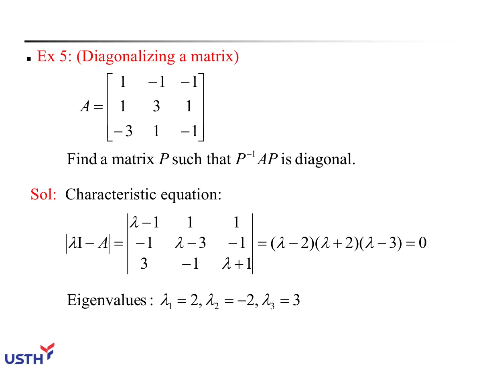
Find a matrix $P$ such that $P^{-1}AP$ is diagonal, for $A=\begin{bmatrix}1&-1&-1\\1&3&1\\-3&1&-1\end{bmatrix}$. $\det(\lambda I-A)=\begin{vmatrix}\lambda-1&1&1\\-1&\lambda-3&-1\\3&-1&\lambda+1\end{vmatrix}=(\lambda-2)(\lambda+2)(\lambda-3)=0$, so $\lambda_1=2$, $\lambda_2=-2$, $\lambda_3=3$: three distinct eigenvalues.
Tìm ma trận $P$ sao cho $P^{-1}AP$ chéo, với $A=\begin{bmatrix}1&-1&-1\\1&3&1\\-3&1&-1\end{bmatrix}$. $\det(\lambda I-A)=\begin{vmatrix}\lambda-1&1&1\\-1&\lambda-3&-1\\3&-1&\lambda+1\end{vmatrix}=(\lambda-2)(\lambda+2)(\lambda-3)=0$ nên $\lambda_1=2$, $\lambda_2=-2$, $\lambda_3=3$: ba giá trị riêng phân biệt.
Confirm the characteristic polynomial of the slide and the two quick checks: the eigenvalues add up to $\operatorname{tr}A$ and multiply to $\det A$.
Xác nhận đa thức đặc trưng của slide và hai phép thử nhanh: các giá trị riêng có tổng bằng $\operatorname{tr}A$ và tích bằng $\det A$.
Answer and solution · Đáp án và lời giải
Answer · Đáp án: $\operatorname{tr}A=3=2-2+3$; $\det A=-12=2\cdot(-2)\cdot3$
$\operatorname{tr}A=1+3-1=3$ and $2+(-2)+3=3$ ✓. $\det A=1(-3-1)+1(-1+3)-1(1+9)=-4+2-10=-12$ and $2\cdot(-2)\cdot3=-12$ ✓.
$\operatorname{tr}A=1+3-1=3$ và $2+(-2)+3=3$ ✓. $\det A=1(-3-1)+1(-1+3)-1(1+9)=-4+2-10=-12$ và $2\cdot(-2)\cdot3=-12$ ✓.
Example 5: the eigenvectors for $\lambda_1=2$ and $\lambda_2=-2$ · Ví dụ 5: vectơ riêng của $\lambda_1=2$ và $\lambda_2=-2$
★★★ Core · Cốt lõi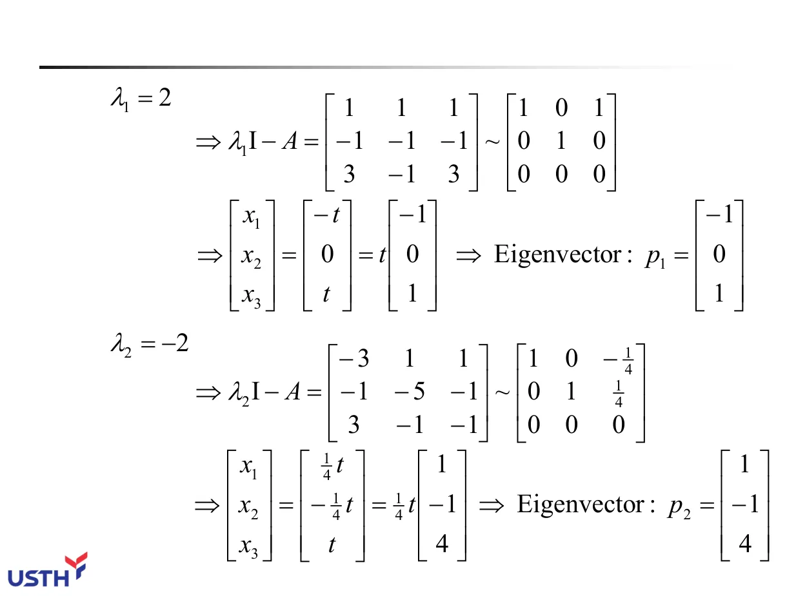
$\lambda_1=2$: $2I-A=\begin{bmatrix}1&1&1\\-1&-1&-1\\3&-1&3\end{bmatrix}\sim\begin{bmatrix}1&0&1\\0&1&0\\0&0&0\end{bmatrix}$, so $x=t(-1,0,1)$ and $p_1=(-1,0,1)$. $\lambda_2=-2$: $-2I-A=\begin{bmatrix}-3&1&1\\-1&-5&-1\\3&-1&-1\end{bmatrix}\sim\begin{bmatrix}1&0&-\frac14\\0&1&\frac14\\0&0&0\end{bmatrix}$, so $x=\frac14t(1,-1,4)$ and $p_2=(1,-1,4)$.
$\lambda_1=2$: $2I-A=\begin{bmatrix}1&1&1\\-1&-1&-1\\3&-1&3\end{bmatrix}\sim\begin{bmatrix}1&0&1\\0&1&0\\0&0&0\end{bmatrix}$ nên $x=t(-1,0,1)$ và $p_1=(-1,0,1)$. $\lambda_2=-2$: $-2I-A=\begin{bmatrix}-3&1&1\\-1&-5&-1\\3&-1&-1\end{bmatrix}\sim\begin{bmatrix}1&0&-\frac14\\0&1&\frac14\\0&0&0\end{bmatrix}$ nên $x=\frac14t(1,-1,4)$ và $p_2=(1,-1,4)$.
Verify $Ap_1=2p_1$ and $Ap_2=-2p_2$ for $p_1=(-1,0,1)$, $p_2=(1,-1,4)$.
Kiểm tra $Ap_1=2p_1$ và $Ap_2=-2p_2$ với $p_1=(-1,0,1)$, $p_2=(1,-1,4)$.
Answer and solution · Đáp án và lời giải
Answer · Đáp án: $Ap_1=(-2,0,2)$, $Ap_2=(-2,2,-8)$
$Ap_1=(-1+0-1,\ -1+0+1,\ 3+0-1)=(-2,0,2)=2p_1$ ✓. $Ap_2=(1+1-4,\ 1-3+4,\ -3-1-4)=(-2,2,-8)=-2p_2$ ✓.
$Ap_1=(-1+0-1,\ -1+0+1,\ 3+0-1)=(-2,0,2)=2p_1$ ✓. $Ap_2=(1+1-4,\ 1-3+4,\ -3-1-4)=(-2,2,-8)=-2p_2$ ✓.
Example 5: the third eigenvector and the diagonalization · Ví dụ 5: vectơ riêng thứ ba và phép chéo hóa
★★★ Core · Cốt lõi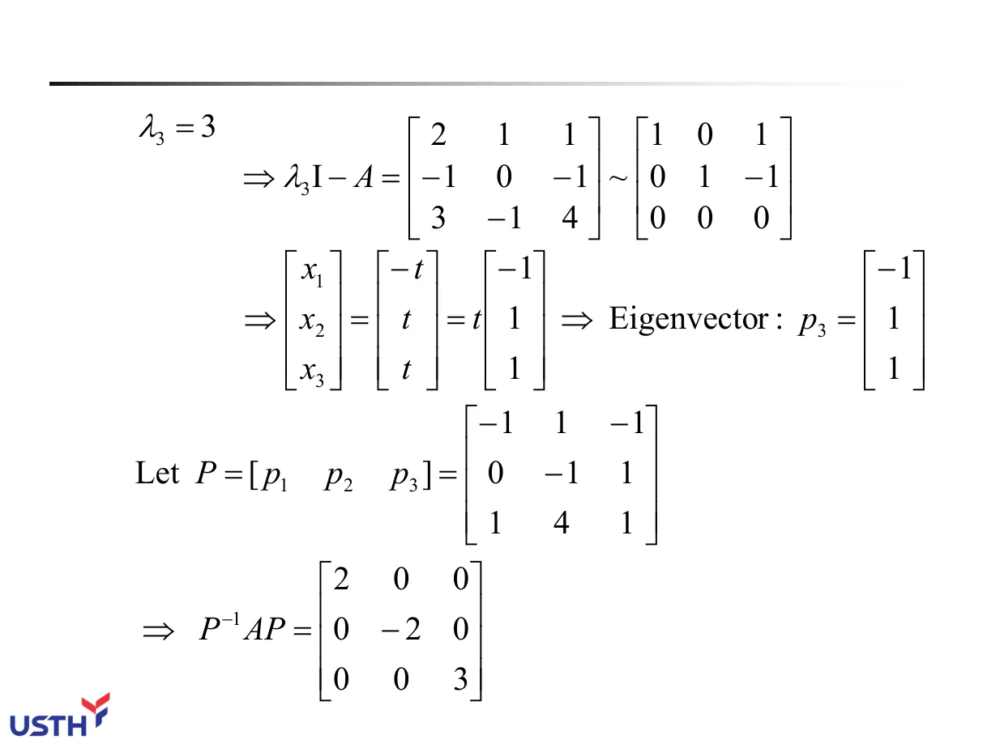
$\lambda_3=3$: $3I-A=\begin{bmatrix}2&1&1\\-1&0&-1\\3&-1&4\end{bmatrix}\sim\begin{bmatrix}1&0&1\\0&1&-1\\0&0&0\end{bmatrix}$, so $x=t(-1,1,1)$ and $p_3=(-1,1,1)$. Let $P=[p_1\ p_2\ p_3]=\begin{bmatrix}-1&1&-1\\0&-1&1\\1&4&1\end{bmatrix}$. Then $P^{-1}AP=\begin{bmatrix}2&0&0\\0&-2&0\\0&0&3\end{bmatrix}$.
$\lambda_3=3$: $3I-A=\begin{bmatrix}2&1&1\\-1&0&-1\\3&-1&4\end{bmatrix}\sim\begin{bmatrix}1&0&1\\0&1&-1\\0&0&0\end{bmatrix}$ nên $x=t(-1,1,1)$ và $p_3=(-1,1,1)$. Cho $P=[p_1\ p_2\ p_3]=\begin{bmatrix}-1&1&-1\\0&-1&1\\1&4&1\end{bmatrix}$. Khi đó $P^{-1}AP=\begin{bmatrix}2&0&0\\0&-2&0\\0&0&3\end{bmatrix}$.
Verify $Ap_3=3p_3$, that $\det P=5\ne0$, and $P^{-1}AP=\operatorname{diag}(2,-2,3)$.
Kiểm tra $Ap_3=3p_3$, $\det P=5\ne0$ và $P^{-1}AP=\operatorname{diag}(2,-2,3)$.
Answer and solution · Đáp án và lời giải
Answer · Đáp án: $Ap_3=(-3,3,3)$; $\det P=5$; $P^{-1}AP=\operatorname{diag}(2,-2,3)$
$Ap_3=(-1-1-1,\ -1+3+1,\ 3+1-1)=(-3,3,3)=3p_3$ ✓. $\det P=-1(-1-4)-1(0-1)-1(0+1)=5+1-1=5\ne0$, so the three eigenvectors are independent, and $P^{-1}AP=\operatorname{diag}(2,-2,3)$ (eigenvalues in the order of the columns).
$Ap_3=(-1-1-1,\ -1+3+1,\ 3+1-1)=(-3,3,3)=3p_3$ ✓. $\det P=-1(-1-4)-1(0-1)-1(0+1)=5+1-1=5\ne0$ nên ba vectơ riêng độc lập, và $P^{-1}AP=\operatorname{diag}(2,-2,3)$ (giá trị riêng theo thứ tự các cột).
Notes: powers of a diagonalizable matrix · Lưu ý: lũy thừa của ma trận chéo hóa được
★★★ Core · Cốt lõi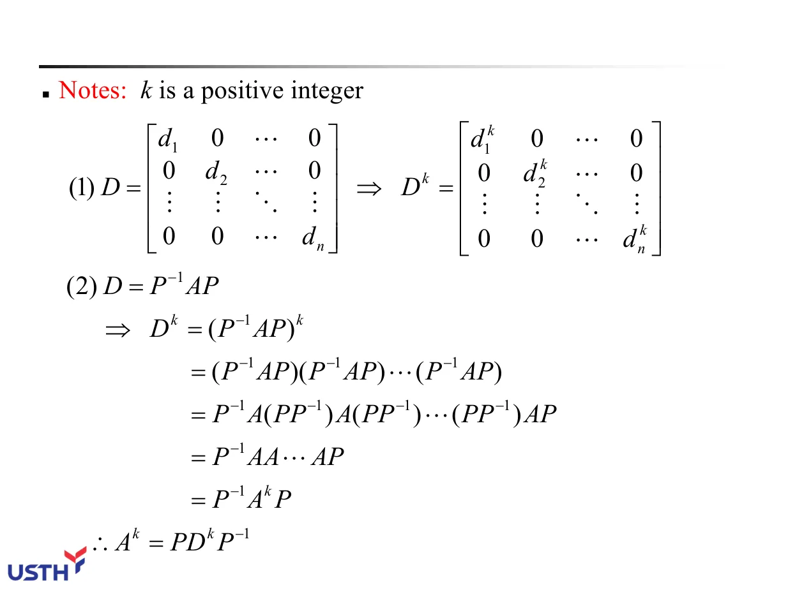
Notes ($k$ a positive integer): (1) if $D=\operatorname{diag}(d_1,\dots,d_n)$ then $D^k=\operatorname{diag}(d_1^k,\dots,d_n^k)$. (2) If $D=P^{-1}AP$ then $$\begin{aligned}D^k&=(P^{-1}AP)(P^{-1}AP)\cdots(P^{-1}AP)\\&=P^{-1}A(PP^{-1})A(PP^{-1})\cdots AP=P^{-1}A^kP,\end{aligned}$$ hence $A^k=PD^kP^{-1}$: the inner $PP^{-1}=I$ cancel.
Lưu ý ($k$ nguyên dương): (1) nếu $D=\operatorname{diag}(d_1,\dots,d_n)$ thì $D^k=\operatorname{diag}(d_1^k,\dots,d_n^k)$. (2) Nếu $D=P^{-1}AP$ thì $$\begin{aligned}D^k&=(P^{-1}AP)(P^{-1}AP)\cdots(P^{-1}AP)\\&=P^{-1}A(PP^{-1})A(PP^{-1})\cdots AP=P^{-1}A^kP,\end{aligned}$$ do đó $A^k=PD^kP^{-1}$: các $PP^{-1}=I$ ở giữa triệt tiêu.
This turns a heavy computation ($k$ matrix multiplications) into powers of $n$ numbers; it solves recurrences, Markov chains and difference equations.
Công thức biến một phép tính nặng ($k$ phép nhân ma trận) thành lũy thừa của $n$ số; nó giải các dãy truy hồi, xích Markov và phương trình sai phân.
Use $B=PDP^{-1}$ with $P=\begin{bmatrix}1&1\\1&-2\end{bmatrix}$, $D=\operatorname{diag}(5,2)$ to find $B^k$ and then $B^5$ for $B=\begin{bmatrix}4&1\\2&3\end{bmatrix}$.
Dùng $B=PDP^{-1}$ với $P=\begin{bmatrix}1&1\\1&-2\end{bmatrix}$, $D=\operatorname{diag}(5,2)$ để tìm $B^k$ rồi $B^5$ với $B=\begin{bmatrix}4&1\\2&3\end{bmatrix}$.
Answer and solution · Đáp án và lời giải
Answer · Đáp án: $B^k=\frac13\begin{bmatrix}2\cdot5^k+2^k&5^k-2^k\\2\cdot5^k-2\cdot2^k&5^k+2\cdot2^k\end{bmatrix}$; $B^5=\begin{bmatrix}2094&1031\\2062&1063\end{bmatrix}$
$P^{-1}=\frac13\begin{bmatrix}2&1\\1&-1\end{bmatrix}$ and $B^k=P\operatorname{diag}(5^k,2^k)P^{-1}=\frac13\begin{bmatrix}5^k&2^k\\5^k&-2\cdot2^k\end{bmatrix}\begin{bmatrix}2&1\\1&-1\end{bmatrix}$, which gives the formula. For $k=5$ ($5^5=3125$, $2^5=32$): $\frac13\begin{bmatrix}6282&3093\\6186&3189\end{bmatrix}=\begin{bmatrix}2094&1031\\2062&1063\end{bmatrix}$. Check $k=1$ returns $B$.
$P^{-1}=\frac13\begin{bmatrix}2&1\\1&-1\end{bmatrix}$ và $B^k=P\operatorname{diag}(5^k,2^k)P^{-1}=\frac13\begin{bmatrix}5^k&2^k\\5^k&-2\cdot2^k\end{bmatrix}\begin{bmatrix}2&1\\1&-1\end{bmatrix}$, cho công thức. Với $k=5$ ($5^5=3125$, $2^5=32$): $\frac13\begin{bmatrix}6282&3093\\6186&3189\end{bmatrix}=\begin{bmatrix}2094&1031\\2062&1063\end{bmatrix}$. Kiểm tra $k=1$ trả về $B$.
Theorem 7.6: a sufficient condition for diagonalization · Định lý 7.6: điều kiện đủ để chéo hóa
★★★ Core · Cốt lõi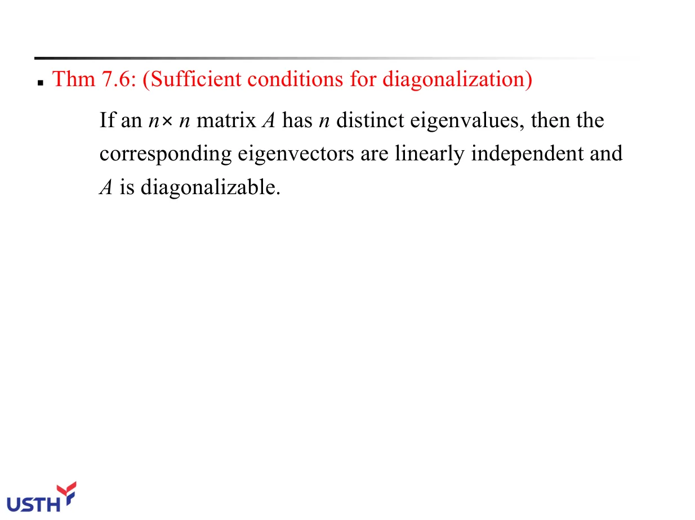
Theorem 7.6. If an $n\times n$ matrix $A$ has $n$ distinct eigenvalues, then the corresponding eigenvectors are linearly independent and $A$ is diagonalizable. This is only a sufficient condition: a matrix with repeated eigenvalues may still be diagonalizable (for instance $I_n$ or $\operatorname{diag}(2,2,5)$), as long as each repeated eigenvalue has enough independent eigenvectors.
Định lý 7.6. Nếu ma trận $A$ cấp $n$ có $n$ giá trị riêng phân biệt thì các vectơ riêng tương ứng độc lập tuyến tính và $A$ chéo hóa được. Đây chỉ là điều kiện đủ: ma trận có giá trị riêng lặp vẫn có thể chéo hóa được (ví dụ $I_n$ hoặc $\operatorname{diag}(2,2,5)$) miễn là mỗi giá trị riêng lặp có đủ vectơ riêng độc lập.
Why is $A=\begin{bmatrix}2&1\\0&3\end{bmatrix}$ diagonalizable? Diagonalize it. Is $I_2$ diagonalizable although its eigenvalues are not distinct?
Vì sao $A=\begin{bmatrix}2&1\\0&3\end{bmatrix}$ chéo hóa được? Hãy chéo hóa nó. $I_2$ có chéo hóa được dù giá trị riêng không phân biệt?
Answer and solution · Đáp án và lời giải
Answer · Đáp án: distinct eigenvalues $2,3$; $P=\begin{bmatrix}1&1\\0&1\end{bmatrix}$, $D=\operatorname{diag}(2,3)$; yes ($I_2=I\,I\,I^{-1}$)
$A$ is triangular with distinct eigenvalues $2$ and $3$, so it is diagonalizable (Theorem 7.6). Eigenvectors: $(1,0)$ for $2$ and $(1,1)$ for $3$, so $P=\begin{bmatrix}1&1\\0&1\end{bmatrix}$ and $P^{-1}AP=\operatorname{diag}(2,3)$. $I_2$ is already diagonal ($P=I$), so the condition is sufficient but not necessary.
$A$ tam giác với các giá trị riêng phân biệt $2$ và $3$ nên chéo hóa được (Định lý 7.6). Vectơ riêng: $(1,0)$ ứng với $2$ và $(1,1)$ ứng với $3$, nên $P=\begin{bmatrix}1&1\\0&1\end{bmatrix}$ và $P^{-1}AP=\operatorname{diag}(2,3)$. $I_2$ đã chéo ($P=I$) nên điều kiện là đủ nhưng không cần.
Example 7: deciding diagonalizability · Ví dụ 7: xét tính chéo hóa được
★★★ Core · Cốt lõi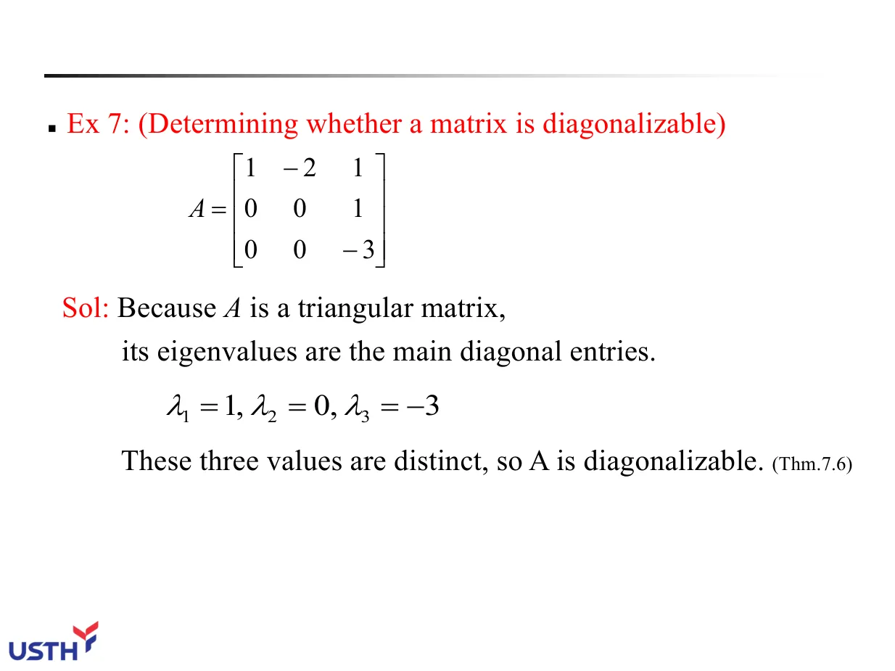
$A=\begin{bmatrix}1&-2&1\\0&0&1\\0&0&-3\end{bmatrix}$. Because $A$ is triangular, its eigenvalues are the main diagonal entries: $\lambda_1=1$, $\lambda_2=0$, $\lambda_3=-3$. These three values are distinct, so $A$ is diagonalizable (Theorem 7.6). No eigenvectors needed for the decision.
$A=\begin{bmatrix}1&-2&1\\0&0&1\\0&0&-3\end{bmatrix}$. Vì $A$ tam giác nên giá trị riêng là các phần tử đường chéo chính: $\lambda_1=1$, $\lambda_2=0$, $\lambda_3=-3$. Ba giá trị này phân biệt nên $A$ chéo hóa được (Định lý 7.6). Không cần vectơ riêng để kết luận.
Decide whether $A=\begin{bmatrix}2&0&0\\1&2&0\\0&0&5\end{bmatrix}$ is diagonalizable.
Xét xem $A=\begin{bmatrix}2&0&0\\1&2&0\\0&0&5\end{bmatrix}$ có chéo hóa được không.
Answer and solution · Đáp án và lời giải
Answer · Đáp án: not diagonalizable: the eigenvalue $2$ (twice) has only a $1$-dimensional eigenspace
The eigenvalues are $2,2,5$ (not distinct, so Theorem 7.6 is silent). $A-2I=\begin{bmatrix}0&0&0\\1&0&0\\0&0&3\end{bmatrix}$ forces $x_1=0$ and $x_3=0$: the eigenspace is $\operatorname{span}\{(0,1,0)\}$, dimension $1$. In total $1+1=2<3$ independent eigenvectors, so $A$ is not diagonalizable.
Các giá trị riêng là $2,2,5$ (không phân biệt nên Định lý 7.6 không kết luận được). $A-2I=\begin{bmatrix}0&0&0\\1&0&0\\0&0&3\end{bmatrix}$ buộc $x_1=0$ và $x_3=0$: không gian riêng là $\operatorname{span}\{(0,1,0)\}$, số chiều $1$. Tổng cộng $1+1=2<3$ vectơ riêng độc lập nên $A$ không chéo hóa được.
Example 8: diagonalizing a linear transformation (statement) · Ví dụ 8: chéo hóa một phép biến đổi tuyến tính (đề bài)
★★★ Core · Cốt lõi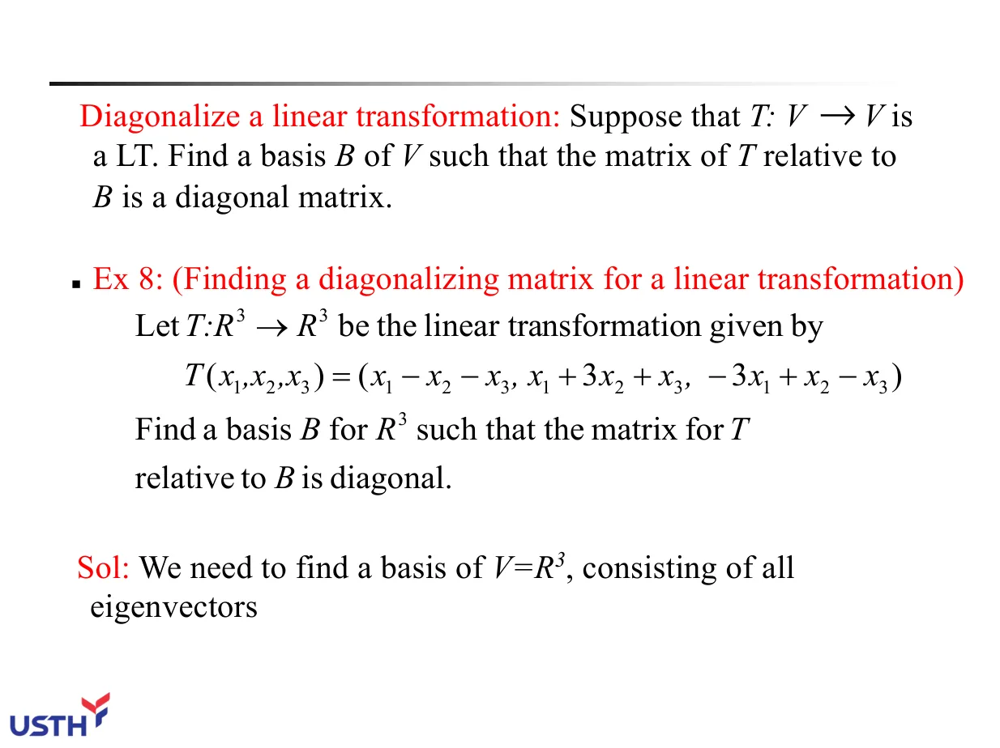
Let $T:\mathbb R^3\to\mathbb R^3$, $T(x_1,x_2,x_3)=(x_1-x_2-x_3,\ x_1+3x_2+x_3,\ -3x_1+x_2-x_3)$. Find a basis $B$ for $\mathbb R^3$ such that the matrix for $T$ relative to $B$ is diagonal. Diagonalizing a linear transformation: for $T:V\to V$, find a basis $B$ of $V$ such that the matrix of $T$ relative to $B$ is diagonal. We need a basis of $\mathbb R^3$ consisting of eigenvectors of $T$.
Cho $T:\mathbb R^3\to\mathbb R^3$, $T(x_1,x_2,x_3)=(x_1-x_2-x_3,\ x_1+3x_2+x_3,\ -3x_1+x_2-x_3)$. Tìm cơ sở $B$ của $\mathbb R^3$ sao cho ma trận của $T$ theo $B$ là chéo. Chéo hóa phép biến đổi tuyến tính: với $T:V\to V$, tìm cơ sở $B$ của $V$ sao cho ma trận của $T$ theo $B$ chéo. Ta cần một cơ sở của $\mathbb R^3$ gồm các vectơ riêng của $T$.
Find a basis of $\mathbb R^2$ in which $T(x,y)=(x+2y,\ 2x+y)$ has a diagonal matrix, and give that matrix.
Tìm cơ sở của $\mathbb R^2$ trong đó $T(x,y)=(x+2y,\ 2x+y)$ có ma trận chéo, và cho ma trận đó.
Answer and solution · Đáp án và lời giải
Answer · Đáp án: $B=\{(1,1),(1,-1)\}$, matrix $\operatorname{diag}(3,-1)$
The standard matrix is $\begin{bmatrix}1&2\\2&1\end{bmatrix}$ with eigenvalues $3$ and $-1$ and eigenvectors $(1,1)$ and $(1,-1)$. Relative to $B=\{(1,1),(1,-1)\}$: $T(1,1)=3(1,1)$ and $T(1,-1)=-1(1,-1)$, so the matrix is $\operatorname{diag}(3,-1)$.
Ma trận chuẩn là $\begin{bmatrix}1&2\\2&1\end{bmatrix}$ với giá trị riêng $3$ và $-1$ và vectơ riêng $(1,1)$ và $(1,-1)$. Theo $B=\{(1,1),(1,-1)\}$: $T(1,1)=3(1,1)$ và $T(1,-1)=-1(1,-1)$ nên ma trận là $\operatorname{diag}(3,-1)$.
Example 8: the standard matrix and its eigenvalues · Ví dụ 8: ma trận chuẩn và giá trị riêng
★★ Important · Quan trọng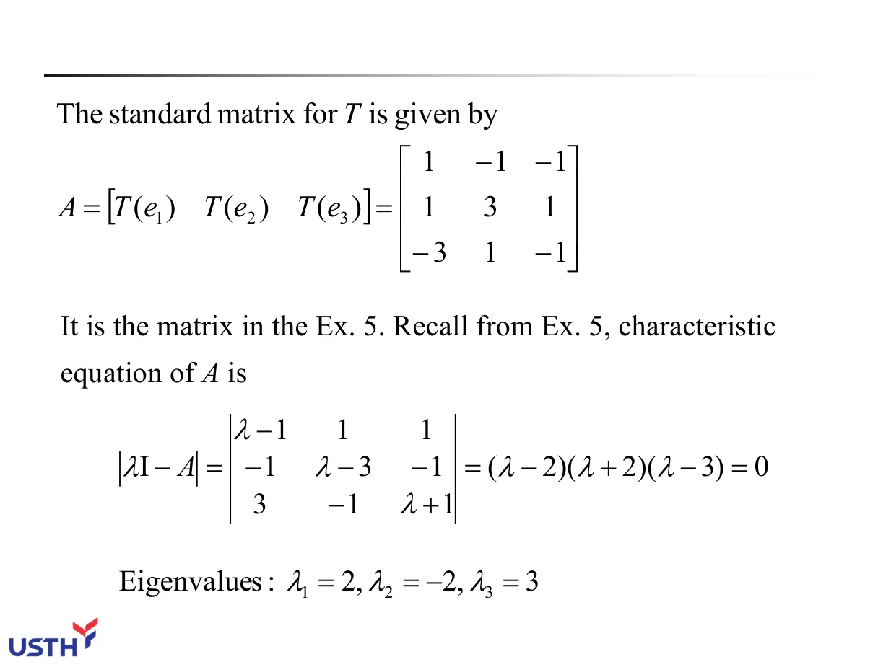
The standard matrix for $T$ is $A=[T(e_1)\ T(e_2)\ T(e_3)]=\begin{bmatrix}1&-1&-1\\1&3&1\\-3&1&-1\end{bmatrix}$: this is the matrix of Example 5. Recall from Example 5 that $\det(\lambda I-A)=(\lambda-2)(\lambda+2)(\lambda-3)$, so $\lambda_1=2$, $\lambda_2=-2$, $\lambda_3=3$.
Ma trận chuẩn của $T$ là $A=[T(e_1)\ T(e_2)\ T(e_3)]=\begin{bmatrix}1&-1&-1\\1&3&1\\-3&1&-1\end{bmatrix}$: đó là ma trận của Ví dụ 5. Nhớ lại ở Ví dụ 5: $\det(\lambda I-A)=(\lambda-2)(\lambda+2)(\lambda-3)$ nên $\lambda_1=2$, $\lambda_2=-2$, $\lambda_3=3$.
Check that the columns of $A$ are $T(e_1)=(1,1,-3)$, $T(e_2)=(-1,3,1)$, $T(e_3)=(-1,1,-1)$.
Kiểm tra các cột của $A$ là $T(e_1)=(1,1,-3)$, $T(e_2)=(-1,3,1)$, $T(e_3)=(-1,1,-1)$.
Answer and solution · Đáp án và lời giải
Answer · Đáp án: the three images are the columns of $A$
$T(1,0,0)=(1,1,-3)$, $T(0,1,0)=(-1,3,1)$, $T(0,0,1)=(-1,1,-1)$, read directly from the coefficients of $x_1,x_2,x_3$ in each component of $T$.
$T(1,0,0)=(1,1,-3)$, $T(0,1,0)=(-1,3,1)$, $T(0,0,1)=(-1,1,-1)$, đọc trực tiếp từ hệ số của $x_1,x_2,x_3$ trong mỗi thành phần của $T$.
Example 8: eigenvectors for $\lambda=2$ and $\lambda=-2$ · Ví dụ 8: vectơ riêng cho $\lambda=2$ và $\lambda=-2$
★★ Important · Quan trọngAs in Example 5: for $\lambda_1=2$ the reduction $2I-A\sim\begin{bmatrix}1&0&1\\0&1&0\\0&0&0\end{bmatrix}$ gives $p_1=(-1,0,1)$; for $\lambda_2=-2$ the reduction $-2I-A\sim\begin{bmatrix}1&0&-\frac14\\0&1&\frac14\\0&0&0\end{bmatrix}$ gives $p_2=(1,-1,4)$ (taking $t=4$). These are eigenvectors of $T$ because $T(p_i)=Ap_i=\lambda_ip_i$.
Như Ví dụ 5: với $\lambda_1=2$ phép rút gọn $2I-A\sim\begin{bmatrix}1&0&1\\0&1&0\\0&0&0\end{bmatrix}$ cho $p_1=(-1,0,1)$; với $\lambda_2=-2$ phép rút gọn $-2I-A\sim\begin{bmatrix}1&0&-\frac14\\0&1&\frac14\\0&0&0\end{bmatrix}$ cho $p_2=(1,-1,4)$ (lấy $t=4$). Đó là các vectơ riêng của $T$ vì $T(p_i)=Ap_i=\lambda_ip_i$.
Apply the formula of $T$ directly to verify $T(p_1)=2p_1$ and $T(p_2)=-2p_2$.
Áp dụng trực tiếp công thức của $T$ để kiểm tra $T(p_1)=2p_1$ và $T(p_2)=-2p_2$.
Answer and solution · Đáp án và lời giải
Answer · Đáp án: $T(-1,0,1)=(-2,0,2)$, $T(1,-1,4)=(-2,2,-8)$
$T(-1,0,1)=(-1-0-1,\ -1+0+1,\ 3+0-1)=(-2,0,2)=2p_1$. $T(1,-1,4)=(1+1-4,\ 1-3+4,\ -3-1-4)=(-2,2,-8)=-2p_2$.
$T(-1,0,1)=(-1-0-1,\ -1+0+1,\ 3+0-1)=(-2,0,2)=2p_1$. $T(1,-1,4)=(1+1-4,\ 1-3+4,\ -3-1-4)=(-2,2,-8)=-2p_2$.
Example 8: the eigenvector basis · Ví dụ 8: cơ sở vectơ riêng
★★★ Core · Cốt lõi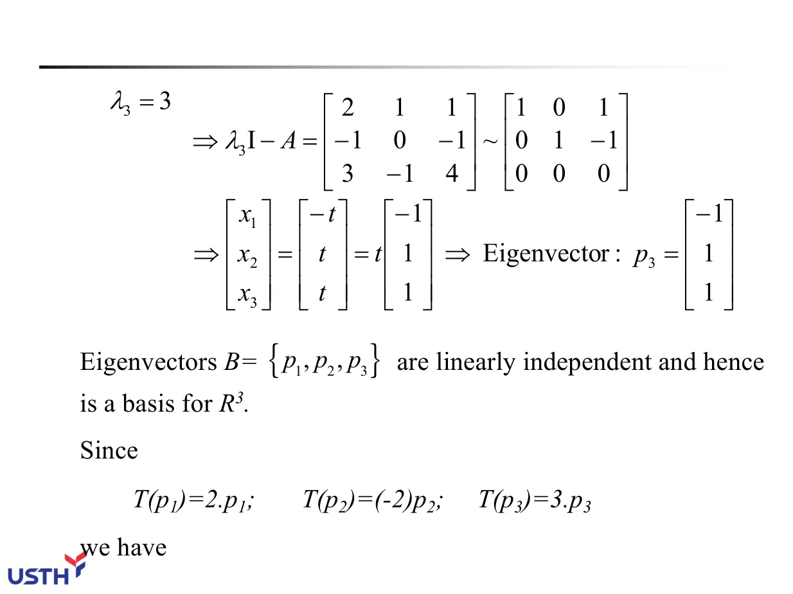
For $\lambda_3=3$ the reduction $3I-A\sim\begin{bmatrix}1&0&1\\0&1&-1\\0&0&0\end{bmatrix}$ gives $p_3=(-1,1,1)$. The eigenvectors $B=\{p_1,p_2,p_3\}$ are linearly independent (they belong to distinct eigenvalues), hence $B$ is a basis of $\mathbb R^3$. Since $T(p_1)=2p_1$, $T(p_2)=(-2)p_2$, $T(p_3)=3p_3$, the coordinate columns of the images are $(2,0,0)$, $(0,-2,0)$, $(0,0,3)$.
Với $\lambda_3=3$ phép rút gọn $3I-A\sim\begin{bmatrix}1&0&1\\0&1&-1\\0&0&0\end{bmatrix}$ cho $p_3=(-1,1,1)$. Các vectơ riêng $B=\{p_1,p_2,p_3\}$ độc lập tuyến tính (chúng ứng với các giá trị riêng phân biệt), do đó $B$ là cơ sở của $\mathbb R^3$. Vì $T(p_1)=2p_1$, $T(p_2)=(-2)p_2$, $T(p_3)=3p_3$ nên các cột tọa độ của các ảnh là $(2,0,0)$, $(0,-2,0)$, $(0,0,3)$.
Show that $\{(-1,0,1),(1,-1,4),(-1,1,1)\}$ is a basis of $\mathbb R^3$ and that $T(p_3)=3p_3$.
Chứng tỏ $\{(-1,0,1),(1,-1,4),(-1,1,1)\}$ là cơ sở của $\mathbb R^3$ và $T(p_3)=3p_3$.
Answer and solution · Đáp án và lời giải
Answer · Đáp án: $\det=5\ne0$; $T(-1,1,1)=(-3,3,3)=3p_3$
The matrix with these columns has $\det P=5\ne0$ (three independent vectors in $\mathbb R^3$ form a basis). $T(-1,1,1)=(-1-1-1,\ -1+3+1,\ 3+1-1)=(-3,3,3)=3p_3$.
Ma trận có các cột này có $\det P=5\ne0$ (ba vectơ độc lập trong $\mathbb R^3$ tạo thành cơ sở). $T(-1,1,1)=(-1-1-1,\ -1+3+1,\ 3+1-1)=(-3,3,3)=3p_3$.
Example 8: the diagonal matrix of $T$ and the transition matrix · Ví dụ 8: ma trận chéo của $T$ và ma trận chuyển cơ sở
★★★ Core · Cốt lõi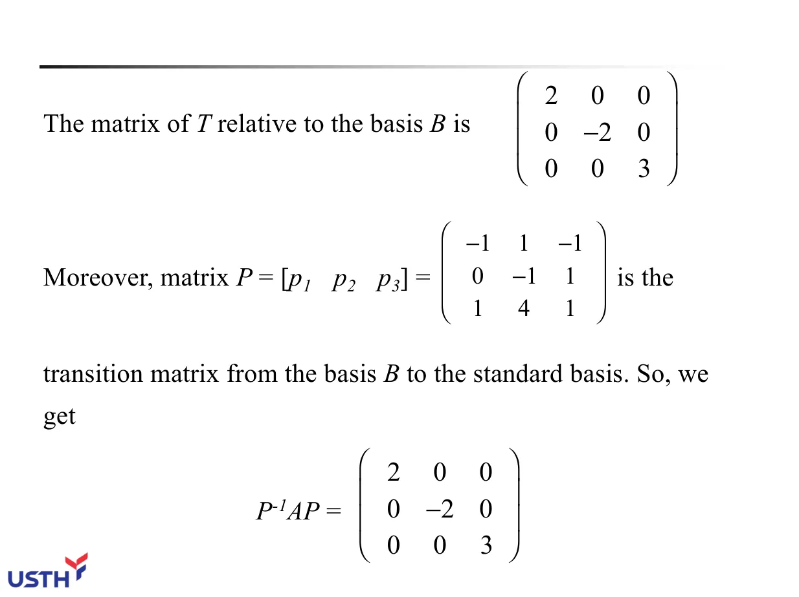
The matrix of $T$ relative to the basis $B$ is $\begin{bmatrix}2&0&0\\0&-2&0\\0&0&3\end{bmatrix}$. Moreover $P=[p_1\ p_2\ p_3]=\begin{bmatrix}-1&1&-1\\0&-1&1\\1&4&1\end{bmatrix}$ is the transition matrix from the basis $B$ to the standard basis, so $P^{-1}AP=\begin{bmatrix}2&0&0\\0&-2&0\\0&0&3\end{bmatrix}$: the formula $A'=P^{-1}AP$ of Lecture 6 with $A'$ diagonal.
Ma trận của $T$ theo cơ sở $B$ là $\begin{bmatrix}2&0&0\\0&-2&0\\0&0&3\end{bmatrix}$. Hơn nữa $P=[p_1\ p_2\ p_3]=\begin{bmatrix}-1&1&-1\\0&-1&1\\1&4&1\end{bmatrix}$ là ma trận chuyển từ cơ sở $B$ sang cơ sở chuẩn, nên $P^{-1}AP=\begin{bmatrix}2&0&0\\0&-2&0\\0&0&3\end{bmatrix}$: công thức $A'=P^{-1}AP$ của Bài 6 với $A'$ chéo.
For $v=(1,0,0)$ find $[v]_B$ and check that $D[v]_B=P^{-1}T(v)=[T(v)]_B$.
Với $v=(1,0,0)$ tìm $[v]_B$ và kiểm tra $D[v]_B=P^{-1}T(v)=[T(v)]_B$.
Answer and solution · Đáp án và lời giải
Answer · Đáp án: $[v]_B=\left(-1,\frac15,\frac15\right)$, $[T(v)]_B=\left(-2,-\frac25,\frac35\right)$
$[v]_B=P^{-1}v=\left(-1,\frac15,\frac15\right)$ (check: $-p_1+\frac15p_2+\frac15p_3=(1,0,0)$). Then $D[v]_B=\left(2\cdot(-1),\ -2\cdot\frac15,\ 3\cdot\frac15\right)=\left(-2,-\frac25,\frac35\right)$, and $T(v)=(1,1,-3)$ gives $P^{-1}T(v)$ with the same value ✓.
$[v]_B=P^{-1}v=\left(-1,\frac15,\frac15\right)$ (kiểm tra: $-p_1+\frac15p_2+\frac15p_3=(1,0,0)$). Khi đó $D[v]_B=\left(2\cdot(-1),\ -2\cdot\frac15,\ 3\cdot\frac15\right)=\left(-2,-\frac25,\frac35\right)$, và $T(v)=(1,1,-3)$ cho $P^{-1}T(v)$ cùng giá trị ✓.
7.3 Symmetric matrices · 7.3 Ma trận đối xứng
★★★ Core · Cốt lõi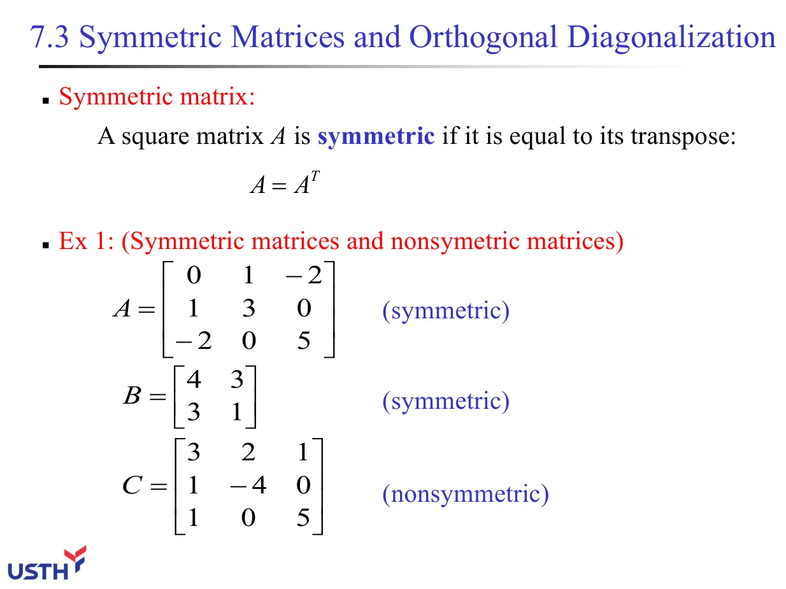
A square matrix $A$ is symmetric if it equals its transpose: $A=A^T$ (entries mirror across the main diagonal: $a_{ij}=a_{ji}$). Example 1: $A=\begin{bmatrix}0&1&-2\\1&3&0\\-2&0&5\end{bmatrix}$ and $B=\begin{bmatrix}4&3\\3&1\end{bmatrix}$ are symmetric; $C=\begin{bmatrix}3&2&1\\1&-4&0\\1&0&5\end{bmatrix}$ is not symmetric ($c_{12}=2\ne c_{21}=1$).
Ma trận vuông $A$ là đối xứng nếu nó bằng chuyển vị của nó: $A=A^T$ (các phần tử đối xứng qua đường chéo chính: $a_{ij}=a_{ji}$). Ví dụ 1: $A=\begin{bmatrix}0&1&-2\\1&3&0\\-2&0&5\end{bmatrix}$ và $B=\begin{bmatrix}4&3\\3&1\end{bmatrix}$ đối xứng; $C=\begin{bmatrix}3&2&1\\1&-4&0\\1&0&5\end{bmatrix}$ không đối xứng ($c_{12}=2\ne c_{21}=1$).
Show that $M^TM$ is symmetric for every real matrix $M$; check with $M=\begin{bmatrix}1&2\\0&3\\4&-1\end{bmatrix}$.
Chứng tỏ $M^TM$ đối xứng với mọi ma trận thực $M$; kiểm tra với $M=\begin{bmatrix}1&2\\0&3\\4&-1\end{bmatrix}$.
Answer and solution · Đáp án và lời giải
Answer · Đáp án: $(M^TM)^T=M^TM$; $M^TM=\begin{bmatrix}17&-2\\-2&14\end{bmatrix}$
$(M^TM)^T=M^T(M^T)^T=M^TM$. For the given $M$: $\begin{bmatrix}1&0&4\\2&3&-1\end{bmatrix}\begin{bmatrix}1&2\\0&3\\4&-1\end{bmatrix}=\begin{bmatrix}1+0+16&2+0-4\\2+0-4&4+9+1\end{bmatrix}=\begin{bmatrix}17&-2\\-2&14\end{bmatrix}$, visibly symmetric.
$(M^TM)^T=M^T(M^T)^T=M^TM$. Với $M$ đã cho: $\begin{bmatrix}1&0&4\\2&3&-1\end{bmatrix}\begin{bmatrix}1&2\\0&3\\4&-1\end{bmatrix}=\begin{bmatrix}1+0+16&2+0-4\\2+0-4&4+9+1\end{bmatrix}=\begin{bmatrix}17&-2\\-2&14\end{bmatrix}$, rõ ràng đối xứng.
Theorem 7.7: eigenvalues of symmetric matrices · Định lý 7.7: giá trị riêng của ma trận đối xứng
★★★ Core · Cốt lõi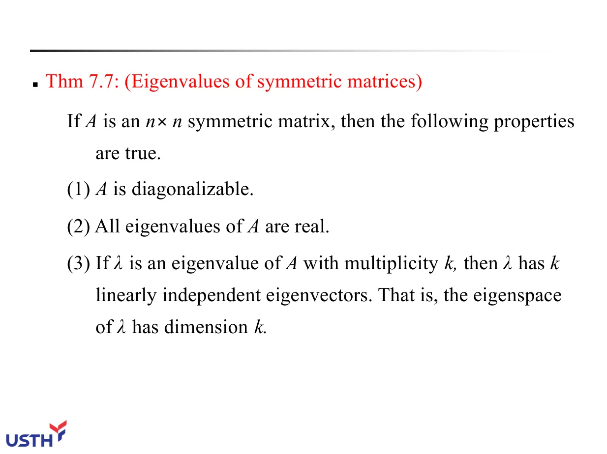
Theorem 7.7. If $A$ is an $n\times n$ symmetric matrix then: (1) $A$ is diagonalizable; (2) all eigenvalues of $A$ are real; (3) if $\lambda$ is an eigenvalue of multiplicity $k$, then $\lambda$ has $k$ linearly independent eigenvectors, i.e. its eigenspace has dimension $k$. So symmetric matrices never suffer the failure of $\begin{bmatrix}1&2\\0&1\end{bmatrix}$ (not symmetric) or the complex eigenvalues of a rotation.
Định lý 7.7. Nếu $A$ là ma trận đối xứng cấp $n$ thì: (1) $A$ chéo hóa được; (2) mọi giá trị riêng của $A$ đều thực; (3) nếu $\lambda$ là giá trị riêng bội $k$ thì $\lambda$ có $k$ vectơ riêng độc lập tuyến tính, tức không gian riêng có số chiều $k$. Vậy ma trận đối xứng không bao giờ gặp thất bại như $\begin{bmatrix}1&2\\0&1\end{bmatrix}$ (không đối xứng) hay giá trị riêng phức của phép quay.
Symmetric matrices (covariance matrices, $M^TM$, quadratic forms, the normal equations of Lecture 5) are everywhere, and for them diagonalization is guaranteed and clean.
Ma trận đối xứng (ma trận hiệp phương sai, $M^TM$, dạng toàn phương, hệ chuẩn của Bài 5) có mặt khắp nơi, và với chúng chéo hóa luôn được bảo đảm và gọn.
For the symmetric $A=\begin{bmatrix}2&1&1\\1&2&1\\1&1&2\end{bmatrix}$ find the eigenvalues, their multiplicities and the dimensions of the eigenspaces.
Với ma trận đối xứng $A=\begin{bmatrix}2&1&1\\1&2&1\\1&1&2\end{bmatrix}$ tìm các giá trị riêng, bội và số chiều các không gian riêng.
Answer and solution · Đáp án và lời giải
Answer · Đáp án: $\lambda=4$ (mult. $1$, $\dim1$) and $\lambda=1$ (mult. $2$, $\dim2$)
$A-I$ is the matrix of all ones, which has rank $1$ and nullity $2$, so $\lambda=1$ has a $2$-dimensional eigenspace; $A(1,1,1)=4(1,1,1)$ gives $\lambda=4$. The trace $6=4+1+1$ confirms there are no other eigenvalues. For a symmetric matrix the dimension always equals the multiplicity (Theorem 7.7(3)).
$A-I$ là ma trận toàn số $1$, có hạng $1$ và nullity $2$ nên $\lambda=1$ có không gian riêng $2$ chiều; $A(1,1,1)=4(1,1,1)$ cho $\lambda=4$. Vết $6=4+1+1$ xác nhận không còn giá trị riêng nào khác. Với ma trận đối xứng số chiều luôn bằng bội (Định lý 7.7(3)).
Example 2: a $2\times2$ symmetric matrix is diagonalizable (discriminant) · Ví dụ 2: ma trận đối xứng $2\times2$ chéo hóa được (biệt thức)
★★ Important · Quan trọng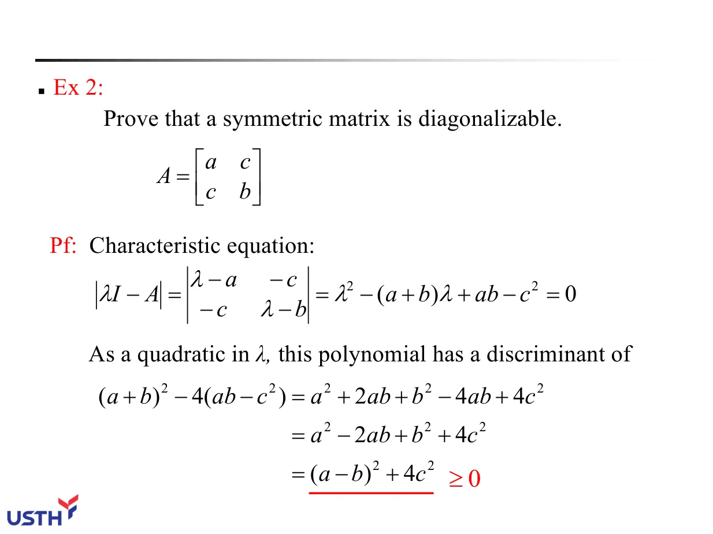
Prove that $A=\begin{bmatrix}a&c\\c&b\end{bmatrix}$ is diagonalizable. $\det(\lambda I-A)=\begin{vmatrix}\lambda-a&-c\\-c&\lambda-b\end{vmatrix}=\lambda^2-(a+b)\lambda+ab-c^2=0$. As a quadratic in $\lambda$ its discriminant is $(a+b)^2-4(ab-c^2)=a^2-2ab+b^2+4c^2=(a-b)^2+4c^2\ge0$, so the eigenvalues are real.
Chứng minh $A=\begin{bmatrix}a&c\\c&b\end{bmatrix}$ chéo hóa được. $\det(\lambda I-A)=\begin{vmatrix}\lambda-a&-c\\-c&\lambda-b\end{vmatrix}=\lambda^2-(a+b)\lambda+ab-c^2=0$. Xem như tam thức bậc hai theo $\lambda$, biệt thức của nó là $(a+b)^2-4(ab-c^2)=a^2-2ab+b^2+4c^2=(a-b)^2+4c^2\ge0$ nên các giá trị riêng đều thực.
Show that the discriminant of $\lambda^2-(a+b)\lambda+ab-c^2$ equals $(a-b)^2+4c^2$ and use it for $\begin{bmatrix}2&1\\1&2\end{bmatrix}$ and $\begin{bmatrix}5&0\\0&5\end{bmatrix}$.
Chứng tỏ biệt thức của $\lambda^2-(a+b)\lambda+ab-c^2$ bằng $(a-b)^2+4c^2$ và dùng nó cho $\begin{bmatrix}2&1\\1&2\end{bmatrix}$ và $\begin{bmatrix}5&0\\0&5\end{bmatrix}$.
Answer and solution · Đáp án và lời giải
Answer · Đáp án: $(a-b)^2+4c^2$: for $\begin{bmatrix}2&1\\1&2\end{bmatrix}$ it is $4>0$ (eigenvalues $3,1$); for $5I$ it is $0$
$(a+b)^2-4(ab-c^2)=a^2-2ab+b^2+4c^2$. For $a=b=2$, $c=1$: $0+4=4>0$, eigenvalues $\frac{4\pm2}2=3,1$. For $a=b=5$, $c=0$: $0$, a double root $5$ (and the matrix is already diagonal).
$(a+b)^2-4(ab-c^2)=a^2-2ab+b^2+4c^2$. Với $a=b=2$, $c=1$: $0+4=4>0$, giá trị riêng $\frac{4\pm2}2=3,1$. Với $a=b=5$, $c=0$: $0$, nghiệm kép $5$ (và ma trận đã chéo).
Example 2: the two cases of the discriminant · Ví dụ 2: hai trường hợp của biệt thức
★★ Important · Quan trọng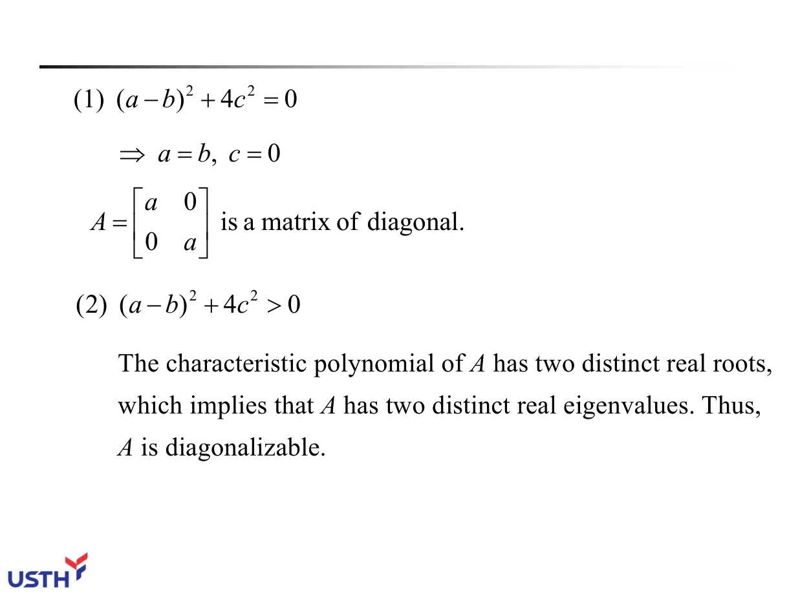
(1) If $(a-b)^2+4c^2=0$ then $a=b$ and $c=0$, so $A=\begin{bmatrix}a&0\\0&a\end{bmatrix}$ is already diagonal. (2) If $(a-b)^2+4c^2>0$ the characteristic polynomial has two distinct real roots, i.e. $A$ has two distinct real eigenvalues, so $A$ is diagonalizable (Theorem 7.6). Hence every $2\times2$ symmetric matrix is diagonalizable with real eigenvalues. A double eigenvalue occurs only for a scalar matrix $aI$.
(1) Nếu $(a-b)^2+4c^2=0$ thì $a=b$ và $c=0$ nên $A=\begin{bmatrix}a&0\\0&a\end{bmatrix}$ đã chéo. (2) Nếu $(a-b)^2+4c^2>0$ đa thức đặc trưng có hai nghiệm thực phân biệt, tức $A$ có hai giá trị riêng thực phân biệt nên $A$ chéo hóa được (Định lý 7.6). Vậy mọi ma trận đối xứng $2\times2$ đều chéo hóa được với giá trị riêng thực. Giá trị riêng kép chỉ xảy ra với ma trận vô hướng $aI$.
Find the eigenvalues of $\begin{bmatrix}3&1\\1&3\end{bmatrix}$ with the formula $\lambda=\frac{(a+b)\pm\sqrt{(a-b)^2+4c^2}}2$.
Tìm giá trị riêng của $\begin{bmatrix}3&1\\1&3\end{bmatrix}$ bằng công thức $\lambda=\frac{(a+b)\pm\sqrt{(a-b)^2+4c^2}}2$.
Answer and solution · Đáp án và lời giải
Answer · Đáp án: $\lambda=4$ and $\lambda=2$
$a=b=3$, $c=1$: $\sqrt{0+4}=2$, so $\lambda=\frac{6\pm2}2=4,2$. Two distinct real roots, in agreement with $\det(\lambda I-A)=(\lambda-3)^2-1=(\lambda-4)(\lambda-2)$.
$a=b=3$, $c=1$: $\sqrt{0+4}=2$ nên $\lambda=\frac{6\pm2}2=4,2$. Hai nghiệm thực phân biệt, phù hợp với $\det(\lambda I-A)=(\lambda-3)^2-1=(\lambda-4)(\lambda-2)$.
Orthogonal matrices · Ma trận trực giao
★★★ Core · Cốt lõi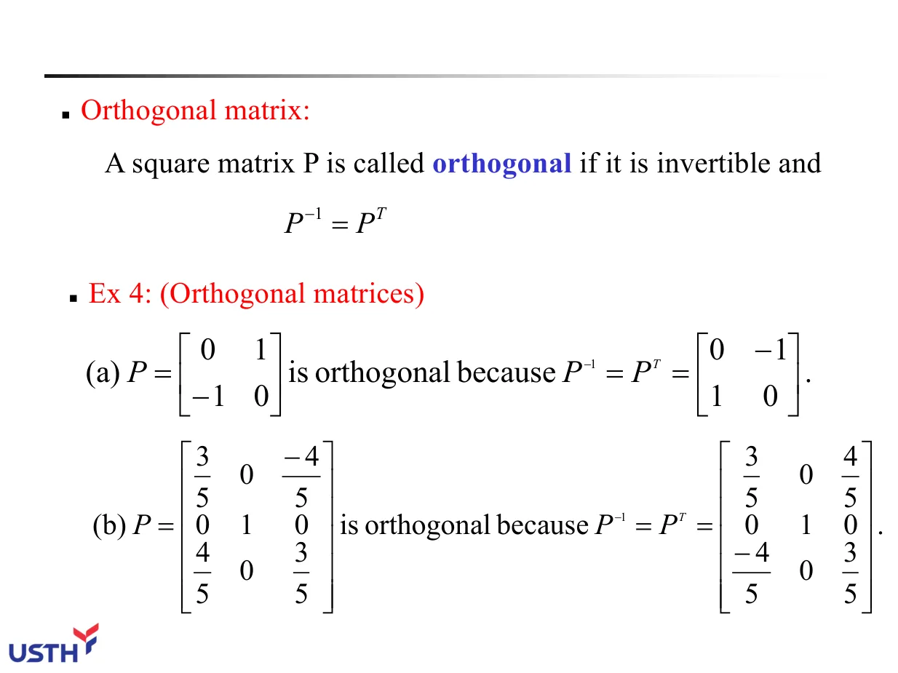
A square matrix $P$ is orthogonal if it is invertible and $P^{-1}=P^T$ (equivalently $P^TP=I$). Example 4: (a) $P=\begin{bmatrix}0&1\\-1&0\end{bmatrix}$ is orthogonal because $P^{-1}=P^T=\begin{bmatrix}0&-1\\1&0\end{bmatrix}$. (b) $P=\begin{bmatrix}\frac35&0&-\frac45\\0&1&0\\\frac45&0&\frac35\end{bmatrix}$ is orthogonal because $P^{-1}=P^T=\begin{bmatrix}\frac35&0&\frac45\\0&1&0\\-\frac45&0&\frac35\end{bmatrix}$.
Ma trận vuông $P$ là trực giao nếu nó khả nghịch và $P^{-1}=P^T$ (tương đương $P^TP=I$). Ví dụ 4: (a) $P=\begin{bmatrix}0&1\\-1&0\end{bmatrix}$ trực giao vì $P^{-1}=P^T=\begin{bmatrix}0&-1\\1&0\end{bmatrix}$. (b) $P=\begin{bmatrix}\frac35&0&-\frac45\\0&1&0\\\frac45&0&\frac35\end{bmatrix}$ trực giao vì $P^{-1}=P^T=\begin{bmatrix}\frac35&0&\frac45\\0&1&0\\-\frac45&0&\frac35\end{bmatrix}$.
Is the rotation matrix $R(\theta)$ orthogonal? Is $\begin{bmatrix}1&1\\-1&1\end{bmatrix}$? Fix the second one.
Ma trận quay $R(\theta)$ có trực giao không? $\begin{bmatrix}1&1\\-1&1\end{bmatrix}$ thì sao? Hãy sửa ma trận thứ hai.
Answer and solution · Đáp án và lời giải
Answer · Đáp án: $R(\theta)$ yes ($R^TR=I$); $\begin{bmatrix}1&1\\-1&1\end{bmatrix}$ no ($Q^TQ=2I$), but $\frac1{\sqrt2}Q$ is
$R^TR=\begin{bmatrix}\cos^2\theta+\sin^2\theta&0\\0&\sin^2\theta+\cos^2\theta\end{bmatrix}=I$. For $Q=\begin{bmatrix}1&1\\-1&1\end{bmatrix}$: $Q^TQ=\begin{bmatrix}2&0\\0&2\end{bmatrix}=2I\ne I$ (columns orthogonal but of length $\sqrt2$); dividing by $\sqrt2$ normalises the columns and gives an orthogonal matrix.
$R^TR=\begin{bmatrix}\cos^2\theta+\sin^2\theta&0\\0&\sin^2\theta+\cos^2\theta\end{bmatrix}=I$. Với $Q=\begin{bmatrix}1&1\\-1&1\end{bmatrix}$: $Q^TQ=\begin{bmatrix}2&0\\0&2\end{bmatrix}=2I\ne I$ (các cột trực giao nhưng dài $\sqrt2$); chia cho $\sqrt2$ chuẩn hóa các cột và cho ma trận trực giao.
Theorem 7.8: orthogonal matrices and orthonormal columns · Định lý 7.8: ma trận trực giao và các cột trực chuẩn
★★★ Core · Cốt lõi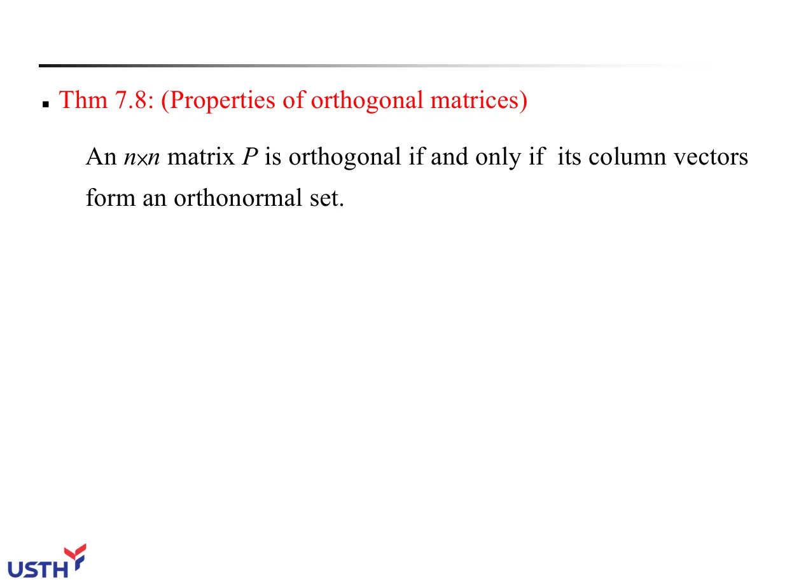
Theorem 7.8. An $n\times n$ matrix $P$ is orthogonal if and only if its column vectors form an orthonormal set. Reason: the $(i,j)$ entry of $P^TP$ is $p_i\cdot p_j$, so $P^TP=I$ means $p_i\cdot p_j=0$ for $i\ne j$ and $p_i\cdot p_i=1$. (The same holds for the rows.) So to build an orthogonal matrix, put an orthonormal basis of $\mathbb R^n$ in the columns (e.g. from Gram–Schmidt, Lecture 5).
Định lý 7.8. Ma trận $P$ cấp $n$ là trực giao khi và chỉ khi các cột của nó tạo thành tập trực chuẩn. Lý do: phần tử $(i,j)$ của $P^TP$ là $p_i\cdot p_j$ nên $P^TP=I$ nghĩa là $p_i\cdot p_j=0$ với $i\ne j$ và $p_i\cdot p_i=1$. (Với các hàng cũng vậy.) Vậy để dựng ma trận trực giao hãy đặt một cơ sở trực chuẩn của $\mathbb R^n$ vào các cột (ví dụ từ Gram–Schmidt, Bài 5).
Decide whether $P=\frac13\begin{bmatrix}1&2&2\\2&1&-2\\2&-2&1\end{bmatrix}$ is orthogonal.
Xét xem $P=\frac13\begin{bmatrix}1&2&2\\2&1&-2\\2&-2&1\end{bmatrix}$ có trực giao không.
Answer and solution · Đáp án và lời giải
Answer · Đáp án: yes: $P^TP=I$
The columns $\frac13(1,2,2)$, $\frac13(2,1,-2)$, $\frac13(2,-2,1)$ have length $\frac{\sqrt9}3=1$ and pairwise dot products $\frac{2+2-4}9=0$, $\frac{2-4+2}9=0$, $\frac{4-2-2}9=0$. By Theorem 7.8 $P$ is orthogonal.
Các cột $\frac13(1,2,2)$, $\frac13(2,1,-2)$, $\frac13(2,-2,1)$ có độ dài $\frac{\sqrt9}3=1$ và tích vô hướng từng cặp $\frac{2+2-4}9=0$, $\frac{2-4+2}9=0$, $\frac{4-2-2}9=0$. Theo Định lý 7.8 $P$ trực giao.
Example 5: an orthogonal matrix ($PP^T=I$) · Ví dụ 5: một ma trận trực giao ($PP^T=I$)
★★ Important · Quan trọng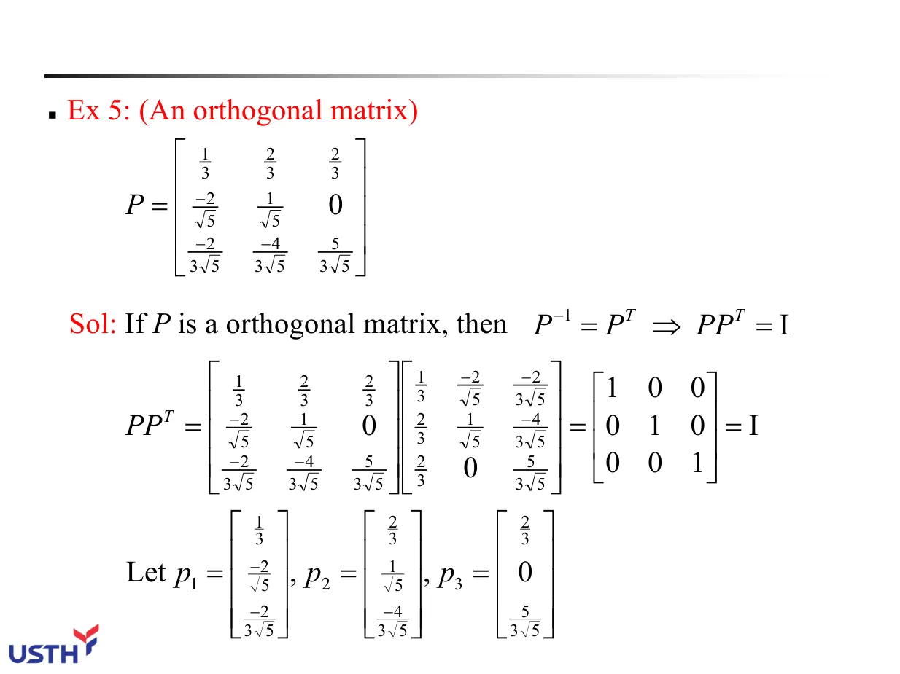
$P=\begin{bmatrix}\frac13&\frac23&\frac23\\-\frac2{\sqrt5}&\frac1{\sqrt5}&0\\-\frac2{3\sqrt5}&-\frac4{3\sqrt5}&\frac5{3\sqrt5}\end{bmatrix}$. If $P$ is orthogonal then $P^{-1}=P^T$, i.e. $PP^T=I$. Multiplying $P$ by its transpose gives $PP^T=\begin{bmatrix}1&0&0\\0&1&0\\0&0&1\end{bmatrix}=I$, so $P$ is orthogonal. Let $p_1,p_2,p_3$ be its columns.
$P=\begin{bmatrix}\frac13&\frac23&\frac23\\-\frac2{\sqrt5}&\frac1{\sqrt5}&0\\-\frac2{3\sqrt5}&-\frac4{3\sqrt5}&\frac5{3\sqrt5}\end{bmatrix}$. Nếu $P$ trực giao thì $P^{-1}=P^T$, tức $PP^T=I$. Nhân $P$ với chuyển vị của nó cho $PP^T=\begin{bmatrix}1&0&0\\0&1&0\\0&0&1\end{bmatrix}=I$ nên $P$ trực giao. Gọi $p_1,p_2,p_3$ là các cột của nó.
Verify $PP^T=I$ for the slide's $P$ and note $\det P=\pm1$ for every orthogonal matrix.
Kiểm tra $PP^T=I$ cho $P$ của slide và nhận xét $\det P=\pm1$ với mọi ma trận trực giao.
Answer and solution · Đáp án và lời giải
Answer · Đáp án: $PP^T=I$; $\det P=1$ here ($(\det P)^2=\det(PP^T)=1$)
Row norms: $\frac19+\frac49+\frac49=1$, $\frac45+\frac15=1$, $\frac4{45}+\frac{16}{45}+\frac{25}{45}=1$; row dot products vanish (e.g. rows $1,3$: $\frac{-2-8+10}{9\sqrt5}=0$). For any orthogonal $P$, $(\det P)^2=\det(PP^T)=1$ so $\det P=\pm1$; for this $P$ it equals $1$.
Chuẩn các hàng: $\frac19+\frac49+\frac49=1$, $\frac45+\frac15=1$, $\frac4{45}+\frac{16}{45}+\frac{25}{45}=1$; tích vô hướng các hàng triệt tiêu (ví dụ hàng $1,3$: $\frac{-2-8+10}{9\sqrt5}=0$). Với mọi $P$ trực giao, $(\det P)^2=\det(PP^T)=1$ nên $\det P=\pm1$; với $P$ này bằng $1$.
Example 5: the columns are orthonormal · Ví dụ 5: các cột là trực chuẩn
★★ Important · Quan trọng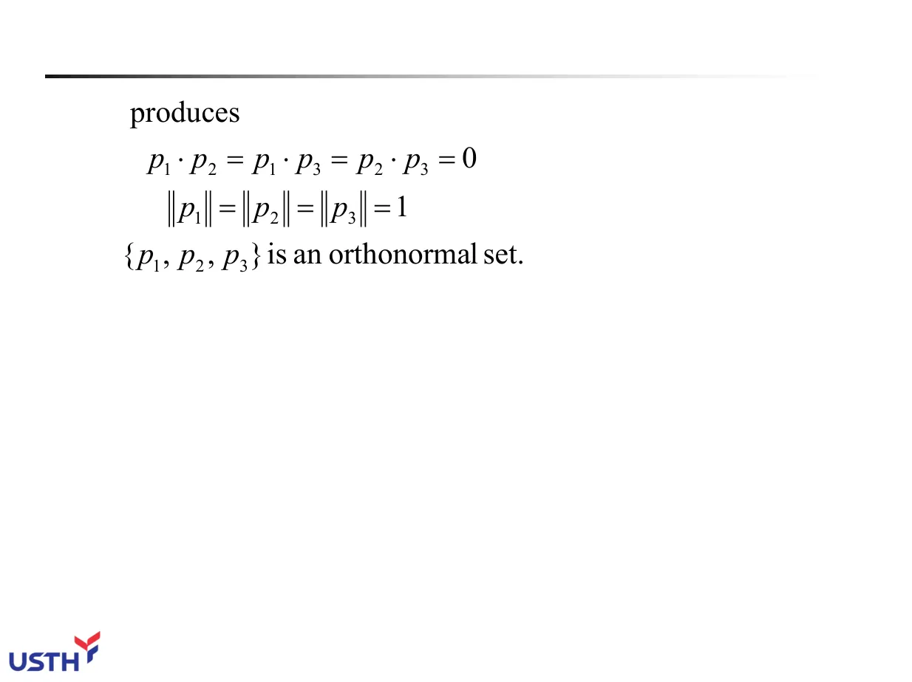
With $p_1=\begin{bmatrix}\frac13\\-\frac2{\sqrt5}\\-\frac2{3\sqrt5}\end{bmatrix}$, $p_2=\begin{bmatrix}\frac23\\\frac1{\sqrt5}\\-\frac4{3\sqrt5}\end{bmatrix}$, $p_3=\begin{bmatrix}\frac23\\0\\\frac5{3\sqrt5}\end{bmatrix}$ one checks $p_1\cdot p_2=p_1\cdot p_3=p_2\cdot p_3=0$ and $\|p_1\|=\|p_2\|=\|p_3\|=1$ (for instance $\|p_3\|^2=\frac49+\frac{25}{45}=1$). So $\{p_1,p_2,p_3\}$ is an orthonormal set, as Theorem 7.8 predicts.
Với $p_1=\begin{bmatrix}\frac13\\-\frac2{\sqrt5}\\-\frac2{3\sqrt5}\end{bmatrix}$, $p_2=\begin{bmatrix}\frac23\\\frac1{\sqrt5}\\-\frac4{3\sqrt5}\end{bmatrix}$, $p_3=\begin{bmatrix}\frac23\\0\\\frac5{3\sqrt5}\end{bmatrix}$ kiểm tra được $p_1\cdot p_2=p_1\cdot p_3=p_2\cdot p_3=0$ và $\|p_1\|=\|p_2\|=\|p_3\|=1$ (ví dụ $\|p_3\|^2=\frac49+\frac{25}{45}=1$). Vậy $\{p_1,p_2,p_3\}$ là tập trực chuẩn, đúng như Định lý 7.8 dự đoán.
Find the second column to complete $\begin{bmatrix}\frac35&?\\\frac45&?\end{bmatrix}$ to an orthogonal matrix. How many choices?
Tìm cột thứ hai để hoàn thành $\begin{bmatrix}\frac35&?\\\frac45&?\end{bmatrix}$ thành ma trận trực giao. Có bao nhiêu cách chọn?
Answer and solution · Đáp án và lời giải
Answer · Đáp án: $\pm\left(-\frac45,\frac35\right)$: two choices
The second column must be a unit vector orthogonal to $(\frac35,\frac45)$, i.e. a multiple of $(-4,3)$ of length $1$: $\pm\left(-\frac45,\frac35\right)$. The two choices give $\det=+1$ (a rotation) and $\det=-1$ (a reflection).
Cột thứ hai phải là vectơ đơn vị trực giao với $(\frac35,\frac45)$, tức bội của $(-4,3)$ có độ dài $1$: $\pm\left(-\frac45,\frac35\right)$. Hai cách chọn cho $\det=+1$ (phép quay) và $\det=-1$ (phép phản chiếu).
Theorem 7.9: eigenvectors of a symmetric matrix are orthogonal · Định lý 7.9: vectơ riêng của ma trận đối xứng trực giao
★★★ Core · Cốt lõi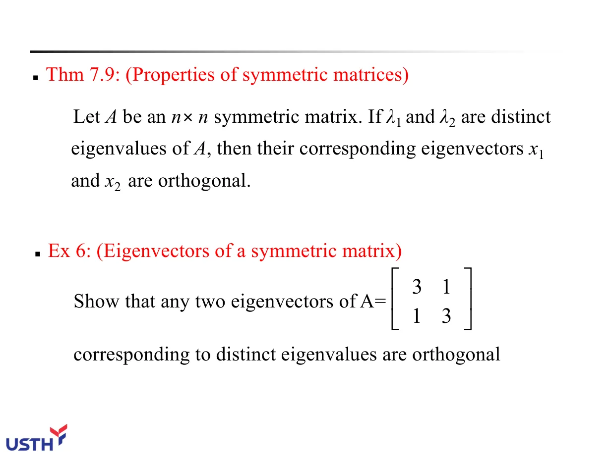
Theorem 7.9. Let $A$ be an $n\times n$ symmetric matrix. If $\lambda_1$ and $\lambda_2$ are distinct eigenvalues of $A$, then their corresponding eigenvectors $x_1$ and $x_2$ are orthogonal. Example 6: show that any two eigenvectors of $A=\begin{bmatrix}3&1\\1&3\end{bmatrix}$ corresponding to distinct eigenvalues are orthogonal. (Proof idea: $\lambda_1x_1\cdot x_2=Ax_1\cdot x_2=x_1\cdot Ax_2=\lambda_2x_1\cdot x_2$, so $(\lambda_1-\lambda_2)\,x_1\cdot x_2=0$.)
Định lý 7.9. Cho $A$ là ma trận đối xứng cấp $n$. Nếu $\lambda_1$ và $\lambda_2$ là các giá trị riêng phân biệt của $A$ thì các vectơ riêng tương ứng $x_1$ và $x_2$ trực giao. Ví dụ 6: chứng tỏ hai vectơ riêng bất kỳ của $A=\begin{bmatrix}3&1\\1&3\end{bmatrix}$ ứng với các giá trị riêng phân biệt thì trực giao. (Ý chứng minh: $\lambda_1x_1\cdot x_2=Ax_1\cdot x_2=x_1\cdot Ax_2=\lambda_2x_1\cdot x_2$ nên $(\lambda_1-\lambda_2)\,x_1\cdot x_2=0$.)
For $A=\begin{bmatrix}2&1&1\\1&2&1\\1&1&2\end{bmatrix}$ check that the eigenvector $(1,1,1)$ of $\lambda=4$ is orthogonal to the eigenvectors $(1,-1,0)$, $(1,0,-1)$ of $\lambda=1$, but that those two are not orthogonal to each other.
Với $A=\begin{bmatrix}2&1&1\\1&2&1\\1&1&2\end{bmatrix}$ kiểm tra vectơ riêng $(1,1,1)$ của $\lambda=4$ trực giao với các vectơ riêng $(1,-1,0)$, $(1,0,-1)$ của $\lambda=1$, nhưng hai vectơ sau không trực giao với nhau.
Answer and solution · Đáp án và lời giải
Answer · Đáp án: $0,0$; and $(1,-1,0)\cdot(1,0,-1)=1\ne0$
$(1,1,1)\cdot(1,-1,0)=0$ and $(1,1,1)\cdot(1,0,-1)=0$ (distinct eigenvalues $4\ne1$). But $(1,-1,0)\cdot(1,0,-1)=1\ne0$: both belong to the same eigenvalue $1$, and the theorem says nothing there (Gram–Schmidt will fix it, slide 53).
$(1,1,1)\cdot(1,-1,0)=0$ và $(1,1,1)\cdot(1,0,-1)=0$ (giá trị riêng phân biệt $4\ne1$). Nhưng $(1,-1,0)\cdot(1,0,-1)=1\ne0$: cả hai thuộc cùng giá trị riêng $1$, và định lý không nói gì ở đó (Gram–Schmidt sẽ sửa, slide 53).
Example 6: the solution · Ví dụ 6: lời giải
★★★ Core · Cốt lõi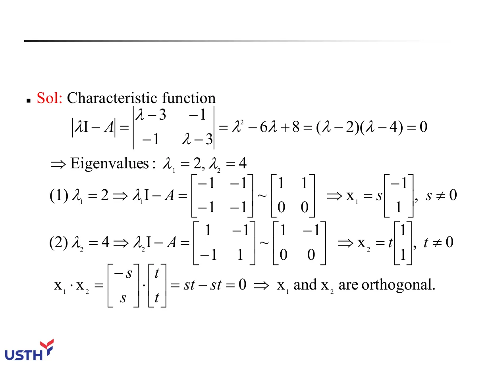
$\det(\lambda I-A)=\begin{vmatrix}\lambda-3&-1\\-1&\lambda-3\end{vmatrix}=\lambda^2-6\lambda+8=(\lambda-2)(\lambda-4)=0$, so $\lambda_1=2$, $\lambda_2=4$. (1) $\lambda_1=2$: $2I-A=\begin{bmatrix}-1&-1\\-1&-1\end{bmatrix}\sim\begin{bmatrix}1&1\\0&0\end{bmatrix}$, $x_1=s\begin{bmatrix}-1\\1\end{bmatrix}$. (2) $\lambda_2=4$: $4I-A=\begin{bmatrix}1&-1\\-1&1\end{bmatrix}\sim\begin{bmatrix}1&-1\\0&0\end{bmatrix}$, $x_2=t\begin{bmatrix}1\\1\end{bmatrix}$. Then $x_1\cdot x_2=-st+st=0$: orthogonal.
$\det(\lambda I-A)=\begin{vmatrix}\lambda-3&-1\\-1&\lambda-3\end{vmatrix}=\lambda^2-6\lambda+8=(\lambda-2)(\lambda-4)=0$ nên $\lambda_1=2$, $\lambda_2=4$. (1) $\lambda_1=2$: $2I-A=\begin{bmatrix}-1&-1\\-1&-1\end{bmatrix}\sim\begin{bmatrix}1&1\\0&0\end{bmatrix}$, $x_1=s\begin{bmatrix}-1\\1\end{bmatrix}$. (2) $\lambda_2=4$: $4I-A=\begin{bmatrix}1&-1\\-1&1\end{bmatrix}\sim\begin{bmatrix}1&-1\\0&0\end{bmatrix}$, $x_2=t\begin{bmatrix}1\\1\end{bmatrix}$. Khi đó $x_1\cdot x_2=-st+st=0$: trực giao.
Show that the hypothesis "symmetric" is needed: for $A=\begin{bmatrix}1&1\\0&2\end{bmatrix}$ find eigenvectors for the distinct eigenvalues and test orthogonality.
Chứng tỏ giả thiết “đối xứng” là cần thiết: với $A=\begin{bmatrix}1&1\\0&2\end{bmatrix}$ tìm vectơ riêng cho các giá trị riêng phân biệt và kiểm tra tính trực giao.
Answer and solution · Đáp án và lời giải
Answer · Đáp án: $(1,0)$ for $1$ and $(1,1)$ for $2$; dot product $1\ne0$
$A$ is triangular with eigenvalues $1,2$. $A(1,0)=(1,0)$ and $A(1,1)=(2,2)=2(1,1)$, but $(1,0)\cdot(1,1)=1\ne0$: the eigenvectors of distinct eigenvalues are not orthogonal because $A\ne A^T$.
$A$ tam giác với giá trị riêng $1,2$. $A(1,0)=(1,0)$ và $A(1,1)=(2,2)=2(1,1)$, nhưng $(1,0)\cdot(1,1)=1\ne0$: vectơ riêng của các giá trị riêng phân biệt không trực giao vì $A\ne A^T$.
Theorem 7.10: the fundamental theorem of symmetric matrices · Định lý 7.10: định lý cơ bản của ma trận đối xứng
★★★ Core · Cốt lõiTheorem 7.10. Let $A$ be an $n\times n$ matrix. Then $A$ is orthogonally diagonalizable and has real eigenvalues if and only if $A$ is symmetric. Orthogonal diagonalization: $A$ is orthogonally diagonalizable if there is an orthogonal matrix $P$ with $P^{-1}AP=D$ diagonal; since $P^{-1}=P^T$ this reads $P^TAP=D$, i.e. $A=PDP^T$ with an orthonormal eigenvector basis.
Định lý 7.10. Cho $A$ là ma trận cấp $n$. Khi đó $A$ chéo hóa trực giao được và có giá trị riêng thực khi và chỉ khi $A$ đối xứng. Chéo hóa trực giao: $A$ chéo hóa trực giao được nếu có ma trận trực giao $P$ sao cho $P^{-1}AP=D$ chéo; vì $P^{-1}=P^T$ điều này viết là $P^TAP=D$, tức $A=PDP^T$ với một cơ sở trực chuẩn gồm các vectơ riêng.
Orthogonally diagonalize $A=\begin{bmatrix}2&1\\1&2\end{bmatrix}$: find an orthogonal $P$ and $D$ with $P^TAP=D$.
Chéo hóa trực giao $A=\begin{bmatrix}2&1\\1&2\end{bmatrix}$: tìm $P$ trực giao và $D$ với $P^TAP=D$.
Answer and solution · Đáp án và lời giải
Answer · Đáp án: $P=\frac1{\sqrt2}\begin{bmatrix}1&1\\1&-1\end{bmatrix}$, $D=\operatorname{diag}(3,1)$
Eigenvalues $3$ and $1$ with eigenvectors $(1,1)$ and $(1,-1)$, which are orthogonal (Theorem 7.9). Normalise: $\frac1{\sqrt2}(1,1)$ and $\frac1{\sqrt2}(1,-1)$. Then $P^TP=I$ and $P^TAP=\operatorname{diag}(3,1)$.
Giá trị riêng $3$ và $1$ với vectơ riêng $(1,1)$ và $(1,-1)$, trực giao (Định lý 7.9). Chuẩn hóa: $\frac1{\sqrt2}(1,1)$ và $\frac1{\sqrt2}(1,-1)$. Khi đó $P^TP=I$ và $P^TAP=\operatorname{diag}(3,1)$.
The procedure for orthogonal diagonalization · Quy trình chéo hóa trực giao
★★★ Core · Cốt lõiLet $A$ be an $n\times n$ symmetric matrix. (1) Find all eigenvalues of $A$ and the multiplicity of each. (2) For each eigenvalue of multiplicity $1$, choose a unit eigenvector. (3) For each eigenvalue of multiplicity $k\ge2$, find $k$ linearly independent eigenvectors; if they are not orthonormal, apply Gram–Schmidt (and normalise). (4) The steps (2) and (3) produce an orthonormal set of $n$ eigenvectors; use them as the columns of $P$. Then $P^{-1}AP=P^TAP=D$ is diagonal.
Cho $A$ là ma trận đối xứng cấp $n$. (1) Tìm mọi giá trị riêng của $A$ và bội của từng giá trị. (2) Với mỗi giá trị riêng bội $1$, chọn một vectơ riêng đơn vị. (3) Với mỗi giá trị riêng bội $k\ge2$, tìm $k$ vectơ riêng độc lập tuyến tính; nếu chúng chưa trực chuẩn thì áp dụng Gram–Schmidt (và chuẩn hóa). (4) Các bước (2) và (3) cho một tập trực chuẩn gồm $n$ vectơ riêng; dùng chúng làm các cột của $P$. Khi đó $P^{-1}AP=P^TAP=D$ là ma trận chéo.
This is the exam recipe that combines Lecture 5 (Gram–Schmidt) and Lecture 7: Gram–Schmidt only acts inside an eigenspace of multiplicity $\ge2$, because eigenvectors of different eigenvalues are already orthogonal.
Đây là công thức thi kết hợp Bài 5 (Gram–Schmidt) và Bài 7: Gram–Schmidt chỉ tác động bên trong không gian riêng có bội $\ge2$, vì vectơ riêng của các giá trị riêng khác nhau đã trực giao.
Orthogonally diagonalize the symmetric matrix $A=\begin{bmatrix}2&1&1\\1&2&1\\1&1&2\end{bmatrix}$.
Chéo hóa trực giao ma trận đối xứng $A=\begin{bmatrix}2&1&1\\1&2&1\\1&1&2\end{bmatrix}$.
Answer and solution · Đáp án và lời giải
Answer · Đáp án: $P=\left[\tfrac1{\sqrt3}(1,1,1)\ \ \tfrac1{\sqrt2}(1,-1,0)\ \ \tfrac1{\sqrt6}(1,1,-2)\right]$, $D=\operatorname{diag}(4,1,1)$
$\lambda=4$ (multiplicity $1$): unit eigenvector $\frac1{\sqrt3}(1,1,1)$. $\lambda=1$ (multiplicity $2$): independent eigenvectors $(1,-1,0)$, $(1,0,-1)$; Gram–Schmidt: $w_1=(1,-1,0)$, $w_2=(1,0,-1)-\frac12(1,-1,0)=\left(\frac12,\frac12,-1\right)$, normalised to $\frac1{\sqrt2}(1,-1,0)$ and $\frac1{\sqrt6}(1,1,-2)$. Then $P^TAP=\operatorname{diag}(4,1,1)$.
$\lambda=4$ (bội $1$): vectơ riêng đơn vị $\frac1{\sqrt3}(1,1,1)$. $\lambda=1$ (bội $2$): các vectơ riêng độc lập $(1,-1,0)$, $(1,0,-1)$; Gram–Schmidt: $w_1=(1,-1,0)$, $w_2=(1,0,-1)-\frac12(1,-1,0)=\left(\frac12,\frac12,-1\right)$, chuẩn hóa thành $\frac1{\sqrt2}(1,-1,0)$ và $\frac1{\sqrt6}(1,1,-2)$. Khi đó $P^TAP=\operatorname{diag}(4,1,1)$.
Example 7: which matrices are orthogonally diagonalizable? · Ví dụ 7: ma trận nào chéo hóa trực giao được?
★★★ Core · Cốt lõiBy Theorem 7.10 a matrix is orthogonally diagonalizable iff it is symmetric. $A_1=\begin{bmatrix}1&1&1\\1&0&1\\1&1&1\end{bmatrix}$: symmetric, so orthogonally diagonalizable ✓. $A_2=\begin{bmatrix}5&2&1\\2&1&8\\-1&8&0\end{bmatrix}$: not symmetric ($a_{13}=1\ne a_{31}=-1$) ✗. $A_3=\begin{bmatrix}3&2&0\\2&0&1\end{bmatrix}$: not even square ✗. $A_4=\begin{bmatrix}0&0\\0&-2\end{bmatrix}$: diagonal, hence symmetric ✓.
Theo Định lý 7.10 ma trận chéo hóa trực giao được khi và chỉ khi nó đối xứng. $A_1=\begin{bmatrix}1&1&1\\1&0&1\\1&1&1\end{bmatrix}$: đối xứng nên chéo hóa trực giao được ✓. $A_2=\begin{bmatrix}5&2&1\\2&1&8\\-1&8&0\end{bmatrix}$: không đối xứng ($a_{13}=1\ne a_{31}=-1$) ✗. $A_3=\begin{bmatrix}3&2&0\\2&0&1\end{bmatrix}$: thậm chí không vuông ✗. $A_4=\begin{bmatrix}0&0\\0&-2\end{bmatrix}$: chéo nên đối xứng ✓.
Verify the slide's classification with a symmetry test and check that the eigenvalues of $A_1$ are real.
Kiểm chứng phân loại của slide bằng phép thử đối xứng và kiểm tra các giá trị riêng của $A_1$ là thực.
Answer and solution · Đáp án và lời giải
Answer · Đáp án: $A_1,A_4$ symmetric; $A_2,A_3$ not; $A_1$ has eigenvalues $0,\ 1\pm\sqrt3$
Compare $A$ with $A^T$: $A_1=A_1^T$ and $A_4=A_4^T$; $A_2\ne A_2^T$ and $A_3$ is $2\times3$. The eigenvalues of $A_1$ are the roots of $\lambda(\lambda^2-2\lambda-2)$, namely $0$ and $1\pm\sqrt3$: all real, as Theorem 7.7 guarantees.
So sánh $A$ với $A^T$: $A_1=A_1^T$ và $A_4=A_4^T$; $A_2\ne A_2^T$ và $A_3$ cỡ $2\times3$. Các giá trị riêng của $A_1$ là nghiệm của $\lambda(\lambda^2-2\lambda-2)$, tức $0$ và $1\pm\sqrt3$: đều thực, như Định lý 7.7 bảo đảm.
Example 9: orthogonal diagonalization (eigenvalues and eigenvectors) · Ví dụ 9: chéo hóa trực giao (giá trị riêng và vectơ riêng)
★★★ Core · Cốt lõiFind an orthogonal matrix $P$ that diagonalizes $A=\begin{bmatrix}2&2&-2\\2&-1&4\\-2&4&-1\end{bmatrix}$. (1) $\det(\lambda I-A)=(\lambda-3)^2(\lambda+6)=0$, so $\lambda_1=-6$ and $\lambda_2=3$ (multiplicity $2$). (2) $\lambda_1=-6$: $v_1=(1,-2,2)$, $u_1=\frac{v_1}{\|v_1\|}=\left(\frac13,-\frac23,\frac23\right)$. (3) $\lambda_2=3$: $v_2=(2,1,0)$, $v_3=(-2,0,1)$, linearly independent but not orthogonal ($v_2\cdot v_3=-4$).
Tìm ma trận trực giao $P$ chéo hóa $A=\begin{bmatrix}2&2&-2\\2&-1&4\\-2&4&-1\end{bmatrix}$. (1) $\det(\lambda I-A)=(\lambda-3)^2(\lambda+6)=0$ nên $\lambda_1=-6$ và $\lambda_2=3$ (bội $2$). (2) $\lambda_1=-6$: $v_1=(1,-2,2)$, $u_1=\frac{v_1}{\|v_1\|}=\left(\frac13,-\frac23,\frac23\right)$. (3) $\lambda_2=3$: $v_2=(2,1,0)$, $v_3=(-2,0,1)$, độc lập tuyến tính nhưng không trực giao ($v_2\cdot v_3=-4$).
Verify the slide's eigen-data: the characteristic polynomial, $Av_1=-6v_1$, $Av_2=3v_2$, $Av_3=3v_3$, and the dot products of $v_1,v_2,v_3$.
Kiểm chứng dữ liệu riêng của slide: đa thức đặc trưng, $Av_1=-6v_1$, $Av_2=3v_2$, $Av_3=3v_3$, và các tích vô hướng của $v_1,v_2,v_3$.
Answer and solution · Đáp án và lời giải
Answer · Đáp án: $v_1\cdot v_2=v_1\cdot v_3=0$ but $v_2\cdot v_3=-4$
$Av_1=(2-4-4,\ 2+2+8,\ -2-8+2)=(-6,12,-12)=-6v_1$; $Av_2=(6,3,0)=3v_2$; $Av_3=(-6,0,3)=3v_3$. $v_1\cdot v_2=2-2+0=0$, $v_1\cdot v_3=-2+0+2=0$ (distinct eigenvalues, Theorem 7.9) but $v_2\cdot v_3=-4\ne0$ (same eigenvalue $3$): Gram–Schmidt is needed there.
$Av_1=(2-4-4,\ 2+2+8,\ -2-8+2)=(-6,12,-12)=-6v_1$; $Av_2=(6,3,0)=3v_2$; $Av_3=(-6,0,3)=3v_3$. $v_1\cdot v_2=2-2+0=0$, $v_1\cdot v_3=-2+0+2=0$ (giá trị riêng phân biệt, Định lý 7.9) nhưng $v_2\cdot v_3=-4\ne0$ (cùng giá trị riêng $3$): cần Gram–Schmidt ở đó.
Example 9: Gram–Schmidt inside the eigenspace and the orthogonal matrix $P$ · Ví dụ 9: Gram–Schmidt trong không gian riêng và ma trận trực giao $P$
★★★ Core · Cốt lõiGram–Schmidt on the eigenspace of $\lambda=3$: $w_2=v_2=(2,1,0)$, $w_3=v_3-\frac{v_3\cdot w_2}{w_2\cdot w_2}w_2=\left(-\frac25,\frac45,1\right)$; $u_2=\frac{w_2}{\|w_2\|}=\left(\frac2{\sqrt5},\frac1{\sqrt5},0\right)$, $u_3=\frac{w_3}{\|w_3\|}=\left(-\frac2{3\sqrt5},\frac4{3\sqrt5},\frac5{3\sqrt5}\right)$. (4) $P=[u_1\ u_2\ u_3]=\begin{bmatrix}\frac13&\frac2{\sqrt5}&-\frac2{3\sqrt5}\\-\frac23&\frac1{\sqrt5}&\frac4{3\sqrt5}\\\frac23&0&\frac5{3\sqrt5}\end{bmatrix}$ and $P^{-1}AP=P^TAP=\begin{bmatrix}-6&0&0\\0&3&0\\0&0&3\end{bmatrix}$.
Gram–Schmidt trên không gian riêng của $\lambda=3$: $w_2=v_2=(2,1,0)$, $w_3=v_3-\frac{v_3\cdot w_2}{w_2\cdot w_2}w_2=\left(-\frac25,\frac45,1\right)$; $u_2=\frac{w_2}{\|w_2\|}=\left(\frac2{\sqrt5},\frac1{\sqrt5},0\right)$, $u_3=\frac{w_3}{\|w_3\|}=\left(-\frac2{3\sqrt5},\frac4{3\sqrt5},\frac5{3\sqrt5}\right)$. (4) $P=[u_1\ u_2\ u_3]=\begin{bmatrix}\frac13&\frac2{\sqrt5}&-\frac2{3\sqrt5}\\-\frac23&\frac1{\sqrt5}&\frac4{3\sqrt5}\\\frac23&0&\frac5{3\sqrt5}\end{bmatrix}$ và $P^{-1}AP=P^TAP=\begin{bmatrix}-6&0&0\\0&3&0\\0&0&3\end{bmatrix}$.
Verify that the slide's $P$ is orthogonal and that $P^TAP=\operatorname{diag}(-6,3,3)$; then use $A=PDP^T$ to write $A^2=P\operatorname{diag}(36,9,9)P^T$.
Kiểm chứng $P$ của slide là trực giao và $P^TAP=\operatorname{diag}(-6,3,3)$; rồi dùng $A=PDP^T$ để viết $A^2=P\operatorname{diag}(36,9,9)P^T$.
Answer and solution · Đáp án và lời giải
Answer · Đáp án: $P^TP=I$, $P^TAP=\operatorname{diag}(-6,3,3)$, $A^2=P\operatorname{diag}(36,9,9)P^T$
$w_3=(-2,0,1)+\frac45(2,1,0)=\left(-\frac25,\frac45,1\right)$ with $\|w_3\|=\frac3{\sqrt5}$ gives $u_3$. The columns of $P$ are orthonormal, so $P^T=P^{-1}$ and $P^TAP=D$. Then $A^k=PD^kP^T$ with no matrix inverse to compute, and in particular $A^2=P\operatorname{diag}(36,9,9)P^T$.
$w_3=(-2,0,1)+\frac45(2,1,0)=\left(-\frac25,\frac45,1\right)$ với $\|w_3\|=\frac3{\sqrt5}$ cho $u_3$. Các cột của $P$ trực chuẩn nên $P^T=P^{-1}$ và $P^TAP=D$. Khi đó $A^k=PD^kP^T$ không cần tính ma trận nghịch đảo, và cụ thể $A^2=P\operatorname{diag}(36,9,9)P^T$.